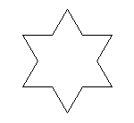
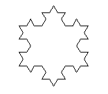
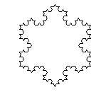
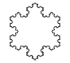
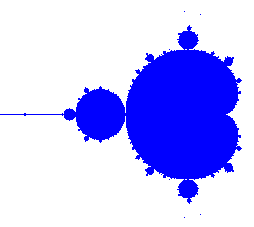
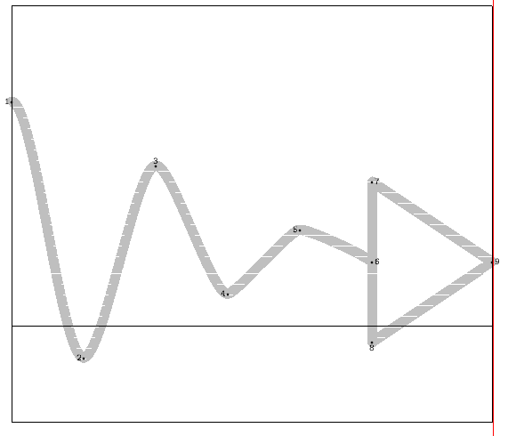
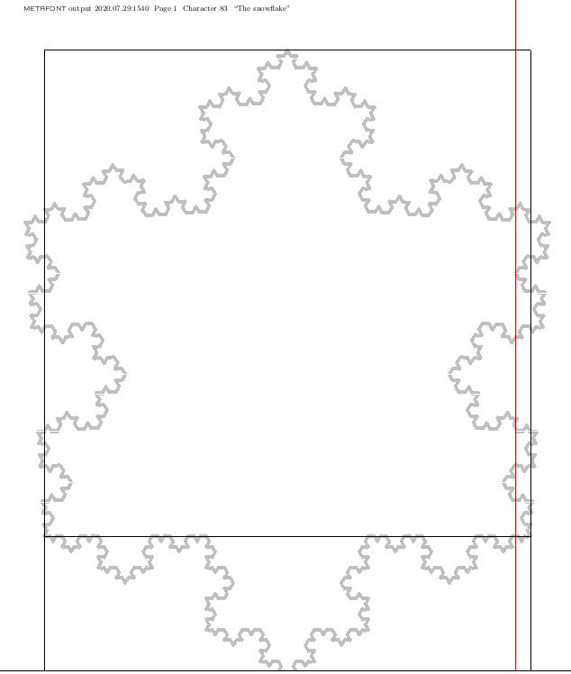
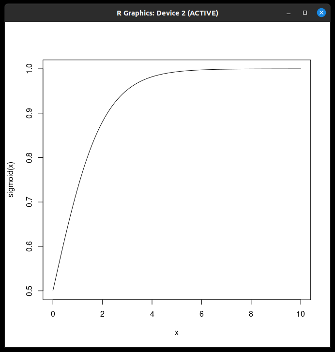

Le calcul
Réduction et résolution
Exemples en Scheme, ML et COQ
᾿Αγεωμέτρητος μη εἰσίτω
Vincent Cognet
Sainte-Marguerite, le 27 avril 2020
https://github.com/cogtoto
2
Table des matières
1
Le λ-calcul et la réduction
9
1.1
Définition, champ lexical et syntaxique . . . . . . . . . . . . . . . . . . . . . . . . . .
9
1.1.1
Analyse lexicale avec ocamllex
. . . . . . . . . . . . . . . . . . . . . . . . . .
9
1.1.2
Analyse syntaxique avec menhir
. . . . . . . . . . . . . . . . . . . . . . . . .
10
1.1.3
Implémentation du parsing en mode récursif descendant . . . . . . . . . . . .
11
1.2
Représentation en ML . . . . . . . . . . . . . . . . . . . . . . . . . . . . . . . . . . .
13
1.3
La β-réduction faible avec appel par valeur
. . . . . . . . . . . . . . . . . . . . . . .
17
1.4
La récursivité, le point fixe et la diagonale de Cantor . . . . . . . . . . . . . . . . . .
18
1.5
Church encoding. Les entiers et les booléens en λ-calcul . . . . . . . . . . . . . . . .
24
1.5.1
Les entiers Church . . . . . . . . . . . . . . . . . . . . . . . . . . . . . . . . .
24
1.5.2
Les booléens
. . . . . . . . . . . . . . . . . . . . . . . . . . . . . . . . . . . .
26
1.5.3
La fonction factorielle . . . . . . . . . . . . . . . . . . . . . . . . . . . . . . .
26
1.6
La notation de de Bruijn
. . . . . . . . . . . . . . . . . . . . . . . . . . . . . . . . .
26
2
Le λ-calcul simplement typé et les Pure Type Systems
29
2.1
Le λ-calcul simplement typé . . . . . . . . . . . . . . . . . . . . . . . . . . . . . . . .
29
2.1.1
Présentation
. . . . . . . . . . . . . . . . . . . . . . . . . . . . . . . . . . . .
29
2.1.2
Implémentation en COQ . . . . . . . . . . . . . . . . . . . . . . . . . . . . . .
29
2.1.3
Inférence de type . . . . . . . . . . . . . . . . . . . . . . . . . . . . . . . . . .
33
2.2
Les Pure Type Systems . . . . . . . . . . . . . . . . . . . . . . . . . . . . . . . . . . .
35
2.2.1
Introduction
. . . . . . . . . . . . . . . . . . . . . . . . . . . . . . . . . . . .
35
2.2.2
MiniCOQ . . . . . . . . . . . . . . . . . . . . . . . . . . . . . . . . . . . . . .
38
2.2.3
Le ∨ logique
. . . . . . . . . . . . . . . . . . . . . . . . . . . . . . . . . . . .
40
2.2.4
L’égalité . . . . . . . . . . . . . . . . . . . . . . . . . . . . . . . . . . . . . . .
41
2.2.5
Le faux . . . . . . . . . . . . . . . . . . . . . . . . . . . . . . . . . . . . . . .
42
2.2.6
Le point fixe
. . . . . . . . . . . . . . . . . . . . . . . . . . . . . . . . . . . .
43
2.2.7
La logique classique
. . . . . . . . . . . . . . . . . . . . . . . . . . . . . . . .
43
3
L’interprétation
47
3.1
Introduction . . . . . . . . . . . . . . . . . . . . . . . . . . . . . . . . . . . . . . . . .
47
3.2
Un interprète MiniScheme avec OCAML . . . . . . . . . . . . . . . . . . . . . . . . .
47
3.2.1
L’évaluation . . . . . . . . . . . . . . . . . . . . . . . . . . . . . . . . . . . . .
47
3.2.2
Les étapes Read, Eval, Print
. . . . . . . . . . . . . . . . . . . . . . . . . . .
49
3.2.3
Liaison lexicale vs liaison dynamique . . . . . . . . . . . . . . . . . . . . . . .
50
3.2.4
Gestion de l’environnement . . . . . . . . . . . . . . . . . . . . . . . . . . . .
51
3
3.3
Un interprète LISP avec le nouvel interprète MiniScheme . . .
. . . . . . . . . . . . .
53
3.4
L’auto-interprétation de l’interprète
. . . . . . . . . . . . . . . . . . . . . . . . . . .
54
3.4.1
La tour de Babel . . . . . . . . . . . . . . . . . . . . . . . . . . . . . . . . . .
54
3.4.2
Réification et réflexion . . . . . . . . . . . . . . . . . . . . . . . . . . . . . . .
55
4
La compilation
63
4.1
Compilation des λ-termes en termes applicatifs . . . . . . . . . . . . . . . . . . . . .
63
4.2
Compilation basique vers une machine à pile
. . . . . . . . . . . . . . . . . . . . . .
67
4.2.1
Certification de la compilation avec le langage COQ . . . . . . . . . . . . . .
68
4.3
Compilation du LISP vers une machine abstraite . . . . . . . . . . . . . . . . . . . .
71
5
La résolution
75
5.1
Représentation des termes finis . . . . . . . . . . . . . . . . . . . . . . . . . . . . . .
75
5.2
La substitution . . . . . . . . . . . . . . . . . . . . . . . . . . . . . . . . . . . . . . .
77
5.3
Filtrage et réécriture . . . . . . . . . . . . . . . . . . . . . . . . . . . . . . . . . . . .
78
5.3.1
Le filtrage . . . . . . . . . . . . . . . . . . . . . . . . . . . . . . . . . . . . . .
78
5.3.2
La réécriture et l’arithmétique de Peano . . . . . . . . . . . . . . . . . . . . .
79
5.4
L’unification des termes . . . . . . . . . . . . . . . . . . . . . . . . . . . . . . . . . .
81
5.5
Un mini PROLOG . . . . . . . . . . . . . . . . . . . . . . . . . . . . . . . . . . . . .
83
5.6
Quelques exemples de programmation en PROLOG
. . . . . . . . . . . . . . . . . .
84
5.6.1
Les entiers naturels . . . . . . . . . . . . . . . . . . . . . . . . . . . . . . . . .
84
5.6.2
Les additions de Peano
. . . . . . . . . . . . . . . . . . . . . . . . . . . . . .
84
5.6.3
Programmation "logique" en COQ . . . . . . . . . . . . . . . . . . . . . . . .
85
5.6.4
La base généalogique . . . . . . . . . . . . . . . . . . . . . . . . . . . . . . . .
86
5.7
L’algorithme de complétion de Knuth-Bendix . . . . . . . . . . . . . . . . . . . . . .
86
5.7.1
Confluence et paires critiques . . . . . . . . . . . . . . . . . . . . . . . . . . .
86
5.7.2
Terminaison . . . . . . . . . . . . . . . . . . . . . . . . . . . . . . . . . . . . .
88
5.7.3
Complétion de Knuth-Bendix . . . . . . . . . . . . . . . . . . . . . . . . . . .
88
6
Calculabilité et complexité
91
6.1
Les fonctions récursives
. . . . . . . . . . . . . . . . . . . . . . . . . . . . . . . . . .
91
6.2
La machine de Turing . . . . . . . . . . . . . . . . . . . . . . . . . . . . . . . . . . .
93
6.3
La thèse de Church . . . . . . . . . . . . . . . . . . . . . . . . . . . . . . . . . . . . .
95
6.4
Complexité . . . . . . . . . . . . . . . . . . . . . . . . . . . . . . . . . . . . . . . . .
96
6.4.1
Théorème de Cook . . . . . . . . . . . . . . . . . . . . . . . . . . . . . . . . .
96
6.4.2
Implémentation de l’algorithme SAT . . . . . . . . . . . . . . . . . . . . . . .
96
6.4.3
Sudoku - SAT encoding . . . . . . . . . . . . . . . . . . . . . . . . . . . . . .
97
7
Annexes / Divers
99
7.1
Quelques fonctions sur les listes . . . . . . . . . . . . . . . . . . . . . . . . . . . . . .
99
7.2
Les listes mutables . . . . . . . . . . . . . . . . . . . . . . . . . . . . . . . . . . . . .
99
7.3
Les listes infinies ou streams . . . . . . . . . . . . . . . . . . . . . . . . . . . . . . . . 100
7.4
Le module Graphics d’OCAML, les fractales . . . . . . . . . . . . . . . . . . . . . . . 102
7.5
Utilisation de METAFONT . . . . . . . . . . . . . . . . . . . . . . . . . . . . . . . . . 105
7.6
The boxes . . . . . . . . . . . . . . . . . . . . . . . . . . . . . . . . . . . . . . . . . . 107
7.7
Les modules OCAML. Modélisation d’un monoïde . . . . . . . . . . . . . . . . . . . 108
4
7.8
Machine Learning and Neural Networks . . . . . . . . . . . . . . . . . . . . . . . . . 109
7.8.1
Introduction
. . . . . . . . . . . . . . . . . . . . . . . . . . . . . . . . . . . . 109
7.8.2
Un peu de théorie
. . . . . . . . . . . . . . . . . . . . . . . . . . . . . . . . . 109
7.8.3
Calcul matriciel . . . . . . . . . . . . . . . . . . . . . . . . . . . . . . . . . . . 110
7.8.4
Fonctions d’activation . . . . . . . . . . . . . . . . . . . . . . . . . . . . . . . 111
7.9
Les nombres premiers. L’algorithme RSA
. . . . . . . . . . . . . . . . . . . . . . . . 112
7.10 Approximation du nombre π
. . . . . . . . . . . . . . . . . . . . . . . . . . . . . . . 116
7.10.1 La méthode des polygones . . . . . . . . . . . . . . . . . . . . . . . . . . . . . 117
7.10.2 La série alternée de Leibniz . . . . . . . . . . . . . . . . . . . . . . . . . . . . 119
7.10.3 La loi des grands nombres . . . . . . . . . . . . . . . . . . . . . . . . . . . . . 120
7.10.4 Le produit de Wallis . . . . . . . . . . . . . . . . . . . . . . . . . . . . . . . . 120
7.10.5 L’intégrale R 1
1
dx . . . . . . . . . . . . . . . . . . . . . . . . . . . . . . . . 121
0 1+x2
7.11 Poésies . . . . . . . . . . . . . . . . . . . . . . . . . . . . . . . . . . . . . . . . . . . . 121
7.12 Les fractions continues . . . . . . . . . . . . . . . . . . . . . . . . . . . . . . . . . . . 122
√
7.13 L’irrationalité de
2 . . . . . . . . . . . . . . . . . . . . . . . . . . . . . . . . . . . . 123
7.14 Démonstration non constructive . . . . . . . . . . . . . . . . . . . . . . . . . . . . . . 123
7.15 L’hyperbole xy = 1 . . . . . . . . . . . . . . . . . . . . . . . . . . . . . . . . . . . . . 123
7.16 L’exponentielle . . . . . . . . . . . . . . . . . . . . . . . . . . . . . . . . . . . . . . . 124
7.17 Les fonctions sin 1 et x. sin 1
. . . . . . . . . . . . . . . . . . . . . . . . . . . . . . . 124
x
x
7.18 Srivanasa Ramanujan
. . . . . . . . . . . . . . . . . . . . . . . . . . . . . . . . . . . 124
7.19 Le grec ancien . . . . . . . . . . . . . . . . . . . . . . . . . . . . . . . . . . . . . . . . 125
7.19.1 L’alphabet grec . . . . . . . . . . . . . . . . . . . . . . . . . . . . . . . . . . . 125
7.19.2 Les mathématiques grecques
. . . . . . . . . . . . . . . . . . . . . . . . . . . 125
7.19.3 Extraits du nouveau testament . . . . . . . . . . . . . . . . . . . . . . . . . . 125
5
6
Introduction
Aristote considérait les mathématiques comme une discipline, non pas tant de la vérité, que de
la beauté. [2]
What is mathematics ? Mathematics as an expression of the human mind reflects the active will,
the contemplative reason, and the desire for aesthetic perfection. [17]
C’est sous cet angle de l’esthétique que j’ai voulu ici modestement décrire quelques concepts
des fondements mathématiques de l’informatique.
Qu’est-ce que le calcul ? Il est difficile d’en donner une définition abstraite. Essayons cependant
de décrire l’action de calculer, le processus du calcul.
Nous identifions deux processus bien distincts appelés la réduction et la résolution. La ré-
duction est l’action de réduire séquentiellement une expression en une autre expression plus simple
au moyen de règles de réécriture. Lorsque plus aucune règle ne s’applique, l’expression calculée est
alors en forme normale. Cette forme normale correspondra à la valeur de notre calcul.
(3 + 8) + (4 − 9) ∗ 2 11 − 5 ∗ 2 11 − 10 1
Ce processus de réduction soulève deux difficultés essentielles :
— La terminaison. Est-que le processus termine en un nombre fini d’étapes ?
— La confluence. Si le processus termine, est-que l’expression aboutit à une forme normale
unique ?
La fonction mathématique usuelle est peu adaptée à une étude du processus du calcul. Car elle
repose en fait sur une définition en extension : une fonction mathématique est la description d’une
relation d’un ensemble de départ face à son ensemble d’arrivée.
Pour modéliser notre processus de calcul, il nous faut une définition en intension, c’est-à-dire
avec des règles de calcul explicites. Fondé sur cette idée, le λ-calcul a été créé par Alonzo Church
dans les années 1930. Il est maintenant utilisé comme socle de tout langage fonctionnel. Même
s’il est rudimentaire et basé sur un mécanisme simple de réécriture, nous verrons qu’il permet
d’exprimer toutes les fonctions calculables. Sa puissance de calcul est similaire aux machines de
Turing ou aux fonctions µ-récursives de Gödel. Nous l’étudierons en détails.
L’autre processus de calcul est la résolution. Nous l’utilisons chaque fois que nous devons ré-
soudre une équation. En résolvant x2 + 2x − 15 = 0, nous souhaitons que notre processus soit
complet, c’est-à-dire que nous calculions l’ensemble des valeurs possibles {−5; 3}. Nous étudierons
également ce mécanisme, et en particulier l’algorithme d’unification.
Enfin, nous aborderons la correspondante bluffante de la programmation fonctionnelle avec la
logique. C’est la correspondance de Curry-Howard.
7
Avec un langage de programmation typé comme OCAML où tout terme a un type, nous pouvons
considérer un terme comme étant la preuve (ou plutôt une des preuves possibles) de son type. Le
mécanisme strict de typage nous assure de la cohérence du terme avec son type. Nous avons alors
le rapprochement suivant :
terme
preuve
type
proposition
Nous sommes ici dans une logique constructive, démontrer une proposition revient à exhiber une
preuve, c’est-à-dire un terme ayant pour type la proposition. Ainsi, le principe du tiers-exclus
P ∨ ¬P ne peut être ici démontré.
Le type faux est un type inhabité, donc nous le définissons sans constructeur : type faux = |
Nous pouvons par exemple prouver le théorème du modus tollens :
let modus_tollens (hfq:’q->faux) (hpq:’p->’q) (hp:’p) = hfq (hpq hp)
Le type de cette expression est (’q -> faux) -> (’p -> ’q) -> ’p -> faux
Dans un langage proposant un système de types plus évolué comme COQ, le faux peut être
exprimé par le type ∀p : P, p. Ce type est également inhabité. Supposer le faux permettra de
démontrer n’importe quelle proposition.
Theorem faux : forall P:Prop, P.
Admitted.
Theorem absurdité : 1=2.
Proof.
exact (faux (1=2)).
Qed.
La correspondance de Curry-Howard montre toute son étendue dans le calcul des constructions,
qui considère les types comme des termes de premier ordre et permet ainsi de modéliser des types
dépendants. COQ implémente ce formalisme. Nous en montrerons plusieurs exemples significatifs.
Bonne lecture !
8
Chapitre 1
Le λ-calcul et la réduction
1.1
Définition, champ lexical et syntaxique
Le λ-calcul est un système formel très rudimentaire. Il n’utilise que peu de moyens : le symbole
λ, des variables et des parenthèses. Il n’a qu’une seule règle de calcul, la β-réduction, qui modélise
le passage d’un argument à une fonction.
Définition 1. Un λ-terme est défini par induction de la manière suivante :
— Une variable x est un λ-terme.
— Si t est un λ-terme, l’abstraction λx.t est un λ-terme.
— Si t1 et t2 sont des λ-termes, l’application (t1 t2) est un λ-terme.
Voici le champ lexical des λ-termes :
|
λ
LAMBDA
|
’.’
POINT
token = |
[a − z][a − z 0 − 9] *
VARIABLE
|
’(’
PARLEFT
|
’)’
PARRIGHT
Voici la grammaire des λ-termes, en utilisant les terminaux définis avant :
terme : :=
|
VARIABLE
|
PARLEFT terme terme PARRIGHT
|
LAMBDA VARIABLE . terme
Nous utiliserons ocamllex et menhir, qui est la version moderne de ocamlyacc, pour l’analyse
lexical et syntaxique des termes du λ-calcul.
1.1.1
Analyse lexicale avec ocamllex
Nous définissons ici le champ lexical des différents tokens (léxèmes) du λ-calcul.
(* file: lambdalexical.mll *)
{
open Lambdagrammar (* Assumes the parser file is "lambdagrammar.mly" *)
}
9
let texte = [’a’-’z’] [’a’-’z’ ’0’-’9’]*
rule token = parse
| "lambda"
{ LAMBDA }
| ’.’ { POINT }
| texte as varia
{ VARIABLE (varia) }
| ’(’
{ PARLEFT }
| ’)’
{ PARRIGHT }
| _
{ token lexbuf }
| eof
{ raise End_of_file }
La compilation de ce fichier .mll va générer une fonction dont le nom est celui de la règle (ici
token). Cette fonction prend comme argument le type lexbuf et rend le type token.
lexbuf est un type de données abstrait défini dans le module Lexing qui permet de mémoriser
la chaîne ou le fichier en cours d’analyse.
val token :
Lexing.lexbuf
-> token
1.1.2
Analyse syntaxique avec menhir
Nous définissons ici la grammaire du λ-calcul. Nous retrouvons les constructeurs du type ML
associés à chacune des règles de la grammaire. Ces constructeurs seront préenté dans la section qui
suit.
/* file: lambdagrammar.mly */
%{
open Terme
%}
%token <string> VARIABLE
%token LAMBDA PARLEFT PARRIGHT POINT
%token NEWLINE
%start exp
%type <Terme.terme> exp
%% /* Grammar rules and actions follow */
exp:
VARIABLE
{ Var($1) }
| PARLEFT exp exp PARRIGHT
{ App($2, $3)}
| LAMBDA VARIABLE POINT exp
{ Lam($2, $4) }
;
%%
Plus exactement, nous avons modifié cette grammaire naïve pour la rendre non ambiguë et
assurer l’associativité à gauche des λ-applications. En effet :
M N OP = (((M N )O)P )
10
%%
line:
exp NEWLINE { $1 }
;
exp: LAMBDA VARIABLE POINT exp
{ Lam($2, $4) }
| app {$1}
;
app:
atome {$1}
| app atome { App($1, $2) }
;
atome: PARLEFT exp PARRIGHT {$2}
| VARIABLE {Var($1)}
;
%%
Nous obtenons ainsi :
$ ./lambda.out
>> m n o p
App(App(App(Var "m" ,Var "n" ),Var "o" ),Var "p" )
>> lambda f . (lambda x . f(x x)) (lambda x. f(x x))
Lam("f",App(Lam("x",App(Var "f" ,App(Var "x" ,Var "x" ))),
Lam("x",App(Var "f" ,App(Var "x" ,Var "x" )))))
La compilation de ce fichier .mly va générer une fonction dont le nom est celui de l’axiome de
notre grammaire (ici exp). Cette fonction prend deux arguments : la fonction de l’analyseur lexical
qui génère les tokens et l’input. Elle rend le type des expressions utilisées commes actions dans la
grammaire.
val exp :
(Lexing.lexbuf
-> token) -> Lexing.lexbuf -> Terme.terme
Si le langage analysé n’est pas reconnu par la grammaire, l’exception Parse_error est levée.
1.1.3
Implémentation du parsing en mode récursif descendant
Si nous voulons nous passer d’un outil tel que ocamlyacc ou menhir, nous pouvons très facilement
implémenter un parser de manière récursive en partant depuis la racine (l’axiome des règles de notre
grammaire) et en appelant de manière récursive les régles suivantes en fonction du caractère lu.
On modifiera légèrement la grammaire comme ci-dessous pour faciliter le travail.
exprule
::=
| VARIABLE
| PARLEFT parrule
| NEWLINE
parrule
::=
| LAMBDA lambdarule
| apprule
lambdarule
::=
VARIABLE POINT exprule PARRIGHT
apprule
::=
exprule exprule PARRIGHT
11
Cela imposera cependant la saisie systématique des λ-termes avec des parenthèses autour des
abstractions et des applications. De même, nous n’aurons plus la facilité syntaxique de l’associativité
à gauche des applications et de l’associativité à droite du corps des abstractions. Je ne sais pas si
une telle grammaire peut être conçue pour une analyse en mode récursif descendant. Je pense que
non (après m’être un peu cassé les cheveux là-dessus... ).
Voici le code associé.
exception Fin
exception Erreur of string
let _ =
let lexbuf = Lexing.from_channel stdin in
let rec exprule courant =
match courant with
| VARIABLE(x) -> Var(x)
| PARLEFT -> parrule (lexana lexbuf)
| NEWLINE -> raise Fin
| _ ->
raise (Erreur "exprule")
and parrule courant =
match courant with
| LAMBDA -> lambdarule courant
| _ -> apprule courant
and apprule courant =
let op1 = exprule courant in
let op2 = exprule (lexana lexbuf) in
let suivant = lexana lexbuf in (* consume PARRIGHT*)
match suivant with
| PARRIGHT ->
App(op1, op2)
| _ -> raise (Erreur "apprule")
and lambdarule courant =
let var = lexana lexbuf in
let _ = lexana lexbuf in
(* consume POINT *)
let corps = exprule(lexana lexbuf) in
let _ =
lexana lexbuf (* consume PARRIGHT *) in
match var with
| VARIABLE(x) -> Lam(x, corps)
| _ -> raise (Erreur "lambdarule")
in (betaNormalPrint (exprule (lexana lexbuf)); flush stdout)
12
1.2
Représentation en ML
type terme =
| Var of string
| App of terme * terme
| Lam of variable * terme
Un terme du λ-calcul est donc un type ML composé, avec les constructeurs V ar, App et Lam.
Par exemple, le terme λx.(xy)z est representé par la structure :
App ((Lam ("x", (App ((Var "x"), (Var "y"))))), (Var "z"))
C’est un peu verbeux. Voici cependant sa représentation sous la forme d’un arbre syntaxique.
Le symbole @ représente ici l’application.
@
λ
z
x
@
x
y
Pour dessiner cet arbre, nous utilisons le très bon package TIKZ qui permet facilement de
représenter les arbres avec une syntaxe très simple.
\node{@}
child { node {$\lambda $}
child { node {x} }
child { node {@}
child { node {x} }
child { node {y} }
}
}
child { node {z} };
On implémente deux fonctions CAML qui permettent d’afficher une expression de type λ-terme
en code LATEX ou en code TIKZ.
La fonction varLibres retourne les variables libres (ie. non liées) d’un λ-terme.
let rec varLibres lambdaTerm =
match lambdaTerm with
| Var x -> [ x ]
| App (n, m) -> union (varLibres n) (varLibres m)
| Lam (x, m) -> remove x (varLibres m)
Par exemple : (λx.yxw)(λu.uv) 7−→ y, w, v
let exemple = App (Lam ("x", App (Var("y"), App (Var("x"),Var("w")))),
Lam ("u", App (Var ("u"), Var ("v")))) ;;
varLibres exemple ;;
- : variable list = ["y"; "w"; "v"]
13
Définition 2. Un redex ou radical est un terme de la forme (λx.M )N
On a déjà distingué deux formes possible sur les λ-termes : les abstractions λx.M et les appli-
cations (M N ). Un redex qui est de la forme (λx.M )N est la rencontre d’une abstraction et d’une
application. Voici son implémentation.
ML
SCHEME
(function x -> M) N
((lambda (x) M) N)
let x = N in M
(let ((x N)) M)
M where x = N
La dernière syntaxe M where x = N a disparu en OCAML. C’est dommage car elle est très élégante.
Nous essayerons de la reprendre pour notre interprète maison MiniML.
Définition 3. La β-réduction est une opération de substitution. Elle consiste à substituer dans le
redex (λx.M )N les occurrences libres de x dans M par l’argument N. On la formalise par la notation
suivante :
((λx.M )N ) →β M [x ← N ]
Nous pouvons la décrire par les quatre règles d’inférence ci-dessous :
(redex) : ((λx.M)N) → M[x ← N]
M → M1
M → M1
N → N1
(abstraction) :
(1) :
(2) :
λx.M → (λx.M1)
(M N ) → (M1N )
(M N ) → (M N1)
Pour l’implémentation, nous nous sommes appuyés sur le code de l’excellent livre Programmer
avec Scheme de Jacques Chazarain [4]. Nous avons adapté son code SCHEME en OCAML. En
comparant les deux versions, on s’aperçoit finalement que la version OCAML, même si un peu
plus concise que la version SCHEME grâce l’utilisation du pattern matching, reste très proche de
l’original SCHEME.
La fonction substituer permet de substituer la variable var par le terme terme dans l’expres-
sion exp.
let rec substituer exp var terme =
match exp with
| Var x -> if x = var then terme else exp
| App (n, m) -> App ((substituer n var terme), (substituer m var terme))
| Lam (x, m) -> (* pas d’occurence libre on en fait rien *)
if not (mem var (varLibres exp))
then exp
else (* si capture on renome *)
if mem x (varLibres terme)
then
(let newV = renomme x (varLibres terme) in
14
let newCorps = substituer m x (Var newV)
in Lam (newV, (substituer newCorps var terme)))
else
Lam (x, (substituer m var terme))
Avant de substituer une variable par une autre, nous devons nous assurer qu’il n’y aura pas
de phénomène de capture, ie. nous assurer qu’une variable libre ne deviendra pas liée, après sub-
stitution. Dans l’exemple suivant, la variable x qui était libre dans (zx) se retrouve capturée par
λ
λx.(xy)[y ← (zx)] = λx.(x(zx))
Pour éviter cela, il faut avant substitution opérer un renommage de la variable liée :
λx1.(x1y)[y ← (zx)] = λx1.(x1(zx))
Ce renommage est appelé α-conversion. On dit que deux termes M et N sont équivalents modulo
α. On écrira M =α N
(** renommer var *)
let renomme var listeVar =
let rec renommeAux j =
let varj = var ^ (string_of_int j)
in if mem varj listeVar then renommeAux (j + 1) else varj
in renommeAux 0
La fonction reduc1Normale réduit le terme en appliquant la stratégie de réduction normale,
c’est-à-dire en commencant la réduction par le redex extèrieur, plus précisément le plus à gauche
des extèrieurs.
let rec reduc1Normale terme =
match terme with
| Var x -> raise IRREDUCTIBLE
| Lam (x, m) -> Lam (x, (reduc1Normale m))
| App (n, m) ->
if estRedex terme
then betaReducRedex terme
else
try App ((reduc1Normale n), m)
with IRREDUCTIBLE
-> App (n, (reduc1Normale m))
Enfin, nous avons une fonction fullReduc qui permet d’itérer l’opération de β-réduction jusqu’à
trouver la forme normale, ou boucler s’il n’y a pas de forme formale. On lui impose donc maximum
1000 réductions. Elle prend en argument la méthode (ie. la stratégie de réduction) à utiliser.
let rec fullReduc terme methode
=
let rec loop terme
iter =
try
let newterme = methode terme in
if (newterme = terme || iter = 0) then newterme
15
else loop newterme (iter - 1)
with IRREDUCTIBLE -> terme
in loop terme 1000
let betaNormal t = fullReduc t reduc1Normale
Théorème 1. La réduction normale appliquée à un terme normalisable aboutit toujours à la forme
irréductible du terme.
Nous avons en plus le théorème suivant (plus précisément son corollaire) qui nous assure que
toutes les réductions d’un λ-terme (qui terminent) aboutissent au même terme irréductible.
Théorème 2. Théorème de Church-Rosser : la β-réduction est confluente.
M
∗
∗
∗
∗
si M −→
−→
M
β M1 et M
β M2 alors ∃ M 0 tel que
1
M2
∗
∗
M −→
−→
∗
∗
1
β M 0 et M2
β M 0
M 0
Théorème 3. Corollaire du théorème de Church-Rosser
∗
Si M est normalisable, il existe un unique terme normal, noté M tel que M −→β M
Un corollaire ne devrait pas nécessiter de preuve car supposée évidente. La voici cependant :
M
∗
Si M est normalisable, alors il existe M
−→
∗
∗
1 normal tel que M
β M1 ;
∗
si M −→
M
β M2 avec M2 normal, alors par confluence il existe M3 tel
1
=
M2
=
∗
∗
∗
∗ =
que M 1 −→β M3 et M 2 −→β M3. Or M1 et M2 sont normaux donc
M1 = M3 et M2 = M3 donc M1 = M2 .
M 3
let t1 = App (Lam ("x",App (Lam ("y", App (Var ("x"), Var ("y"))),Var ("u"))), Var ("z")) ;;
# fullReduc t1 ;;
--> ((lambda x . ((lambda y . (xy))u))z)
--> ((lambda y . (zy))u)
--> (zu)
- : unit -> unit = <fun>
(λx.(λy.xy)u)z →β (λy.zy)u →β (zu)
16
(λx.(λy.xy)u)z
(λy.zy)u
(zu)
@
λ
z
x
@
@
λ
u
λ
u
y
@
y
@
@
x
y
z
y
z
u
Voici un exemple de terme qui ne termine pas et qui enfle.
(λx.xxx)(λx.xxx) →β (λx.xxx)(λx.xxx)(λx.xxx) →β (λx.xxx)(λx.xxx)(λx.xxx)(λx.xxx) →β . . .
1.3
La β-réduction faible avec appel par valeur
Dans un langage fonctionnel comme SCHEME ou ML, il est important de noter que contraire-
ment au λ-calcul, le corps de la lambda n’est pas évalué. On parle de β-réduction faible. Autrement
dit, la règle suivante n’est pas utilisée :
M → M1
(abstraction) : λx.M → (λx.M1)
Nous pourrons utiliser cette absence d’évaluation du corps des lambda expressions pour geler l’éva-
luation de nos expressions : (delay exp) = (lambda () exp)
L’appel par valeur signifie que les arguments sont évalué en premier. Les règles d’inférence
appliquées sont donc dans cet ordre :
N → N1
M → M1
(1) :
(2) :
(3) :
(M N ) → (M N1)
(M N ) → (M1N )
((λx.M )N ) → M [x ← N ]
Voici la fonction ML qui implémente cet ordre :
let rec reduc1Valeur terme =
match terme with
| Var x -> raise IRREDUCTIBLE
| Lam (x, m) -> raise IRREDUCTIBLE
| App (n, m) ->
(try App (n, (reduc1Valeur m))
with
| IRREDUCTIBLE ->
(try App ((reduc1Valeur n), m)
17

with
| IRREDUCTIBLE ->
(try betaReducRedex terme
with | NOTREDEX -> raise IRREDUCTIBLE)))
Par exemple, nous aurons les réductions successives suivantes :
— réduction normale, qui aboutit toujours à la forme irréductibre
(λx.y)((λx.xx)(λx.xx)) →β y
— réduction par valeur
(λx.y)((λx.xx)(λx.xx))
→β
(λx.y)((λx.xx)(λx.xx))
→β
(λx.y)((λx.xx)(λx.xx))
→β (λx.y)((λx.xx)(λx.xx)))
→β
. . .
1.4
La récursivité, le point fixe et la diagonale de Cantor
What else is a loop but a way of representing an endless process in a finite way ? [9]
√2 = 1 + 1√
1+
2
En analyse, le point fixe d’une fonction f est sa valeur x telle que f (x) = x
Cela permet de définir x en fonction de lui-même.
Cette simple expression x = f (x) est finalement très étrange et déroutante. C’est la force de la
récursivité : x = f (f (f (f (f (f . . . (x) . . .))))))
√
Un exemple est la valeur
2 exprimée sous forme d’une fraction continue, expression trou-
vée je crois par Euler. Je la décris ci-dessous pour le plaisir d’écrire (et lire) de belles formules
mathématiques en LATEX[13]
√
√
√
√
( 2 − 1)( 2 + 1)
1
2 = 1 +
2 − 1 = 1 +
√
= 1 +
√
2 + 1
1 +
2
18
y
y = x
√
1
2 = 1 +
1
2 +
√
1
2
y = 1 + 1
2 +
1+x
1
2 +
1
x
2 +
√
. .
2
.
En posant f (x) = 1 + 1 , la résolution de l’équation x = f (x) nous permet de calculer la valeur
1+x
√
√
de
2. Nous utilisons aussi le fait que
2 est un point fixe attractif de notre fonction f . C’est-à-dire
√
qu’il existe un voisinage de
2 tel que la suite x0, f (x0), f (f (x0)), f (f (f (x0))), . . . converge vers
√2
En CAML, la fonction qui itère cette fraction continue peut être codée comme suit. Nous partons
ici de x0 = 1. La fraction continue converge très rapidement.
let rec square2 iter =
if (iter = 1) then 1.
else
1. +. ( 1. /. ( 1. +. square2 (iter - 1)));;
val square2 : int -> float = <fun>
# square2 30 ;;
- : float = 1.4142135623730951
# sqrt 2. ;;
- : float = 1.41421356237309512.
En λ-calcul, nous avons un combinateur 1 qui nous permet de calculer le point fixe de n’importe
quel λ-terme. Ce combinateur s’appelle Y . Il est défini par
Y = λf.(λx.f (xx))(λx.f (xx))
Ce n’est pas le seul combinateur de point fixe. Voici un autre dû à Turing :
Θ = (λx.λy.(y(xxy)))(λx.λy.(y(xxy)))
Voici l’arbre syntaxique de Y :
1. Un combinateur est un λ-terme comprenant uniquement des variables liées
19
λ
f
@
λ
λ
x
@
x
@
f
@
f
@
x
x
x
x
Quel que soit le terme M , nous aurons (Y M ) =β M (Y M )
Essayons ceci avec notre notre fonction fullReduc en CAML. Réduisons Y M :
λf.(λx.(f (xx)))(λx.(f (xx)))M
→β (λx.(M (xx)))(λx.(M (xx)))
→β (M (λx.(M (xx)))(λx.(M (xx)))) . [2]
→β (M M (λx.(M (xx)))(λx.(M (xx))))
→β (M M M (λx.(M (xx)))(λx.(M (xx))))
→β (M M M M (λx.(M (xx)))(λx.(M (xx))))
→β . . .
La deuxième β-réduction est bien égale à M (Y M ) Nous voyons ici le mécanisme d’appel récursif
à M.
Détaillons cela avec une fonction exprimée en pseudo-code d’un λ-calcul étendu. Nous nous
inspirons pour cela du très bon article de wikipedia https://en.wikipedia.org/wiki/Lambda_
calculus.
Soit M = (λf λn.(if n = 0 then 1 else n ∗ f (n − 1)))
(Y M ) 4
→β M (Y M ) 4
→β (λf λn.(if n = 0 then 1 else n ∗ f (n − 1)))(Y M ) 4
→β (λn.(if n = 0 then 1 else n ∗ ((Y M )(n − 1)))) 4
→β (if 4 = 0 then 1 else 4 ∗ ((Y M ) (4 − 1)))
→β 4 ∗ ((Y M ) 3)
→β 4 ∗ (M (Y M ) 3)
...
→β 4 ∗ 3 ∗ 2 ∗ 1
Ici encore, nous avons utilisé la stratégie de β-réduction normale. Mais avec une réduction par
valeur, le terme en argument (Y M ) aura été réduit indéfiniment en M (M (M (M (M . . . Y M ) . . .))),
sans réduire le redex M x
En utilisant notre programme OCAML, voyons cela avec en prenant M = λa.(λb.b) :
# betaNormal ym ;;
(λf.(λx.(f (xx))λx.(f (xx)))λa.λb.b)
→β (λx.(λa.λb.b(xx))λx.(λa.λb.b(xx)))
.[2]
→β (λa.λb.b(λx.(λa.λb.b(xx))λx.(λa.λb.b(xx)))) .[3]
→β λb.b
20
# betaValeur ym ;;
(λf.(λx.(f (xx))λx.(f (xx)))λa.λb.b)
→β (λx.(λa.λb.b(xx))λx.(λa.λb.b(xx)))
.[2]
→β (λa.λb.b(λx.(λa.λb.b(xx))λx.(λa.λb.b(xx))))
.[3]
→β (λa.λb.b(λa.λb.b(λx.(λa.λb.b(xx))λx.(λa.λb.b(xx)))))
→β (λa.λb.b(λa.λb.b(λa.λb.b(λx.(λa.λb.b(xx))λx.(λa.λb.b(xx))))))
→β (λa.λb.b(λa.λb.b(λa.λb.b(λa.λb.b(λx.(λa.λb.b(xx))λx.(λa.λb.b(xx)))))))
Les étapes .[2] et .[3] sont bien les mêmes sur les deux stratégies. Puis la β-réduction par valeur
va continuer à réduire l’argument (Y M ), là où la β-réduction normale va d’abord réduire le redex
M x
Avec la réduction par valeur, il nous faut donc utiliser un autre combinateur de point fixe 2 que
nous appelerons Z
Z = λf.(λx.f (λv.xxv))(λx.f (λv.xxv))
On constate que Z est η-équivalent à Y . Nous rappelons la définition suivante :
Définition 4. Les termes (λx.M x) et M sont η-équivalents. On écrira (λx.M x) =η M
En ML, nous pouvons par exemple dire que let g x = f x est η-équivalent à let g = f
Appliquons à nouveau notre exemple avec ce combinateur Z appliqué à M = λa.λb.b :
# betaValeur zm ;;
((λf.((λx.(f (λv.((xx)v))))(λx.(f (λv.((xx)v))))))(λa.(λb.b)))
→β ((λx.((λa.(λb.b))(λv.((xx)v))))(λx.((λa.(λb.b))(λv.((xx)v)))))
→β ((λa.(λb.b))(λv.(((λx.((λa.(λb.b))(λv.((xx)v))))(λx.((λa.(λb.b))(λv.((xx)v)))))v)))
→β (λb.b)
Nous avons le même réultat et les même étapes de réduction avec betaNormal zm ;;
En SCHEME, nous pourrons implémenter ce combinateur Z :
(define Z
(lambda(f)
(lambda (x) (lambda(v) ((f (x x) v))))
(lambda (x) (lambda(v) ((f (x x) v))))))
En ML, le typage ne nous permettra pas de coder un combinateur comme Y ou Z.
Essayons cependant d’écrire :
# let rec fix f = f (fix f) ;;
val fix : (’a -> ’a) -> ’a = <fun>
let factabs fact = function
| 0 -> 1
| n -> n * fact (n - 1) ;;
2. Nous insistons là-dessus car nous rappelons que les interprètes MiniScheme et MiniML que nous implémenterons
utiliseront la β-réduction faible par valeur.
21
val factabs : (int -> int) -> int -> int = <fun>
# (fix factabs) 5 ;;
Stack overflow during evaluation (looping recursion?).
ML est bien un langage strict : les arguments d’une fonction sont évalués en premier comme on l’a
vu dans la β-réduction faible avec appel par valeur.
Pour éviter la boucle infinie f (f . . . (f (f ixf )) . . .), une astuce que j’ai pu lire est d’introduire
une variable supplémentaire :
# let rec fix f x = f (fix f) x ;;
val fix : ((’a -> ’b) -> ’a -> ’b) -> ’a -> ’b = <fun>
# (fix factabs) 5 ;;
- : int = 120
Ici aussi, le mécanisme de la “η-expansion” est utilisé. Je suis surpris cependant de voir que fix
prenant deux arguments est correctement évalué lors de son appel (fix f). Je ne peux reproduire
cela en SCHEME :
(define factabs
(lambda (f)
(lambda (n)
(if (eq? n 0)
1
(* n (f (- n 1)))))))
(define y
(lambda (f x)
(f (y f) x)))
(y factabs 5)
=> y: arity mismatch; the expected number of arguments does not match
expected: 2
given: 1
Le théorème de Cantor nous dit qu’il n’y a pas de fonction surjective f : N → (N → B). Autre-
ment dit, le cardinal des parties de N est strictement plus grand que le cardinal de N. Démontrons
cela.
Soient X0, X1, . . . , Xn les parties de N
Soit f (m, n) = true si m ∈ Xn et f alse sinon.
Soit g : B → B la fonction sans point fixe telle que g(f alse) = true et g(true) = f alse.
Considérons la fonction h : N → B telle que h(x) = g(f (x, x)) Supposons f surjective donc
∃a, f (a) = h ⇔ f (a, a) = h(a) = g(f (a, a)) Cela est impossible car g n’admet pas de point
fixe par définition.
Ainsi f n’est pas surjective.
Voici la représentation matricielle de la fonction f (x, y). Les valeurs true et f alse sont repré-
sentées par 1 et 0. La colonne est la valeur de x et la ligne est la valeur de y.
22
0
1
2
3
4
5
6
7
...
0
1
2
3
4
5
6
7
...
1
0
0
1
0
1
0
1
...
X0
0
0
0
1
0
1
0
1
...
X0
0
0
0
1
0
0
0
0
...
X1
0
1
0
1
0
0
0
0
...
X1
1
0
1
1
1
1
1
0
...
X
1
0
0
1
1
1
1
0
...
X
2
2
1
0
0
1
0
1
0
0
...
X
1
0
0
0
0
1
0
0
...
X
3
3
⇒
0
0
0
1
0
1
0
0
...
X4
g(f (x,x)) 0
0
0
1
1
1
0
0
...
X4
0
0
0
0
0
1
0
1
...
X5
0
0
0
0
0
0
0
1
...
X5
0
0
0
1
1
0
1
0
...
X
0
0
0
1
1
0
0
0
...
X
6
6
0
0
0
0
0
0
0
0
...
X7
0
0
0
0
0
0
0
1
...
X7
.
.
.
.
.
.
. .
..
. .
Voici la démonstration formelle en COQ.
Require Import Bool.
Section Cantor.
Lemma negb prop : ∀ a :bool, negb a =a → False.
Proof.
intros.
unfold negb in H.
induction a. inversion H. inversion H.
Qed.
Definition surjective {X :Type} (f : nat → X ) : Prop := ∀ y, ∃ x, f x = y.
Theorem cantor : ¬ ∃ f : nat → nat → bool, surjective f.
Proof.
intros [f SURJ ].
pose (g := fun b ⇒ negb b ).
soit h la diagonalisation négative de la mort
pose (h := fun x ⇒ g (f x x )).
on applique l’hypothèse de surjection de f sur h
destruct (SURJ h) as [x B].
assert (C : h x = f x x ).
{
rewrite B. reflexivity.
}
unfold h in C.
unfold g in C.
apply negb prop in C.
assumption.
Qed.
End Cantor.
23
Que vient faire Cantor sur ce chapitre décrivant les opérateurs de point fixes du λ-calcul ? Le mé-
canisme de la diagonalisation nous permet de retrouver l’opérateur de point fixe λg.(λ.g(xx))(λ.g(xx)
Nous pourrons nous reférer à l’ouvrage de Jean-Yves Girard, Le Point Aveugle [8]
Voyons cela.
Prenons la fonction identité f = λx.x. Considérons cette fonction identité pouvant prendre
en argument une abstraction et rendant une abstraction pour se rapprocher de notre fonction f
précédente de type A → (A → B)
Cette fonction est bien surjective. Donc par la contraposée du théorème de Cantor, quel que
soit h, nous aurons un a tel que f a = h, et ce a pourra être h. Par diagonalisation : f aa = ha = hh
Considérons h = λx.g((f x)x) pour un terme g quelconque. f est la fonction identité, donc
h = λx.g(xx)
hh = λx.g(xx)λx.g(xx)
hh = g(hh)
L’opérateur de point fixe est ainsi Y = λg.(λx.g(xx)λx.g(xx)). Aucun terme n’est donc sans point
fixe dans le λ-calcul à la différence de l’exemple précédent où notre fonction de B → B n’avait pas
de point fixe.
1.5
Church encoding. Les entiers et les booléens en λ-calcul
1.5.1
Les entiers Church
Les entiers peuvent être représenté de la manière suivante :
0 ≡ λf.λx.x
1 ≡ λf.λx.f x
2 ≡ λf.λx.f (f x)
3 ≡ λf.λx.f (f (f x))
La fonction successeur se définira SU CC ≡ λn.λf.λx.f (nf x) Avec notre représentation ML :
Lam("n", Lam("f", Lam("x",App(Var "f", App(App(Var "n", Var "f"), Var "x")))))
Exécutons avec la stratégie normale, puis avec la stratégie de réduction faible par valeur :
# betaNormalPrint (App(succ, un)) ;;
(λn.λf.λx.(f ((nf )x))λf.λx.(f x))
→β λf.λx.(f ((λf.λx.(f x)f )x))
→β λf.λx.(f (λx.(f x)x))
→β λf.λx.(f (f x))
Exception : IRREDU CT IBLE.
# betaValeurPrint (App(succ, un)) ;;
(λn.λf.λx.(f ((nf )x))λf.λx.(f x))
→β λf.λx.(f ((λf.λx.(f x)f )x))
Exception : IRREDU CT IBLE.
Nous n’aboutissons pas au terme λf.λx.(f (f x)) avec la stratégie par valeur. Nous voyons que le
corps de la lambda n’est pas évalué. Je suis cependant surpris car je pensais cette stratégie (même
si appelée faible) parvenait à calculer la forme normale.
Nous pouvons écrire en OCAML la fonction qui convertit des entiers vers les terms Church :
24
let rec int2Church = function
| 0 -> Lam("f", Lam("x", Var "x"))
| n -> App(succ, int2Church (n-1))
# betaNormal (int2Church 3) ;;
(λn.λf.λx.(f ((nf )x))(λn.λf.λx.(f ((nf )x))(λn.λf.λx.(f ((nf )x))λf.λx.x)))
→β λf.λx.(f (((λn.λf.λx.(f ((nf )x))(λn.λf.λx.(f ((nf )x))λf.λx.x))f )x))
→β λf.λx.(f ((λf.λx.(f (((λn.λf.λx.(f ((nf )x))λf.λx.x)f )x))f )x))
→β λf.λx.(f (λx.(f (((λn.λf.λx.(f ((nf )x))λf.λx.x)f )x))x))
→β λf.λx.(f (f (((λn.λf.λx.(f ((nf )x))λf.λx.x)f )x)))
→β λf.λx.(f (f ((λf.λx.(f ((λf.λx.xf )x))f )x)))
→β λf.λx.(f (f (λx.(f ((λf.λx.xf )x))x)))
→β λf.λx.(f (f (f ((λf.λx.xf )x))))
→β λf.λx.(f (f (f (λx.xx))))
→β λf.λx.(f (f (f x)))
Exception : IRREDU CT IBLE.
L’addition peut être exprimée par le combinateur λm.λn.λf.λx.mf (nf x)x
La multiplication peut être exprimée par le combinateur λm.λn.λf.λx.m(nf )x
Le prédecesseur peut être exprimé par le combinateur λn.λf.λx.n (λg.λh.h (g f )) (λu.x) (λu.u)
Après avoir défini les termes succ et pred, nous pouvons écrire les deux fonctions suivantes qui
“jonglent” entre les entiers ML et les entiers Church.
let int2Church n =
let rec aux = function
| 0 -> Lam("f", Lam("x", Var "x"))
| n -> App(succ, aux (n-1))
in betaNormal (aux n)
let rec church2Int
terme =
match terme with
| Lam("f", Lam("x", Var "x")) -> 0
| _ -> 1 + church2Int (betaNormal(App(pred, terme)))
# church2Int (int2Church 10);;
- : int = 10
Egalement, nous pouvons représenter directement en ML les entiers Church sous forme de
fonctionnelles :
let zero f x = x
let un f x = f x
let deux f x = f (f x)
let succ n f x = f (n f x)
let add n m f x = n f (m f x)
25
let to_int n = n (function k -> k + 1) 0
let rec to_church = function
| 0 -> zero
| n -> succ (to_church (n-1))
#to_int (add deux (succ (to_church 5))) ;;
- : int = 8
1.5.2
Les booléens
Nous pourrons les représenter de la façon suivante. On y ajoute le prédicat IsZero.
true
≡ λa.λb.a
false
≡ λa.λb.b
and
≡ λp.λq.p q p
or
≡ λp.λq.p p q
not
≡ λp.p (λa.λb.b) (λa.λb.a) = λp.p false true
if
≡ λp.λa.λb.p a b
IsZero
≡ λn.n (λx. false) true
1.5.3
La fonction factorielle
Nous pouvons l’exprimer de manière assez simple. La difficulté est de manipuler toujours les
applications avec un seul argument, en version curryfiées. Nous appliquons le combinateur Y associé
à la stratégie de réduction normale. Attention à ne pas réduire telle quelle la fonction fact. La
réduction serait infinie comme on l’a vu précedemment. Seul la présence d’un argument permet
d’aboutir à la forme normale.
Cette forme normale constitue notre valeur (au sens d’un langage interprété).
let fact =
App (y,
(Lam ("f",
(Lam ("n",
(App ((App ((App (si, (App (isZero, (Var "n"))))), un)),
(App ((App (mult, (Var "n"))),
(App ((Var "f"), (App (pred, (Var "n"))))))))))))))
# church2Int (betaNormal (App(fact, int2Church 4)));;
- : int = 24
Nous n’afficherons pas les réductions ici. Le calcul de la factorielle de 3 nécessite 705 β-réductions.
La factorielle de 5 en nécessite plus de 28000. . .
1.6
La notation de de Bruijn
What’s in a name ? That which we call a rose
By any other name would smell as sweet.[18]
Citation reprise par Xavier Leroy dans son excellent cours au collège de France
26
Le mécanisme de capture d’une variable libre par une lambda, qui nous oblige à faire de manière
fastidieuse du renommage ponctuel de variables, est dû au fait qu’il y a un partage possible entre
les noms des variables libres et des variables liées.
Pour éviter cela, nous pouvons utiliser une autre représentation du λ-terme. Le principe est de
nommer les variables liées par un indice indiquant la profondeur de leurs liens (ou autrement dit
la hauteur de leurs liaisons).
L’arbre syntaxique sera alors défini par :
1. les feuilles qui correspondent à des variables libres ou liées, représentées par un indice
2. le noeud unaire λ
3. le noeud binaire @
type tbruijn =
| Va of int
| La of tbruijn
| Ap of tbruijn * tbruijn
Soit le terme M = λx.x(λy.yx), indiquons en exposant la hauteur de la liaison de chaque
variable liée : M = λx.x0(λy.y0x1)
Figure 1.1 – Représentation du terme λx.x(λy.yx)
λ
@
0
λ
@
0
1
Pour les variables libres, nous pouvons aussi utiliser un indice pour les nommer. Soit un ensemble
de variables libres x1, x2, x3, . . . , xn nous les nommerons en ajoutant à leur indice i la profondeur
jusqu’à la racine. Les indices des variables libres seront donc toujours supérieur à ceux des variables
liées sur leurs branches. Cependant, avec cette notation une même variable libre avec plusieurs
occurences dans un terme pourra avoir des indices différents.
Nous avons maintenant une représentation canonique : deux termes sont α-équivalents si et
seulement si leurs représentations en de de Bruijn sont égales.
Voici une fonction d’implémentation t2b transformant des termes en termes de de Bruijn.
let reste s = int_of_string(sub s 1 ((String.length s)-1)) ;;
let add_env var env =
(var,0)::map (fun pp -> (fst(pp),(1 + snd(pp)))) env ;;
let t2b terme =
let l = varLibres terme in
let rec terme_to_bruijn t env hauteur =
27
match t with
| Var x -> if (mem x l) then Va((reste x) + hauteur) else Va(assoc x env)
| App (n1, n2) -> Ap (terme_to_bruijn n1 env hauteur, terme_to_bruijn n2 env hauteur)
| Lam (x, c) -> La (terme_to_bruijn c (add_env x env) (hauteur+1) )
in terme_to_bruijn terme [] 0
let decalage d t =
let rec aux p = function
| Ap (t1,t2) -> Ap (aux p t1, aux p t2)
| La (t) -> La (aux (p+1) t)
| Va (i) when i<p -> Va(i)
| Va(i) -> Va (i+d)
in aux 0 t
let beta_b (La u) t =
let rec aux p = function
| Ap (u1,u2) -> Ap (aux p u1, aux p u2)
| La (v) -> La (aux (p+1) v)
| Va (i)
when i=p -> decalage p t (*on rend t décalé de la profondeur d’abstr p*)
| Va (i)
when i<p -> Va (i) (*i est lié, on la rend tel quel *)
| Va (i) -> Va (i-1) (* on décrèmente la variable libre car la betareduc supprime une lamdda*)
in aux 0 u ;;
let rec normale_bruijn
= function
| Va x -> raise IRREDUCTIBLE
| La n -> La (normale_bruijn n)
| Ap (La n, m) -> beta_b (La n) m
| Ap (n,m) -> try Ap (normale_bruijn
n, m)
with IRREDUCTIBLE -> Ap (n, normale_bruijn
m)
let rec reduc_bruijn t =
try reduc_bruijn (normale_bruijn t)
with IRREDUCTIBLE -> t
Représenter l’ensemble des variables (libres et liées) par un indice de profondeur rend le terme
très peu lisible. La représentation la plus commode semble finalement être d’utiliser la notation de
de Bruijn pour les variables liées et continuer à nommer les variables libres par des lettres.
Cela impose dans la définition inductive du terme de distinguer les variables libres des variables
liées.
Par exemple en COQ :
Inductive terme : Set :=
| bvar : nat -> terme
| fvar : string -> terme
| abs
: terme -> terme
| app
: terme -> terme -> terme.
28
Chapitre 2
Le λ-calcul simplement typé et les
Pure Type Systems
2.1
Le λ-calcul simplement typé
2.1.1
Présentation
Un terme comme λx.xx n’a pas de sens en mathématiques. Comment x peut être à la fois un
argument et la fonction qu’on lui applique ? Le λ-calcul typé introduit des types simples permettant
de distinguer les fonctions des variables.
Un contexte, ou environnement de typage Γ, est un ensemble de paires de la forme (x, τ ) où x
est une variable et τ un type. Un jugement de typage est un triplet Γ ` t : τ
Le terme t sera bien typé dans Γ par les règles de jugement suivantes :
si (x, τ ) ∈ Γ, alors Γ ` x : τ
si Γ ∪ (x, τ1) ` u : τ2, alors Γ ` λx : τ1.u : τ1 → τ2
si Γ ` u : τ1 → τ2 et Γ ` v : τ1, alors Γ ` uv : τ2
2.1.2
Implémentation en COQ
Représentation des types et des termes
Pour les types, nous avons deux constructeurs, un pour les types de variable and un pour les
types des abstractions : le type flèche de la forme T1 → T2.
Inductive typ : Set :=
| typ_var
: string -> typ
| typ_arrow : typ -> typ -> typ.
Pour les termes, nous utilisons la locally namless representation Les variables liées sont repré-
sentées par les indices de de Bruijn et les variables libres par des chaînes de caractères.
29
Inductive terme : Set :=
| bvar : nat -> terme
| fvar : string -> terme
| abs
: terme -> terme
| app
: terme -> terme -> terme.
Coercion bvar : nat >-> terme.
Coercion fvar : string >-> terme.
Voici un exemple avec le terme t2 = λx.λy.(yx))
Definition t2 := abs (abs (app 0 1)).
Opening
L’opening remplace un indice par un terme. Cela correspond à la substitution d’une variable
liée, telle qu’appliquée lors de la β-réduction.
Fixpoint open_rec (k : nat) (u : terme) (t : terme) {struct t} : terme :=
match t with
| bvar i
=> if k =? i then u else (bvar i)
| fvar x
=> fvar x
| abs t1
=> abs (open_rec (S k) u t1)
| app t1 t2 => app (open_rec k u t1) (open_rec k u t2)
end.
Definition open t u := open_rec 0 u t.
Notation "{ k ~> u } t" := (open_rec k u t) (at level 67).
Notation "t ^^ u" := (open t u) (at level 67).
Notation "t ^ x" := (open t (fvar x)).
Lemma demo_open :
open (app (abs (app 1 0)) 0) "Y" =
(app (abs (app "Y" 0)) "Y").
Proof.
unfold open. unfold open_rec. auto.
Qed.
La sémantique
Nous définissons la sémantique de la réduction avec appel par valeur.
Inductive valeur : terme -> Prop :=
| valeur_abs : forall (t1: terme), valeur (abs t1).
Inductive red : terme -> terme -> Prop :=
| red_beta : forall (t1 t2:terme),
30
valeur t2 ->
red (app (abs t1) t2) (t1 ^^ t2)
| red_app_1 : forall t1 t1’ t2 :terme,
red t1 t1’ ->
red (app t1 t2) (app t1’ t2)
| red_app_2 : forall t1 t2 t2’ :terme,
valeur t1 ->
red t2 t2’ ->
red (app t1 t2) (app t1 t2’).
Nous utilisons la notation t --> t’ pour la réduction en une étape.
Notation "t --> t’" := (red t t’) (at level 68).
La gestion de l’environnement et du contexte
Definition ctx := list (string * typ).
Open Scope list_scope.
Module ListNotations.
Notation " [ ] " := nil : list_scope.
Notation " [ x ] " := (cons x nil) : list_scope.
Notation " [ x ; .. ; y ] " := (cons x .. (cons y nil) ..) : list_scope.
Notation " s1 & s2 " := (Datatypes.app s1 s2) (at level 67)
: list_scope.
End ListNotations.
Import ListNotations.
Definition e1 :ctx := [ ("v1", typ_var "entier") ].
Definition e2 :ctx := [ ("v2", typ_var "entier") ].
Compute e1 & e2 .
Le typage
If E and F are two contexts, then E &F denotes their concatenation. If x is a variable and T is
a type, then (x T ) denotes a singleton environment where x is bound to T . In particular, E &x T
denotes a context E extended with a binding from x to T . The empty environment is called empty.
The ternary predicate binds holds when a given binding is present in an environment.
Fixpoint binds (x:string) (T:typ) (E:ctx) {struct E} : Prop :=
match E with
| [] => False
| (v,t) :: r => (x=v /\ T=t) \/ binds x T r
end.
Compute binds "v1" (typ_var "entier") e1.
Compute e1.
31
Theorem b1 : binds "v1" (typ_var "entier") e1.
Proof.
simpl.
left.
auto.
Qed.
Reserved Notation "E |= t ~: T" (at level 69).
Inductive typing : ctx -> terme -> typ -> Prop :=
| typing_var : forall E x T,
binds x T E ->
E |= (fvar x) ~: T
| typing_abs : forall
E U T t1,
forall x,
(E & [(x , U)] |= t1 ^ x ~: T) ->
E |= (abs t1) ~: (typ_arrow U T)
| typing_app : forall S T E t1 t2,
E |= t1 ~: (typ_arrow S T) ->
E |= t2 ~: S ->
E |= (app t1 t2) ~: T
where "E |= t ~: T" := (typing E t T).
Théorème de préservation
Nous définissons le théorème de préservation du type.
Definition preservation_statement := forall E t t’ T,
E |= t ~: T ->
t --> t’ ->
E |= t’ ~: T.
Théorème de la progression
Le théorème de la progression nous dit que si un terme ne se réduit plus, alors c’est une valeur.
Definition progress_statement := forall t T,
nil |= t ~: T ->
valeur t
\/ exists t’, t --> t’.
La substitution
Fixpoint mem
(x:string) (l:list string) : bool :=
match l with
| nil => false
32
| h::t => if h=?x then true else mem x t
end.
Fixpoint union (l1 l2: list string) : list string :=
match l1 with
| a1::r1 => if mem a1 l2 then union r1 l2
else
a1 :: (union r1 l2)
| nil => l2
end.
Fixpoint fv (t : terme) {struct t} : list string :=
match t with
| bvar i
=> nil
| fvar x
=> [x]
| abs t1
=> (fv t1)
| app t1 t2 => (union (fv t1) (fv t2))
end.
Fixpoint subst (z : string) (u : terme) (t : terme) {struct t} : terme :=
match t with
| bvar i
=> bvar i
| fvar x
=> if x =? z then u else (fvar x)
| abs t1
=> abs (subst z u t1)
| app t1 t2 => app (subst z u t1) (subst z u t2)
end.
Notation "[ z ~> u ] t" := (subst z u t) (at level 68).
Lemma demo_subst1:
["Y" ~> "Z"] (abs (app 0 "Y")) = (abs (app 0 "Z")).
Proof.
simpl.
auto.
Qed.
2.1.3
Inférence de type
Pour présenter un système d’inférence de type, nous introduisons la constante de type Int à
notre lambda-calcul simplement typé.
type ltype =
| Int
| Vart of string
| Fleche of ltype*ltype
De même, nous enrichissons notre définition de terme avec le constructeur Const of int et la
fonction binaire Plus
33
type terme =
| Var of string
| App of terme * terme
| Lam of string * terme
| Const of int
| Plus of terme * terme
Prenons l’exemple du terme apply ≡ λf.λx.f x
L’algorithme d’inférence se déroule en quatre temps.
1. Assignation préliminaire de types ou variables de types à chaque sous-terme de l’expression.
Pour cela, nous parcourons l’arbre du terme en y affectant à chaque variable liée une variable
de type, ainsi qu’à chaque sous-terme. Ce parcours nous rend en sortie une aliste comprenant
l’occurence et la variable de type associée αi
λ
(0, α1)
f
λ
(1, αf )
(2, α2)
x
@
(21, αx)
(22, α3)
f
x
(221, αf )
(222, αx)
D
2. Collecte des contraintes avec la fonction T : terme 7→ type
D
— Pour une abstraction : e = λx.e1
T (e) = T (x) → T (e1)
— Pour une application : e = e1e2
T (e1) = T (e2) → T (e)
— Pour l’application de l’addition : e = e1 + e2
T (e) = T (e1) = T (e2) = int
utop#
t ;;
- : terme = Lam ("f", Lam ("x", App (Var "f", Var "x")))
utop# hm t ;;
- : (ltype * ltype) list =
[(Vart "alpha_1", Fleche (Vart "alpha_f", Vart "alpha_2"));
(Vart "alpha_f", Vart "alpha_f");
(Vart "alpha_2", Fleche (Vart "alpha_x", Vart "alpha_3"));
(Vart "alpha_x", Vart "alpha_x");
(Vart "alpha_f", Fleche (Vart "alpha_x", Vart "alpha_3"));
(Vart "alpha_f", Vart "alpha_f"); (Vart "alpha_x", Vart "alpha_x")]
3. Unification de ces constraintes afin de trouver la substitution la plus générale si l’expression
est typable. Dans le cas contraire, échec. Nous utilisons l’algorithme d’unification que nous
détaillerons dans un chapitre suivant.
4. Nous appliquons cette substitution à la variable de type initialement affectée au terme t, à
l’étape 1.
- : ltype = Fleche (Fleche (Vart "alpha_x", Vart "alpha_3"),
Fleche (Vart "alpha_x", Vart "alpha_3"))
34
2.2
Les Pure Type Systems
2.2.1
Introduction
Le λ-calcul simplement typé que nous nommons λ→ ne permet de représenter des fonctions que
des termes vers les termes. De manière générale, nous souhaiterions pouvoir modéliser :
— Fonction des termes vers les termes
— Fonction des types vers les termes pour permettre le polymorphisme
— Fonction des types vers les types pour avoir des constructeurs de type
— Fonction des termes vers les types pour avoir des types dépendants
Nous reprenons ici le très bon formalisme de Barendregt [3]
Définition 5. La syntaxe est la suivante :
T ::= V | C | T | T | λV : T .T | ΠV : T .T
C est l’ensemble des deux constantes : ∗ et
V est un ensemble fini de variables
λ est l’opération d’abstraction
Π est l’opérateur produit permettant de matérialiser le type dépendant
Il n’y a donc pas de distinction entre les termes et les types. Chaque terme est typé, chaque
type est typé, avec un système pyramidal infini.
Nous utiliserons le formalisme à la Church. Chaque terme est annoté de son type, contrairement
au λ-calcul simplement typé à la Curry que nous avons présenté précedemment où les termes étaient
libres de type et un mécanisme d’inférence de type permettait ensuite d’associer à chaque terme
un type.
L’environnement de type Γ est défini par :
Γ ::= ∅ | Γ, x : T
Nous avons les règles de réduction suivantes :
(λx : A.B) C →β B[C/x]
B →β B0
λx : A.B →β λx : A.B0
A →β A0
λx : A.B →β λx : A0.B
B →β B0
Πx : A.B →β Πx : A.B0
A →β A0
Πx : A.B →β Πx : A0.B
35
Nous avons les règles de typage suivantes.
(Axiom)
` ∗ :
Γ ` A : s
x does not occur in Γ
(Start)
Γ, x : A ` x : A
Γ ` A : B
Γ ` C : s
(Weakening)
Γ, x : C ` A : B
Γ ` C : Πx : A.B
Γ ` a : A
(Application)
Γ ` Ca : B[a/x]
Γ ` A : B
B =β B0
Γ ` B0 : s
(Conversion)
Γ ` A : B0
Soit la paire (s1, s2), nous avons les deux règles ci-dessous :
Γ ` A : s1
Γ, x : A ` B : s2
(Product)
Γ ` Πx : A.B : s2
Γ ` A : s1
Γ, x : A ` b : B
Γ, x : A ` B : s2
(Abstraction)
Γ ` λx : A.b : Πx : A.B
Le système PTS respecte les propriétés suivantes :
1. La propriété de Church-Rosser : M →β N et M →β N 0 alors il existe N 00 tel que
N →∗ N 00 et N 0 →∗ N 00
β
β
2. La propriété de réduction : Γ ` M : T et M →β M 0 alors Γ ` M 0 : T
3. L’unicité des types : Γ ` A : B et Γ ` A : B0 alors B =β B0
Pour pouvoir éprouver notre système PTS, nous ajoutons les constantes suivantes à notre envi-
ronnement Γ
Γ = {(∗ : ); (nat : ∗); (O : nat); (succ : Πx : nat.nat)}
Voici quelques exemples interprétés par OCAML ci-dessous. Nous avons simplifié l’affichage du
type Πx : A.B par A → B si x n’est pas une variable libre de B.
Nous utilisons pour l’affichage OCAML les caractères UTF-8 : λ, π, →
36
(*
Polymorphisme
*)
let id = Lam("A", C "*", Lam("x", V "A", V "x")) ;;
let id_nat = App(id, C "nat") ;;
let zero = App(id_nat, C "O") ;;
id = λA:*.λx:A.x
id nat = λA:*.λx:A.x nat
print_terme (typage id env0)
πA:*.A→A
print_terme (reduc id_nat) ;;
λx:nat.x
print_terme zero ;;
λA:*.λx:A.x nat O
print_terme zero ;;
print_terme (typage zero env0) ;;
nat
print_terme (fullReduc zero) ;;
O
(* Les entiers *)
let entiers = Prod ("X", C "*",
Prod ("x", V "X", Prod ("y", Prod ("z", V "X", V "X"), V "X")))
utop # print_terme entiers;;
πX:*.(X→((X→X)→X))
let zero =
Lam("X", C "*", Lam("x", V "X", Lam ("y", Prod("z", V "X", V "X"), V "x")))
let succ = Lam ("n", entiers, Lam ("X", C "*", Lam ("x", V "X", Lam ("y", Prod("z", V "X", V "X"),
App(V "y", App (App(App(V "n", V "X"), V "x"), V "y") )))))
utop # print_terme (fullReduc trois) ;;
λX:*.λx:X.λy:(X→X).y (y (y x) )
(*twice*)
utop # print_terme twice ;;
λA:*.λf:(A→A).λa:A.f (f a)
utop # print_terme (typage twice env0) ;;
πA:*.((A→A)→(A→A))
let plus2
= App(App(twice, entiers), succ) ;;
print_terme (fullReduc (App(plus2, trois))) ;
37
λX:*.λx:X.λy:(X→X).y (y (y (y (y x) ) ) )
Le type produit pourra être défini de la manière suivante :
Si U et V sont des types, alors
U × V = ΠX.(U → V → X) → X
< u, v >= λX : ∗.λx : (U → V → X).xuv
Prenons par exemple le couple d’entiers < 100, 101 >, nous le modélisons par
let prod_100_101 =
Lam("X", C "nat",
Lam("x", Prod("z", C "nat",
:w
(Prod ("w", C "nat", V "X" ))),App (App (V "x", N 100), N 101))) ;;
print (typage prod_100_101 env0) ;;
πX:nat.((nat→(nat→X))→X)
Les projections sont définies par
π1t = t U (λx : U.λy : V.x) et π2t = t U (λx : U.λy : V.y)
let proj1 =
Lam("t", (typage prod_uv env0),
App(App(V "t", V "U"), Lam ("x", V "U", Lam ("y", V "V", V "x"))))
in print (fullReduc (App (proj1, prod_100_101)))
let proj2 =
Lam("t", (typage prod_uv env0),
App(App(V "t", V "U"), Lam ("x", V "U", Lam ("y", V "V", V "y"))))
in print (fullReduc (App (proj2, prod_uv)))
2.2.2
MiniCOQ
Nous nous éloignons de la simplicité du Pure Type System en surchargeant notre terme algé-
brique des types suivants :
— Le type Nat avec ses constructeurs 0 et S
— Le type de l’égalité Eq avec son unique constructeur Eq_refl
— Le type And avec son unique constructeur Conj et ses fonctions Proj1 et Proj2. L’affichage
du type And se fera avec les caractères /\
— Le type Or avec ses constructeurs Or_introl et Or_intror et sa fonction Case. L’affichage
de ce type se fera avec les caractères \/
— Le type False sans constructeur, mais avec la fonction False_ind(t1,t2) qui se réduit en
t1 si le type de t2 est égal à False (ex falso quodlibet)
Démontrons le théorème simple décrit en COQ comme ci-dessous.
Theorem imp : ∀ (a b c : Prop), ((a→b) ∧ (a→c)) → a→ (b∧c).
Proof.
38
intros a b c H.
intro Ha.
split.
destruct H as (H1 & H2 ).
apply H1. assumption.
destruct H as (H1 & H2 ).
apply H2. assumption.
Qed.
Nous pouvons représenter la preuve du théorème avec la dérivation suivante :
[(A ⇒ B) ∧ (A ⇒ C)]
[(A ⇒ B) ∧ (A ⇒ C)]
destruct H as (H1, H2)
destruct H as (H1, H2)
A ⇒ B
[A]
A ⇒ C
[A]
apply H1
apply H2
B
C split
B ∧ C
intros Ha
A ⇒ (B ∧ C)
intros a b c H
((A ⇒ B) ∧ (A ⇒ C)) ⇒ (A ⇒ (B ∧ C))
Avec notre système PTS, nous codons cela de la manière suivante :
let imp = Prod("A", C "Type", Prod ("B", C "Type", Prod ("C", C "Type",
Prod ("z", And(Prod("x", V "A", V "B"), Prod ("y", V "A", V "C")),
Prod ("w", V "A", And (V "B", V "C"))))))
in print imp ;;
> πA:Type.πB:Type.π:Type.((A→B)/\(A→C)→(A→B/\C))
let preuve_imp_pts =
Lam("A", Type,
Lam("B", Type,
Lam("C", Type,
Lam("h", And(Prod("x", V "A", V "B"), Prod("y", V "A", V "C")),
Lam ("x", V "A", Conj (App(Proj1 (V "h"), V "x"), App(Proj2 (V "h"), V "x")))))))
in (print preuve_imp_pts; print_string "\n"; print (check preuve_imp_pts env0))
;;
> λA:Type.λB:Type.λC:Type.λh:(A→B)/\(A→C).λx:A.conj((proj1(h) x),(proj2(h) x))
πA:Type.πB:Type.πC:Type.((A→B)/\(A→C)→(A→B/\C))
Nous retrouvons en OCAML la dualité entre le type produit * et le ∧ logique, ainsi qu’entre la
flèche fonctionnelle -> et l’implication logique ⇒. OCAML infère correctement le type (théorème)
depuis le terme (la preuve).
let preuve_imp_ocaml = function h -> (function x -> ((fst h) x, (snd h) x)) ;;
val preuve_imp_ocaml : (’a -> ’b) * (’a -> ’c) -> ’a -> ’b * ’c
Voici un autre exemple très simple illustrant le type ∧ et les fonctions de construction And et
de projections Proj1/2
Theorem et refl : ∀ (a b :Prop), a∧b → b∧a .
Proof.
intros a b H.
split.
39
destruct H as [Ha Hb].
assumption.
destruct H as [Ha Hb].
assumption.
Qed.
Print et refl.
let preuve_et_refl =
Lam("A", Type,
Lam("B", Type,
Lam("h", And(V "A", V "B"), Conj(Proj2 (V "h"), Proj1 (V "h")))))
in ( print preuve_et_refl ; print_string "\n"; print(check preuve_et_refl env0)) ;;
> λA:Type.λB:Type.λh:A/\B.conj(proj2(h) ,proj1(h))
πA:Type.πB:Type.(A/\B→B/\A)
Ou tout simplement en OCAML avec l’inférence de type :
utop # let preuve_et_refl = function h -> (snd h, fst h) ;;
val preuve_et_refl : ’a * ’b -> ’b * ’a = <fun>
2.2.3
Le ∨ logique
Theorem or elim : ∀ (a b c :Prop), (a→c)->(b→c)->(a∨b)->c.
Proof.
intros a b c h1 h2 h3.
destruct h3 as [ha | hb].
apply h1. exact ha.
apply h2. exact hb.
Qed.
(* fonction générée en COQ *)
or_elim =
fun (a b c : Prop) (h1 : a -> c) (h2 : b -> c) (h3 : a \/ b) =>
match h3 with
| or_introl ha => h1 ha
| or_intror hb => h2 hb
end
: forall a b c : Prop, (a -> c) -> (b -> c) -> a \/ b -> c
(* fonction OCAML *)
let preuve_or_elim =
Lam("A", Type,
Lam("B", Type,
Lam ("C", Type,
Lam("h1", Prod("x", V "A", V "C"),
Lam("h2", Prod("y", V "B", V "C"),
Lam("h3", Or(V "A", V "B"),
40
Case(V "h3", V "h1", V "h2")))))))
in (print preuve_or_elim ; print_newline() ;
print (check preuve_or_elim env0)) ;;
> λA:Type.λB:Type.λC:Type.λh1:(A→C).λh2:(B→C).λh3:A\/B.case(h3, h1, h2)
πA:Type.πB:Type.πC:Type.((A→C)→((B→C)→(A\/B→C)))
En OCAML, nous introduisons le type algébrique ci-dessous pour matérialiser le or logique
type (’a, ’b) ou = Left of ’a | Right of ’b
let or_elim = fun h1 h2 h3 ->
match h3 with
| Left a -> h1 a
| Right b -> h2 b ;;
val or_elim : (’a -> ’b) -> (’c -> ’b) -> (’a, ’c) ou -> ’b = <fun>
2.2.4
L’égalité
Prouvons que ∀n ∈ Nat, (λn.2 n) = 2
let th = Prod("n", Nat, Eq(Nat, App(cst2, V "n"), S (S O) ))
in print th;;
> πn:nat.eq(nat, (λn:nat.2 n), 2)
let proof = Lam("n", Nat, Eq_refl(Nat, App(cst2, V "n"))) in
(print proof ; print_newline() ;
print (check proof env0) ; print_newline() ;
print (fullReduc (check proof env0)))
;;
> λn:nat.eq _refl(nat, (λn:nat.2 n))
πn:nat.eq(nat, (λn:nat.2 n), (λn:nat.2 n))
(nat→eq(nat, 2, 2))
Rappelons la règle de conversion ci-dessous :
Γ ` t : A
Γ ` B : s
A =β B
Γ ` t : B
Ainsi, un terme peut avoir plusieurs types.
La preuve λn:nat.eq _refl(nat, (λn:nat.2 n)) est preuve de :
— πn:nat.eq(nat, (λn:nat.2 n), (λn:nat.2 n))
— πn:nat.eq(nat, (λn:nat.2 n), 2)
— (nat→eq(nat, 2, 2))
Nous constatons que la preuve n’exhibe pas le process calculatoire de la β-réduction. Le théorème
est ici prouvé par calcul et non par raisonnement. Ces considérations philosophiques sont bien
développées par Henri Poincaré[15]
41
2.2.5
Le faux
let exf = Lam ("x", False, I) (* ex falso quodlibet *)
in (print exf ; print_newline() ; print (check exf env0)) ;;
> λx:False.I
(False→True)
Voici un exemple simple manipulant la négation et la fonction d’induction du faux.
Theorem implication : ∀ (A B :Prop), ¬A∨B → (A→B) .
Proof.
intros.
destruct H as [H1 |H2 ].
contradiction.
assumption.
Qed.
Print implication.
implication =
fun (A B : Prop) (H : ~ A \/ B) (H0 : A) =>
match H with
| or_introl H1 => False_ind B (H1 H0)
| or_intror H2 => H2
end
: forall A B : Prop, ~ A \/ B -> A -> B
Avec notre implémentation OCAML, cela donne :
let preuve_impl =
Lam("A", Type,
Lam("B", Type,
Lam("H", Or(App(non, V "A"), V "B"),
Lam("H0", V "A",
Case (V "H",
Lam("x", Prod("w", V "A", False), False_ind(V "B", App(V "x", V "H0"))),
Lam ("y", V "B", V "y"))))))
in
(print preuve_impl ; print_newline() ;
print (fullReduc (check preuve_impl env0))) ;;
> λA:Type.λB:Type.λH:(λP:Type.~P A)\/B.λH0:A.case(H, λx:~A.false_ind(B,(x H0)), λy:B.y)
πA:Type.πB:Type.(~A\/B→(A→B))
Dans un langage comme OCAML, le type faux est un type sans constructeur. Il est inhabité.
La preuve de la règle du modus tollens s’écrira de la manière suivante :
type faux = | ;;
let modus_tollens (hfq:’q->faux) (hpq:’p->’q) (hp:’p) =
hfq (hpq hp)
42
Voici le même théorème en COQ :
Theorem modus_tollens: forall (p q:Prop), (q->False)-> (p->q) -> (p->False).
Proof.
intros p q Hfq Hpq Hp.
generalize (Hpq Hp).
exact Hfq.
Qed.
Nous pouvons décrire le ex falso quodlibet en OCAML comme suit :
type faux = | ;;
type vrai = I ;;
let exfalsoquodlibet = fun (f:faux) ->
I;;
2.2.6
Le point fixe
DNoussurchargeonsnotretermealgébriquedel’opérateurdepointfixeYoftermequiseréduit
en Y t
t (Y t)
let multF =
Lam ("f", Prod("w",Nat, Nat),
Lam ("n", Nat, Lam ("m", Nat,
IfThenElse(Egal(V "n",O), O, Add (V "m", App(App (V "f", Sub1 (V "n")), V "m"))))))
let mult = Y multF ;;
let facF = Lam("f", Prod ("z", Nat, Nat),
Lam ("n", Nat,
IfThenElse(Egal(V "n", O), S O, (App(App(mult, V "n"), App(V "f", Sub1 (V "n")) ) )))) ;;
let fac = Y facF
;;
print (fullReduc (App(fac, S (S (S (S (S O))))))) ;;
> 120
2.2.7
La logique classique
Sous l’angle de la correspondance de Curry-Howard, notre système se base sur la logique in-
tuitionniste. C’est-à-dire que toute proposition a une preuve constructive. Autrement dit, le type
correspondant à la proposition est habité par un terme de notre système PTS. Avec cette logique
nous ne pouvons prouver certains théorèmes comme la loi de Peirce ((A → B) → A) → A
Pour cela nous devons ajouter l’axiome du tiers-exclus A ∨ ¬A. Voici comment la loi de Pierce
se déduit avec l’axiome du tiers-exclus. En COQ, cela donne :
Axiom classic : ∀ P : Prop, P\/˜P.
Theorem Peirce : ∀ A B :Prop, ((A→B)->A)->A.
Proof.
43
intros.
assert (A\/˜A) by (apply classic ).
destruct H0 as [H1 | H2 ].
exact H1.
apply H .
intros.
contradiction.
Qed.
Print Peirce.
Peirce =
fun (A B : Prop) (H : (A -> B) -> A) =>
let H0 : A \/ ~ A := classic A in
match H0 with
| or_introl H1 => H1
| or_intror H2 => H (fun H1 : A => False_ind B (H2 H1))
end
: forall A B : Prop, ((A -> B) -> A) -> A
Voici notre implémentation dans notre miniCOQ. Nous créons un environnement env_classic
surchargé par le terme tiers-exclus de type A ∨ ¬A. Nous trichons un peu car le type devrait être
polymorphe et donc de la forme ∀P : Type, P ∨ ¬P , mais je ne vois pas comment ensuite appliquer
cet axiome à une variable A. Comment COQ gère let H0 : A \/ ~ A := classic A ?
let env_classic = [("tiers-exclus",
Or(V "A", App(non, V "A")))] ;;
let proof_peirce =
Lam("A", Type,
Lam("B", Type,
Lam ("H", Prod("x", Prod("y", V "A", V "B"), V "A"),
Case(C "tiers-exclus",
Lam("zz", V "A", V "zz"),
Lam("yy", V "A", App(V "H", Lam("H1", V "A", False_ind(V "B", App(V "yy", V "H1")))))))))
in (print proof_peirce; print_newline();
print (check proof_peirce env_classic)) ;;
> λA:Type.λB:Type.λH:((A→B)→A).case(tiers-exclus,
λzz:A.zz,
λyy:A.(H λH1:A.false_ind(B,(yy H1))))
πA:Type.πB:Type.(((A→B)→A)→A)
Ainsi, le tiers-exclus n’est pas démontrable en logique classique. Cependant, on peut démontrer
en logique intuitionniste qu’il n’est pas vrai que le tiers-exclus soit faux. C’est-à-dire que l’on ne
peut démontrer P , mais ¬ ¬P
Il est surprenant de constater que "nier deux fois" est équivalent à "affirmer" en logique classique,
mais est plus faible en logique intuitionniste.
Voici la démonstration en COQ.
44
Section excluded middle.
Variables A : Prop.
Theorem il n est pas vrai que le tiers exclus est faux : ¬ ¬ (˜A ∨ A).
Proof.
unfold not.
intro H.
apply H.
left.
intro H1.
apply H.
right.
assumption.
Qed.
End excluded middle.
45
46
Chapitre 3
L’interprétation
3.1
Introduction
Nous avons vu que le λ-calcul utilise la réduction, basée sur un mécanisme de substitution. Les
langages interprétés que nous allons implémenter n’utilisent pas ce mécanisme de substitution, mais
font appel un environnement qui permet de représenter les paires variable/valeur. A l’application
d’une fonction, cet environnement est étendu avec les nouvelles paires variable/valeur des arguments
de la fonction.
D
Nous perdons donc le côté pur du λ-calcul qui se suffit à lui-même pour dérouler ses calculs.
L’interprète ne pourra évaluer son expression qu’en présence d’un environnement. Un interprète
est ainsi une fonction eval telle que (eval π env)
valeur
Nous reprenons ici un peu du code de l’excellent blog : https://bernsteinbear.com/blog/
lisp.
Par rapport au code du blog cité, nous faisons deux changements majeurs. Le premier est
d’utiliser à nouveau les outils d’analyseur lexical et syntaxique ocamllex et ocamlyacc. Le second
sera d’utilisé des listes mutables, afin de pleinement refléter toutes les capacités de Scheme qui n’est
pas un langage fonctionnel pur.
Une fois cet interprète réalisé, nous l’utiliserons pour implémenter un nouvel interprète avec
quelques variantes : liaison dynamique et statique, évaluation stricte et paresseuse et enfin un
interprète par continuation, avant de conclure sur une tour de babel avec capacité de réification et
réflection de notre méta-interpète. C’est comme une quête philosophique. . .
Pour ces diffèrentes variantes, nous nous inspirons de notre bible sur le langage LISP : LISP In
Small Pieces de Christian Queinnec. [16]
3.2
Un interprète MiniScheme avec OCAML
3.2.1
L’évaluation
Le λ-calcul repose sur un mécanisme de substitution permettant de réduire les termes et aboutir
à une forme normale. En programmation fonctionnelle, au lieu de réduire un terme, on l’évaluera.
Un terme non fermé ne pourra être évalué que dans un environnement où ses variables libres ont
une liaison. Nous avons les définitions suivantes :
— Une liaison est un couple (x, v) où x est une variable et v est une valeur.
47
— Un environnement est une liste de liaison
— Une fermeture est un couple (M, ρ) où M est un terme et p un environnement comportant
une liaison pour chaque variable libre de M .
— Une valeur est une fermeture (M, p) avec M de forme normale.
On formalise l’évaluation par la règle de jugement ρ ` M → v. Elle exprime que dans l’environne-
ment ρ, le terme M a pour valeur v.
La règle d’évaluation de l’appel par valeur se formalise ainsi comme suit :
0
0
0
0
0
ρ ` M → (λxM , ρ )
ρ ` N → v
(x, v); ρ ` M → v
(Appv) :
ρ ` M N → v0
0
0
L’évaluation de M
le corps de la lambda se fait dans l’environnement ρ augmenté d’une
liaison due du passage de paramètre. C’est la caractéristique de la liaison lexicale. Pour une liaison
dynamique, l’évaluation du corps de la lambda se fera dans l’environnement courant ρ
Dans le cadre d’une implémentation en ML, l’erreur à ne pas faire (et que j’ai malheureusement
faite initialement) et de représenter la valeur d’une évaluation avec un type différent de l’expression
à évaluer. La puissance de Lisp repose sur cette uniformité entre programmme et valeur. Nous
utiliserons cette caractéristique pour implémenter un interprète Lisp en Lisp.
Voici la séquence du code, depuis le stream en entrée de l’analyseur lexical jusqu’à la sortie
de l’évaluateur eval. J’ai fait le choix d’avoir une représentation intermédiaire ast permettant de
modéliser l’arbre syntaxique, et de faciliter le processus d’évaluation.
buildast
(if a b c)
print
lex
yacc
stream
token
exp
ast
print
If(a,b,c)
print
Paire(a, Nil)
eval
Voici le code OCAML des type abstrait exp, ast et env :
type exp =
| Booleen of bool
| Symbole of string
| Mot of string
| Entier of int
| Nil
| Paire of exp ref * exp ref
| Closure of string list * ast list * (env ref)
48
and ast =
| Atom of exp
| Var of string
| If of ast * ast * ast
| Cond of (ast * ast) list
| And of ast list
| Or of ast list
| Call of ast * ast list
| Call0 of ast
(* procedure sans argument *)
| Lambda of string list * ast list
| Let of (string * ast) list * ast list
| Letrec of (string * ast) list * ast list
| Define of string * ast
| Begin of ast list
| Apply of ast * ast list
| Quote of exp
and env = (string * exp) list
3.2.2
Les étapes Read, Eval, Print
L’interpréte présente trois étapes que l’on décrit souvent avec l’acronyme REPL : Read, Eval,
Print, Loop
L’étape READ sera effectuée avec les moteurs ocamllex et ocmalyacc. Cette étape va lire la
saisie clavier et construire l’arbre syntaxique des expressions SCHEME.
Voici quelques exemples d’arbres syntaxiques générés avec Yacc. Ces arbres syntaxiques sont à
nouveau dessinés avec le package Tikz et nous avons développé une petite fonction qui parcourt
l’expression et génère le code Tikz.
(moins 4 3)
call
var
exp list
moins 4
3
(if #t (plus 4 5) (moins 3 2))
49
if
true
call
call
var
exp list
var
exp list
plus 4
5 moins 3
2
Et enfin une expression let (let ((a 2) (b 3)) (plus a b))
let
body let
bind
bind
call
a
2 b
3
var
exp list
plus var
var
a
b
L’étape EVAL va parcourir l’arbre syntaxique de l’expression, traiter cette expression et en
exprimer une valeur modélisée avec le type value
La fonction eval est une fonction prenant pour arguments une expression de type ast et un
environnement. Elle retourne une valeur de type exp. Voici sa signature :
val eval : ast -> env -> exp = <fun>
L’étape PRINT n’est autre que la fonction d’affichage finale de l’interprète. Une fois cette étape
finie, l’interprète boucle sur l’étape initiale READ
3.2.3
Liaison lexicale vs liaison dynamique
Nous allons utiliser ici la liaison lexicale (statique), et non dynamique. Cela nous impose de
capturer l’environnement existant au moment de la définition de la fonction. Plus précisément,
l’environnement est capturé par l’évaluation de la lambda, évaluation dont la valeur est appelée
une closure ou fermeture.
Lambda (parametres, expression) -> Closure (parametres, expression, env)
50
Dans le cas de la liaison dynamique, la fonction est appliquée en utilisant l’environnement
courant, et non pas son environnement de définition. Donc pas besoin de fermeture.
A ma connaissance, la liaison statique est maintenant utilisée dans la plupart des langages
fonctionnels. En SCHEME et ML,nous pouvons voir dans l’exemple ci-dessous que l’évaluation de
la définition de la lambda inc_x capture la valeur de x .
SCHEME
ML
> (define x 1)
# let x = 1 ; ;
> (define inc_x (lambda () (+ x 1)))
# let inc_x = function () -> x+1 ;;
> (inc_x)
# inc_x () ; ;
2
- : int = 2
> (let ((x 100)) (inc_x))
# let x = 100 in inc_x () ;;
2
- : int = 2
3.2.4
Gestion de l’environnement
Comme indiqué en préambule, plusieurs choix sont possibles pour la modélisation de l’envi-
ronnement. Le choix le plus simple est une représentation par une liste de paires variable ↔
value Ce choix peut être fait en OCAML par le type natif list ou en utilisant le type concret
Paire of Symbole * lobject
La principale difficulté est la représentation de fonctions récursives, comme en exemple la fac-
torielle ci-dessous :
(define fact
(lambda (n)
(if (eq? n 0)
1
(* n (fact (- n 1)))))
Nous devons capturer l’environnement existant au moment de la définition de la fonction. Cet
environnement existant ne contient pas déjà la définition de fact.
Il y a trois possibilités pour traiter ce problème de représentation d’un environnement récursif.
1. Utiliser une structure de liste qui permet à l’environnement capturé lors de la cloture de la
lambda de boucler sur lui-même La matérialisation de cette boucle ne peut à ma connaissance
qu’être réalisée par un type liste mutable.
Comment construire un environnement qui contient la fonction que l’on est en train de
définir ?
envRec =
(fac, <lambda corps>, envRec) :: env
C’est une équation de point fixe. . .
On remarquera également que le letrec de SCHEME peut être sémantiquement remplacé
par un let associé de set! Et de la même manière, nous pouvons faire cette opération en
ML, avec l’unique nuance est que le let temporaire représente bien une fonction pour que
la cohérence des types soit assurée.
SCHEME
(letrec ((f e))
corps)
51
==>
(let ((f ’any))
(let ((f-aux e))
(set! f f-aux)
corps))
(let ((fact ’any))
(let ((f-aux (lambda (n) (if (eq? n 0) 1 (* n (fact (- n 1)))))))
(set! fact f-aux))
(fact 5))
OCAML
let fact = ref (function x -> x) in
let aux n = if n=0 then 1 else n * !fact (n - 1) in
fact:= aux ; !fact 5
2. Dans le cas de fonction récursive, ne plus nous reposer sur l’environnement mais, comme en
λ-calcul, utiliser un combinateur de point fixe qui permet de calculer le point fixe de notre
fonction, sans avoir à la nommer.
Nous allons utiliser ce procédé dans l’implémentation ML de notre interprète Scheme.
Nous rappelons ci-dessous un exemple de combinateur implémenté en SCHEME, et comment
il peut être utilisé.
(define Y
(lambda(f)
(let ((g (lambda (h) (lambda(x) ((f (h h) x))))))
(g g))))
(define F*
(lambda (f)
(lambda (n)
(if (eq? n 0)
1
(* n (f (- n 1)))))))
(define fact (Y F*))
3. La troisième approche est de modéliser l’environnement par une fonction, et non plus une
liste d’association. La consultation de l’environnement consiste à appliquer la fonction env
qui le représente.
Considérons l’expression (letrec ((x1 e1) ... (xn en)) corps) qui, on le rappelle, est
équivalente à ((lambda (x1 ... xn) corps) e1 ... en)
L’environnement capturé envRec au moment de la définition de la lambda doit correspondre
à l’environnement étendu aux xi dont les valeurs sont données par l’évaluation des ei de la
lambda dans cet environnement envRec C’est nécessaire afin que les ei puissent faire appel
à des références récursives des xi.
52
Nous avons ainsi (et à nouveau) une équation de point fixe :
envRec(xi) = eval(ei, envRec)
envRec(xi) = env(xi) si xi /
∈ letrec
3.3
Un interprète LISP avec le nouvel interprète MiniScheme . . .
La mise en abyme
Pour obtenir cet effet, suivez-moi, j’invente un
personnage de romancier, que je pose en figure
centrale ; et le sujet du livre, si vous voulez,
c’est précisément la lutte entre ce que lui offre
la réalité et ce que, lui, prétend en faire. [7]
Les Faux-monnayeurs. André Gide
Καὶ εἶπεν ὁ θεὸς πρὸς Μωυσῆν ᾿Εγώ εἰμι ὁ ὤν.
Exode 3, 14. La Septante
Figure 3.1 – Gumpp
LISP mis en abyme
C’est ici un exercice assez classique. Nous avons fait le choix d’un interprète avec liaison dyna-
mique. Nous aurons ainsi l’évaluation suivante retournant 13 et non 10.
((evaluate
’(let ((a 1))
(let ((f (lambda (b) (+ b a))))
(let ((a 3)) (f 10)))
)) env)
En outre, il n’est pas nécessaire d’avoir un mécanisme de point fixe ou d’environnement récursif
pour l’appel d’une fonction récusrsive. C’est l’un des avantages de la liaison dynamique.
((evaluate
’(let ((fact (lambda (n) (if (= n 0) 1 (* n (fact (- n 1)))))))
(fact 6)))
env)
53
3.4
L’auto-interprétation de l’interprète
En rendant explicite la procédure eval et ses acolytes evlis, invoke, ... dans l’environ-
nement env , la procédure evaluate pourra être évaluée par elle-même. Le premier argument
évalué de la fonction est le symbole env. Ce symbole devra être contenu dans l’environnement env,
c’est-à-dire dans lui-même. . .
Nous avons (eval ’(eval ’π env) env) ≡ (evaluate ’π env)
3.4.1
La tour de Babel
I∞
...
. . .
env. #env
I4
(eval ’(eval ’(eval ’(eval 0π env) env) env) env)
I3
(eval ’(eval ’(eval 0π env) env) env)
I2
evlis.<proc>
(eval ’(eval 0π env) env)
I1
(eval 0π env)
eval.<proc>
I0
SCHEME
((evaluate (quote ((evaluate (quote ((evaluate (quote ((evaluate (quote (
(lambda (x y) (+ x y)) (fact 5) (fact 6) )))
env))) env))) env))) env)
L’environnement
L’environnement doit contenir la valeur du symbole env. Il doit faire référence à lui-même. Seule
une liste mutable peut modéliser cette boucle infinie.
> env ; affichage de l’environnement récursif avec DrRacket
#0=((env . #0#)
(not . #<procedure:...interpreter2.scm:15:17>)
(= . #<procedure:...interpreter2.scm:16:15>)
(* . #<procedure:...interpreter2.scm:17:17>)
(- . #<procedure:...interpreter2.scm:18:17>)
(+ . #<procedure:...interpreter2.scm:19:17>)
(atom? . #<procedure:...interpreter2.scm:20:19>)
(boolean? . #<procedure:...interpreter2.scm:21:22>)
(number? . #<procedure:...interpreter2.scm:22:21>)
(cons . #<procedure:...interpreter2.scm:23:18>)
(car . #<procedure:...interpreter2.scm:24:17>)
54
(cdr . #<procedure:...interpreter2.scm:25:17>)
(pair? . #<procedure:...interpreter2.scm:34:19>)
(apply . #<procedure:...interpreter2.scm:36:22>)
(fact . #<procedure:...interpreter2.scm:46:20>)
(lookup . #<procedure:...interpreter2.scm:53:21>)
(eprogn . #<procedure:...interpreter2.scm:63:21>)
(evlis . #<procedure:...interpreter2.scm:74:20>)
(invoke . #<procedure:...interpreter2.scm:85:14>)
(extend . #<procedure:...interpreter2.scm:94:18>)
(mapcar . #<procedure:...interpreter2.scm:105:18>)
(mapcadr . #<procedure:...interpreter2.scm:113:19>)
(evallet . #<procedure:...interpreter2.scm:121:6>)
(evaluate . #<procedure:...interpreter2.scm:128:16>))
3.4.2
Réification et réflexion
La réification est le fait de rendre concrète une chose abstraite. Dans le cas de notre tour de
Babel, réifier un objet du langage d’implémentation le rendra accessible au langage implémenté.
On peut citer l’exemple de la fonction eval rendant accessible dans Scheme le process d’évaluation.
(eval ’π ) =
π
L’autre exemple que nous implémenterons est la réification de la continuation courante, mis à
disposition par la fonction call/cc. Cette fonction prend en argument une lambda avec un seul
paramètre qui récupère la continuation courante de l’expression en cours d’évaluation.
E = (e1 e2 ... (call/cc (lambda (k) ei)) ... en)
Si ei ne fait pas appel à k, alors ei est évaluée normalement, ainsi que E. Dans le cas contraire, k
est appelée, liée à la continuation courante. Le résultat de ei est ainsi rendue à cette continuation
capturée (e1 ... [] ... en). Autrement écrit k = (lambda(v) (e1 ... v ... en))
(+ 5 (call/cc (lambda (k) (* 2 (k 8)))))
= 12
L’environnement global-env partagé avec les différents interprètes Ii de notre tour de babel
est aussi considéré comme un environnement réifié. L’environnement du langage d’implémentation
est ici mis à disposition aux langages implémentés.
La réflection peut être vue comme l’opération inverse de la réification. Elle permet la mise à
disposition dans le langage d’implémentation un objet du langage implémenté. Comme exemple,
citons la fonction quote qui n’évalue pas son argument et le rend tel quel. quote est une primitive du
langage Scheme dans le sens où il n’est pas possible de redéfinir cette fonction avec les autre éléments
du langage. Avec l’implémentation de l’interprète IR permettant les opérations de réflection et
réification, cela deviendra possible.
Pour faire court, la réflection est une opération d’abstraction ; la réification est l’application
d’une abstraction. Ce sont ainsi deux opérations réciproques. Voici ce que nous donne pour infor-
mation la définition du terme abstraction recherché dans notre dictionnaire.
Définition 6. L’abstraction désigne le produit de l’opération qui consiste à isoler par la pensée une
ou plusieurs qualités d’un objet concret pour en former une représentation intellectuelle
55
réification
program vers data
((reifier-to-cloture proc) (cdr e) r k)
réflection
data vers program
(cloture-to-reifier (lambda (e r k) exp))
L’interprète par continuation
La fonction d’évaluation sera enrichie pour prendre trois arguments, le programme π à évaluer,
D
l’environnement ρ et la continuation κ
(eval π ρ κ )
valeur
Nous reprenons ici le code de l’excellent article a Simple Reflective Interpreter [19] La fonction
evaluate implémente un interprète Lisp en mode CPS de manière très naturelle. La valeur ajoutée
de l’article est la modélisation des fonctions. Trois types sont disponibles et distinguées par un tag
dans l’environnement.
1. Les fonctions utilisateurs (cloture (parl) exp env)
2. Les fonctions réifiées (reifier (e r k ) exp )
3. Les fonctions primitives (primitive nom )
L’application d’une fonction utilisateur se fait de manière classique par une évaluation du corps
de la lambda sur un environnement étendu aux nouvelles liaisons entre paramètres et arguments
préalablement évalués.
Une fonction réifiée prend trois paramètres e, r et k.
— e est lié à la liste des arguments non évalués de l’application.
— r est lié à l’environnement de l’interprète évaluant l’application.
— k est lié à la continuation de l’interprète évaluant l’application.
Ainsi, nous avons un contrôle complet de la fonction réifiée : contrôle du corps de la fonction et
des arguments non encore évalués par l’interprète sous-jacent, mais aussi la possibilité d’accéder à
l’environnement et à la continuation courante. En bref, no limit, on peut tout définir. . .
Les fonctions callcc et quote seront très simplement codées de la manière suivante :
(define callcc (cloture-to-reifier (lambda (e r k) ((evaluate (car e) r id) k))))
(define quote (cloture-to-reifier (lambda (e r k) (k (car e) ))))
Dès le niveau 1 de notre tour, c’est-à-dire lorsque la fonction evaluate n’est plus évaluée par
Scheme mais par elle-même, les formes spéciales if, quote, begin, define sont représentées par
des fonctions réifiées. La fonction d’évaluation peut ainsi être réduite à son strict minimum :
(define evaluate
(lambda (e r k)
((if (pair? e)
(if (equal? (car e) ’lambda)
eval-abstraction
eval-application)
(if (or (or (number? e) (string? e)) (boolean? e))
eval-constante
eval-variable))
e r k )))
56
La fonction openloop peut être lancée à volonté et peut créer
une succession de nouveaux étages dans notre tour de babel.
Comme dans l’épisode biblique du livre de la Genèse[1], la fa-
culté d’avoir un langage commun permet la construction d’une
tour de hauteur potentiellement infinie. Nous nous retrouvons
nous-même grisés par cette tour dont la tête touche les cieux
(ἡ κεφαλὴ ἔσται ἕως τοῦ οὐρανοῦ). Nous citons ici la Septante
(LXX).
L’enthousiasme de pouvoir monter dans les étages doit cepen-
dant être tempéré. Le fait d’être à l’étage n + 1 n’apporte rien
par rapport à l’étage n. L’application eval est idempotente car
∀π (eval ’π) = (eval (eval ’ π)). Autrement dit, la valeur
Figure 3.2 – Bruegel
(eval’π) est un point fixe de eval.
ΓΕΝΕΣΙΣ 11
1. Καὶ ἦν πᾶσα ἡ γῆ χεῖλος ἕν, καὶ φωνὴ μία πᾶσιν.
(...)
9. διὰ τοῦτο ἐκλήθη τὸ ὄνομα αὐτῆς Σύγχυσις, ὅτι ἐκεῖ συνέχεεν κύριος τὰ χείλη πάσης τῆς γῆς.
Toute la terre avait alors une même parole ; il y avait une seule langue pour tous.
À cause de cela, ce lieu fut appelé Babel (confusion), parce que là le Seigneur confondit les langues
de toute la terre.
En pratique, malheureusement dès le niveau 3 de notre tour, les temps d’évaluation deviennent
abominablement longs sur notre interprète maison implémenté en OCAML. Plusieurs minutes sont
requises pour le calcul de la factorielle de cinq au niveau 3 de la tour. C’est un peux plus rapide
avec DrRacket, mais pas tellement. Le poids des sous-couches d’interprétation est lourd. Dieu ne
nous disperse pas ici par la confusion des langages, mais par la limitation de notre puissance de
calcul
.
Voici le code complet de l’interprète au niveau 1. La fonction d’évaluation n’utilise pas ici les
réifications des fonctions if, quote, begin.
(define evaluate
(lambda (e r k)
((if (not (pair? e))
(if (or (or (number? e) (string? e)) (boolean? e))
eval-constante
eval-variable)
(if (equal? (car e) ’quote)
eval-quote
(if (equal? (car e) ’if)
eval-if
(if (equal? (car e) ’begin)
eval-begin
(if (equal? (car e) ’define)
eval-assign
(if (equal? (car e) ’lambda)
eval-abstraction
eval-application))))))
e r k )))
(define eval-constante
57
(lambda (e r k)
(k e)))
(define eval-quote
(lambda (e r k)
(k (cadr e))))
(define eval-variable
(lambda (e r k)
(get-pair e r
(lambda (success-pair)
(k (cdr success-pair)))
(lambda ()
(wrong "symbol not bound " e)))))
(define eval-if
(lambda (e r k)
(evaluate (cadr e) r
(lambda (v)
(if v
(evaluate (caddr e) r k)
(evaluate (cadddr e) r k))))))
(define eval-assign
(lambda (e r k)
(evaluate (caddr e) r
(lambda (v)
(get-pair (cadr e) r
(lambda (success-pair)
(begin
(set-cdr! success-pair v)
(k (void)) ))
(lambda ()
(begin
(set-cdr! global-env (cons (car global-env)(cdr global-env)))
(set-car! global-env (cons (cadr e) v))
(k (void)))))))))
(define eval-define
(lambda (e r k)
(evaluate (caddr e) r
(lambda (v)
(update! (cadr e) r v)))))
(define eval-abstraction
(lambda (e r k)
(k (make-function (cadr e) (caddr e) r))))
(define get-pair
(lambda (id r success failure)
(find-pair id r
success
(lambda ()
(find-pair
id global-env success failure) )) ))
58
(define find-pair
(lambda (elt alist success failure)
( (lambda (assq-result)
(if assq-result
(success assq-result)
(failure)) )
(assq elt alist) ) ) )
(define make-function
(lambda (varl corps r)
(list ’cloture varl corps r)))
(define eval-application
(lambda (e r k)
(evaluate (car e) r
(lambda (proc)
(if (equal? (car proc) ’reifier)
((reifier-to-cloture proc) (cdr e) r k)
(evlis (cdr e) r
(lambda (args)
(apply-procedure proc args k))))))))
(define evlis
(lambda (e r k)
(if (null? e)
(k ’())
(evaluate (car e) r
(lambda (v)
(evlis (cdr e) r
(lambda (w)
(k (cons v w)))))))))
(define eval-begin
(lambda (e r k)
(eprogn (cdr e) r k)))
(define eprogn
(lambda (e r k)
(if (null? (cdr e))
(evaluate (car e) r k)
(evaluate (car e) r (lambda (v)
(eprogn (cdr e) r k))))))
(define extend
(lambda (env variables values)
(if (or (null? variables) (null? values))
env
(cons (cons (car variables) (car values))
(extend env (cdr variables) (cdr values))))))
(define apply-procedure
(lambda (proc args k)
(if (equal? (car proc) ’cloture)
(eprogn (list (caddr proc))
(extend (cadddr proc) (cadr proc) args)
k)
59
(k (apply-primitive (cadr proc) args)))))
(define apply-primitive
(lambda (name args)
(if (equal? name ’car)
(car (car args))
(if (equal? name ’or)
(or (car args) (cadr args))
(if (equal? name ’cdr)
(cdr (car args))
(if (equal? name ’cons)
(cons (car args) (cadr args))
(if (equal? name ’set-car!)
(set-car! (car args) (cadr args))
(if (equal? name ’set-cdr!)
(set-cdr! (car args) (cadr args))
(if (equal? name ’memq)
(memq (car args) (cadr args))
(if (equal? name ’assq)
(assq (car args) (cadr args))
(if (equal? name ’=)
(= (car args) (cadr args))
(if (equal? name ’+)
(+ (car args) (cadr args))
(if (equal? name ’-)
(- (car args) (cadr args))
(if (equal? name ’*)
(* (car args) (cadr args))
(if (equal? name ’null?)
(null? (car args))
(if (equal? name ’not)
(not (car args))
(if (equal? name ’symbol?)
(symbol? (car args))
(if (equal? name ’list)
args
(if (equal? name ’pair?)
(pair? (car args))
(if (equal? name ’read)
(if (null? args) (read) (read (car args)))
(if (equal? name ’eof-object?)
(eof-object? (car args))
(if (equal? name ’close-input-port)
(close-input-port (car args))
(if (equal? name ’newline)
(newline)
(if (equal? name ’equal?)
(equal? (car args) (cadr args))
(if (equal? name ’write)
(write (car args))
(if (equal? name ’display)
(display (car args))
(if (equal? name ’load)
(load (car args))
(if (equal? name ’number?)
(number? (car args))
60
(if (equal? name ’string?)
(string? (car args))
(if (equal? name ’boolean?)
(boolean? (car args))
"erreur apply primitive"))))))))))))))))))))))))))))))
(define mapper
(lambda (f l)
(if (null? l)
’()
(cons (f (car l)) (mapper f (cdr l))))))
(define primitive-identifiers
(lambda ()
’(placeholder car cdr cons + - * = set-car! set-cdr! memq assq null? equal? newline
display read symbol? list pair? not load or number? string? boolean?)))
(define make-primitive
(lambda (op)
(list ’primitive op)))
(define reifier-to-cloture
(lambda (reifier)
(cons ’cloture (cdr reifier))))
(define cloture-to-reifier
(lambda (cloture)
(cons ’reifier (cdr cloture))))
(define make-reifier
(lambda (formals body r)
(list ’reifier formals body r)))
(define global-env ’())
(define initialize-global-env
(lambda ()
(define global-env
(extend global-env
(primitive-identifiers)
(mapper make-primitive
(primitive-identifiers))))))
(define openloop
(lambda (read-prompt write-prompt)
(begin
(display read-prompt)
(evaluate (read) ’()
(lambda (v)
(begin
(display write-prompt)
(if (equal? v (void))
"rien a afficher"
(display v))
(newline)
(openloop read-prompt write-prompt)))))))
61
(define babel
(lambda ()
(begin
(set-car! global-env (cons ’global-env global-env ))
(openloop "i0 " "i0 "))))
62
Chapitre 4
La compilation
4.1
Compilation des λ-termes en termes applicatifs
Il existe un formalisme appelé Logique Combinatoire qui permet de construire un calcul sans
variables liées. C’est surprenant, mais ces variables liées qui sont introduites par abstraction puis
éliminées par application ne sont finalement pas essentielles pour le calcul.
Comment traduire une abstraction en termes applicatifs ? Nous allons définir une traduction
M 7→ M@ , ainsi qu’une traduction en sens inverse A 7→ Aλ.
L’idée est de partir sur les règles de traduction suivantes :
dλx.xe
=
I
dλx.M e
=
KM
(x /
∈ M )
dλx.M N e = Sdλx.M edλx.N e
(x ∈ M, N )
où dT e représente le λ-terme T sans lambda abstraction.
Nous serions tentés de vouloir faire directement la traduction en utilisant ces règles. Il nous faut
cependant passer par un opérateur d’abstraction A 7→ [x].A qui permettra de "supprimer" toutes
les lambdas en profondeur dans le λ-terme, puis seulement ensuite, nous pourrons utiliser les trois
règles ci-dessous :
[x].x
≡ I
[x].A
≡ KA
(x /
∈ A)
[x].AB
≡ S([x].A)([x].B)
(x ∈ A, B)
Les combinateurs I, K et S sont définis comme ceci :
I
=
λx.x
K
=
λxy.x
S
=
λxyz.xz(yz)
Et voici la définition de la traduction des λ-termes en termes applicatifs.
(x)@
≡ x
(P Q)@
≡ (P )@(Q)@
(λx.M )@ ≡ [x].(M )@
Dans la définition de notre type applicatif ski, nous incluons aussi notre opérateur [x].A avec
le constructeur Op.
63
type ski =
| Varia of string
| I
| K
| S
| Appl of ski*ski
| Op of string * ski ;;
exception SkiExec
let rec lambda_ski = function
| Lam(x, t) -> lambda_ski_op (Op(x, lambda_ski t))
| Var(x) -> Varia(x)
| App(m,n) -> Appl(lambda_ski m, lambda_ski n)
and lambda_ski_op = function
| Op(x,Varia y) when x=y -> I
| Op(x, t) when not (mem x (var t)) -> Appl(K, t)
| Op(x, Appl(m, n))
when (mem x (var m)) || (mem x (var n))
-> Appl(Appl(S, (lambda_ski_op (Op(x,m)))), (lambda_ski_op (Op(x,n))))
| _ -> raise SkiErreur
A titre d’exemple, traduisons notre combinateur y en termes applicatifs :
utop # print_ski (lambda_ski y) ;;
((S((S((S(KS))((S(KK))I)))(K((SI)I))))((S((S(KS))((S(KK))I)))(K((SI)I))))
Une fois le code compilé, son exécution sera réalisée avec les règles de réécriture :
Ix
−→
x
Kxy
−→
x
Sxyz
−→ xz(yz)
Voici une première version de l’exécution de ces règles de réécriture. Ce code un est peu bourrin
car on appelle la fonction tant que le terme n’est pas réduit.
let rec exec_aux = function
| Appl(I, x) -> exec_aux x
| Appl(Appl(K, x), y) -> exec_aux x
| Appl(Appl(Appl(S,x),y),z) -> Appl(Appl(exec_aux x, exec_aux z), Appl(exec_aux y,exec_aux z))
| Appl(x,y) -> Appl(exec_aux x, exec_aux y)
| Varia x -> Varia x
| I -> I
| K -> K
| S -> S
| _ -> raise SkiErreur
and
exec t =
let r = exec_aux t in
if r=t then r else exec_aux r
64
Voici une version plus élégante qui retourne la forme réduite.
let rec ski_norm m =
match m with
| S | K | I -> m
| Varia x -> m
| Appl (m0, m1) ->
match ski_norm m0 with
| I -> ski_norm m1
| Appl (K, m’) -> m’
| Appl (Appl (S, m3), m2) -> ski_norm (Appl (Appl (m3, m1), Appl (m2, m1)))
| autre -> Appl (autre, ski_norm m1);;
La traduction en sens inverse A 7→ Aλ se fait naturellement par la fonction ML ci-dessous :
let rec ski_lambda = function
| I -> Lam("x", Var "x")
| K -> Lam("x", Lam("y", Var "x"))
| S -> Lam("x", Lam("y", Lam("z", App(App(Var "x", Var "z"), App(Var "y", Var "z")))))
| Varia(x) -> Var(x)
| Appl(m,n) -> App(ski_lambda m,ski_lambda n)
| _ -> raise SkiErreur
Utilisons l’exemple de la factorielle, exemple complexe car il comporte les représentations en
λ-termes du combinateur Y , de la condition if-then-else, des entiers Church ainsi que les opérations
plus, moins, mult. 1
print_terme (betaNormal (ski_lambda (exec (lambda_ski (App(fact, trois)))))) ;;
λz.λz0.z (z (z (z (z (z z0) ) ) ) ) - : unit = ()
Nous avons les deux propriétés suivantes que nous ne démontrerons pas.
∗
∗
1. Si A −→β B, alors Aλ −→β Bλ
∗
2. (M@)λ −→β M
Cependant, nous aurons parfois M −→β N sans que M@ −→@ N@
∗
Par exemple SK −→β 0 mais SK est irréductible pour −→@
utop # betaNormalPrint sk ;;
[1] -> λx.λy.λz.x z (y z)
λx.λy.x
[2] -> λy.λz.λx.λy.x z (y z)
[3] -> λy.λz.λy.z (y z)
[4] -> λy.λz.z
- : unit -> unit = <fun>
utop # exec (Appl(S,K)) ;;
- : ski = Appl (S, K)
1. Ce résultat est obtenu après quelques minutes...
65
D’autre part, on n’a pas nécessairement (Aλ)@ =@ A.
Par exemple (Kλ)@ ≡ S(KK)I ne se réduit pas en K.
utop # exec (lambda_ski k) ;;
- : ski = Appl (Appl (S, Appl (K, K)), I)
betaNormalPrint (App(App(s, App (k, k)), i)) ;;
[1] -> λx.λy.λz.x z (y z)
(λx.λy.x λx.λy.x)
λx.x
[2] -> λy.λz.λx.λy.x λx.λy.x z (y z)
λx.x
[3] -> λz.λx.λy.x λx.λy.x z (λx.x z)
[4] -> λz.λy.λx.λy.x z (λx.x z)
[5] -> λz.λx.λy.x (λx.x z)
[6] -> λz.λy.λx.x z
[7] -> λz.λy.z
- : unit -> unit = <fun>
∗
On peut constater que (SKK)x −→β x, donc le terme SKK joue le même rôle que la constante I.
let skk = Appl(Appl(S,K),K) ;;
exec (Appl(skk, Varia "x")) ;;
- : ski = Varia "x"
ou plus directement en CAML :
utop #
let k x y = x
and s x y z = (x z (y z))
in (s k k) "toto ";;
- : string = "toto "
La base combinatoire {S, K} suffit donc au λ-calcul. Une base à un seul élément existerait même. . .
La correspondance de Curry-Howard
Dans un λ-calcul typé, les types des combinateurs K et S correspondent aux deux axiomes des
systèmes hilbertiens :
S : (φ ⇒ (χ ⇒ ψ)) ⇒ ((φ ⇒ χ) ⇒ (φ ⇒ ψ))
K : φ ⇒ (ψ ⇒ φ)
L’inférence de type OCAML nous donne en effet k : ’a -> ’b -> ’a et
s : (’a -> ’b -> ’c) -> (’a -> ’b) -> ’a -> ’c
logique combinatoire
système hilbertien
type
formule
application (App)
modus ponens
combinateurs S et K
noms des axiomes S et K
type des combinateurs S et K
axiomes S et K
variable
nom d’une hypothèse
type d’une variable
hypothèse
66
L’unique règle d’inférence, la règle du modus ponens, est ainsi modélisée par l’application
φ ⇒ ψ φ
(App) :
ψ
Dans le système hilbertien, il n’y a pas de règle d’introduction (I⇒) : [φ] χ qui équivalait à une
φ⇒χ
abstraction λxφ.yψ
Le modus ponens et les axiomes permettent de simuler (I⇒) de la même façon que l’abstraction
du λ-calcul est simulée à l’aide des constantes S et K en logique combinatoire.
4.2
Compilation basique vers une machine à pile
Nous utilisons l’implémentation ci-dessous pour la représentation des piles sous formes de listes
mutables.
type ’a pile = ’a list ref ;;
let empiler x p = p := x :: !p ;;
exception Vide ;;
let depiler p =
match !p with
| [] -> raise Vide
|x::t -> p:=t ; x ;;
let sommet p =
match !p with
| [] -> raise Vide
| x::t -> x
;;
La machine à pile exécutera les instructions suivantes :
["EMPILER"; "nombre"],["ADD"], ["SUB"], ["MUL"], ["STOP"]
La lecture d’une instruction est réalisée par la fonction fetch. Cette fonction parcourt de
manière linéaire le code représenté par un array. Chaque fetch incrémente la variable pc qui
représente le program counter.
exception Erreur ;;
let executer code =
let pc = ref 0 in
let pile = ref [] in
let fetch code
=
begin
pc := !pc + 1 ;
Array.get code (!pc - 1)
67
end
in
let rec exec () =
let instr = fetch code in
match instr with
| ["EMPILER"; n] -> ( empiler (int_of_string n) pile ; exec () )
| ["ADD"] -> let v2 = depiler pile in let v1 = depiler pile in
( empiler (v1 + v2) pile ; exec () )
| ["SUB"] -> let v2 = depiler pile in let v1 = depiler pile in
( empiler (v1 - v2) pile ; exec () )
| ["MUL"] -> let v2 = depiler pile in let v1 = depiler pile in
( empiler (v1 * v2) pile ; exec () )
| ["STOP"] -> print_int (sommet pile)
| _ -> raise Erreur
in exec ()
Voici l’exécution de la machine à pile :
let code = [| ["EMPILER"; "10"] ;["EMPILER"; "15"] ; ["ADD"] ;
["EMPILER"; "4"] ; ["MUL"] ; ["STOP"] |] ;;
# executer code ;;
# 100- : unit = ()
4.2.1
Certification de la compilation avec le langage COQ
Quod erat demonstrandum.
e
c
sémantique du compilateur
séman
séman
tique
tique
de
du
la
langage
mac
hine
∀e, eval(e) = exe(compile e)
v1
v2
v1 = v2
Require Import Arith.
Require Import ZArith.
Require Import Bool.
68
Require Import List.
Inductive exp : Set :=
| Const : nat → exp
| Fois : exp → exp → exp
| Plus : exp → exp → exp.
Fixpoint expEval (e :exp) : nat :=
match e with
| Const n ⇒ n
| Fois e1 e2 ⇒ mult (expEval e1 ) (expEval e2 )
| Plus e1 e2 ⇒ plus (expEval e1 ) (expEval e2 )
end.
Inductive instr : Set :=
| EMPILER : nat → instr
| ADD : instr
| MUL : instr
.
Definition programme := list instr.
Definition pile := list nat.
Definition instrExec (i :instr ) (s : pile) : option pile :=
match i with
| EMPILER n ⇒ Some (n : : s)
| ADD ⇒
match s with
| arg1 : : arg2 : : s’ ⇒ Some (expEval (Plus (Const(arg1 )) (Const(arg2 ))) : : s’)
|
⇒ None
end
| MUL ⇒
match s with
| arg1 : : arg2 : : s’ ⇒ Some (expEval (Fois (Const(arg1 )) (Const(arg2 ))) : :s’)
|
⇒ None
end
end.
Fixpoint progExec (p :programme) (s :pile) : option pile :=
match p with
| nil ⇒ Some s
| i : : p’ ⇒
match instrExec i s with
| None ⇒ None
| Some s’ ⇒ progExec p’ s’
end
end.
Fixpoint compile (e :exp) : programme :=
match e with
| Const n ⇒ EMPILER n : : nil
69
| Plus e1 e2 ⇒ compile e2 ++ compile e1 ++ ADD : : nil
| Fois e1 e2 ⇒ compile e2 ++ compile e1 ++ MUL : : nil
end .
Eval compute in (compile (Const 1999)) .
Eval compute in (compile (Fois (Plus (Const 1999) (Const 1)) (Const 5))) .
Eval compute in ( progExec (compile (Fois (Plus (Const 1999) (Const 1)) (Const 5))) nil) .
Lemma compile correct lemme : ∀ (e :exp) (p : programme) (s : pile),
progExec (compile e++p) s = progExec p (expEval e : :s)
.
induction e.
intros.
unfold compile.
unfold expEval.
unfold progExec at 1.
simpl.
fold progExec.
reflexivity.
intros.
unfold compile. fold compile.
unfold expEval. fold expEval.
rewrite app assoc reverse.
rewrite IHe2. rewrite app assoc reverse.
rewrite IHe1.
unfold progExec at 1. simpl. fold progExec. reflexivity.
intros.
unfold compile. fold compile.
rewrite app assoc reverse. rewrite IHe2.
rewrite app assoc reverse.
unfold progExec at 1. simpl. fold progExec.
rewrite IHe1.
unfold progExec at 1. simpl. fold progExec. reflexivity.
Qed.
Theorem compile correct : ∀ e : exp, Some ((expEval e) : : nil) = (progExec (compile e) nil).
intros.
rewrite (app nil end (compile e)).
rewrite compile correct lemme.
reflexivity.
Qed.
Print compile correct.
70
4.3
Compilation du LISP vers une machine abstraite
La machine SECD
La machine SECD inventée par Landin est une machine abstraite utilisant quatre composants :
— S, la pile ou stack permettant de stocker les résultats intermédiaires puis le résultat final
— E, l’environnement d’éxecution
— C, le code
— D, le dump permettant de stocker les valeurs courantes S,E,C le temps d’un calcul local
d’une fonction
Nous devons implémenter deux fonctions.
La fonction de compilation compile qui prend en argument une expression LISP, un environne-
ment de compilation et l’accumulateur du code compilé. Nous ferons travailler la fonction compile
sur la syntaxe abstraite pour plus de facilité.
La fonction d’éxecution exe s e c d prend en arguments les quatre composantes de la machine
abstraite.
D DCONST(c)nACCESS(n) D
La compilation C : exp
code
c
(+ a1 a2)
C(a1); C(a2); ADD
D
(- a1 a2)
C(a1); C(a2); SUB
(= a1 a2)
C(a1); C(a2); CMP
((lambda (v1...vn) body) e1...en)
NIL; C(v1);ARG;. . . C(vn);ARG;CLOSURE(C(body);RTS);JSR
La table de transition de la machine SECD
état avant
état après
S
E
C
D
S
E
C
D
s
e
CONST(cst); c
d
cst.s
e
c
d
n2.n1.s
e
ADD; c
d
(n1 + n2).s
e
c
d
n2.n1.s
e
SUB; c
d
(n1 − n2).s
e
c
d
n2.n1.s
e
CMP; c
d
(n1 = n2).s
e
c
d
s
e
ACCESS(n); c
d
e(n).s
e
c
d
construction d’une liste d’arguments
s
e
NIL; c
d
[ ]
e
c
d
v1.v2.s
e
ARG; c
d
v1@v2.s
e
c
d
la conditionnelle
v.s
e
BRANCH(c1, c2); c
d
s
e
c1; c
d
v.s
e
BRANCH(c1, c2); c
d
s
e
c2; c
d
le traitement d’une clôture
s
e
CLOSURE(f ); c
d
CLOS(f, e)
e
c
d
application d’une lambda avec les instructions JSR,RTS
CLOS(f, e0).largs.s
e
JSR; c
d
[ ]
largs :: e0
f
ENVEXE(s, e, c).d
v.s
e
RTS; c
ENVEXE(s1, e1, c1).d
v.s1
e1
c1
d
71
L’implémentation en OCAML
let rec compile envc exp codesuivant
=
match exp with
| Atom (Entier n) -> CONST n :: codesuivant
| Var s -> ACCESS (adresse s envc) :: codesuivant
| Call (f, args) -> compile_call envc f args codesuivant
| Let (decl,expl) -> compile_let envc decl expl codesuivant
| If (cond, exp1, exp2) -> compile_if envc cond exp1 exp2 codesuivant
| Lambda (parl, bodyl) -> compile_lambda envc parl bodyl codesuivant
| _ -> raise (Erreur "compile")
and compile_lambda envc parl bodyl codesuivant =
(CLOSURE ((compile (parl::envc) (hd bodyl)
[RTS])) ) :: codesuivant
and compile_if envc cond exp1 exp2 codesuivant =
let code_si = compile envc exp1 codesuivant
and code_sinon = compile envc exp2 codesuivant
in compile envc cond ( BRANCH(code_si,
code_sinon) :: codesuivant )
and compile_call envc f args codesuivant
=
match f with
| Var "+" -> compile_app
envc args
(ADD :: codesuivant)
| Var
"-"
-> compile_app
envc args
(SUB :: codesuivant)
| Var
"="
-> compile_app
envc args
(CMP :: codesuivant)
| _ -> compile_larg envc args (compile envc f (JSR :: codesuivant))
and
compile_app envc args codesuivant =
if args = [] then codesuivant
else
compile envc (hd args) (compile_app envc (tl args) codesuivant)
and compile_let envc decl expl codesuivant =
let lvar = map fst decl
in let lexp = map snd decl
in compile envc (Call(Lambda(lvar, expl),lexp)) codesuivant
and compile_larg envc lexp codesuivant =
let rec aux lexp codesuivant =
match lexp with
| [] -> codesuivant
| a::b -> aux b (compile envc a (ARG::codesuivant))
in NIL::(aux lexp codesuivant)
let rec exe s e c d =
if (List.length c) = 0 then hd s
else
match (hd c) with
| ADD ->
let Entier(n2) = hd (hd s) and Entier(n1) = hd (hd (tl s)) in
exe ([Entier(n1+n2)]:: (tl (tl s))) e (tl c) d
| SUB ->
let Entier(n2) = hd (hd s) and Entier(n1) = hd (hd (tl s)) in
exe ([Entier(n1-n2)]:: (tl (tl s))) e (tl c) d
| CMP ->
let Entier(n2) = hd (hd s) and Entier(n1) = hd (hd (tl s)) in
exe ([Booleen(n1=n2)]:: (tl (tl s))) e (tl c) d
| CONST n ->
exe ([Entier n]::s)
e (tl c) d
| NIL ->
exe ([]::s) e (tl c) d
| ARG ->
let v1 = hd s
in let v2 = hd (tl s)
72
in
exe ((v1 @ v2)::(tl (tl s))) e (tl c) d
| ACCESS sy ->
exe ([lire_env sy e]::s) e (List.tl c) d
| BRANCH(code_si, code_sinon) ->
let v = hd (hd s) in
if (v = Booleen(true)) then exe (tl s) e (code_si @ (tl c)) d
else exe (tl s) e ( code_sinon @ (tl c)) d
| CLOSURE(fonc) ->
exe ([CLOS(fonc,e)]::s) e (tl c) d
| JSR -> let CLOS(corps, e0) = hd (hd s) in
let larg = hd (tl s) in
exe [] (larg::e) corps ((ENVEXE(tl (tl s), e, (tl c)))::d)
| RTS -> let ENVEXE(s1, e1, c1) = hd d
and v = hd s in
exe (v::s1) e1 c1 (tl d)
73
74
Chapitre 5
La résolution
5.1
Représentation des termes finis
Nous reprenons ici le très bon formalisme du livre de Lalement [12].
Les symboles de constante true, 158, les symboles de fonctions unaires not, +, les symboles de
fonctions binaires or, etc. constituent la signature Σ du langage. Si f est d’arité n ≥ 1, alors f est
un symbole fonctionnel, et si f est d’arité 0, f est un symbole de constante. Nous ajoutons à Σ un
ensemble X de symboles de variables.
L’ensemble des termes TΣ∪X est défini de la manière suivante :
— si c ∈ Σ et c d’arité 0, alors c ∈ TΣ∪X
— si f ∈ Σ et f d’arité n ≥ 1 avec M1, . . . , Mn ∈ TΣ∪X , alors f M1...Mn ∈ TΣ∪X
— si x ∈ X, alors x ∈ TΣ∪X
Nous pouvons représenter les termes en OCAML avec le type abstrait suivant :
type terme =
| Var of string
| Func of string * terme list
En fait, quasiment tous les objets que nous manipulerons pourront être modélisés par des termes.
Prenons l’exemple suivant pour définir le type des entiers naturels à partir de la signature Σ = {0, S}
Les symboles O et S sont respectivement d’arité 0 et 1. Nous avons ainsi :
TΣ = {0, S0, SS0, SSS0, ...}
En OCAML, nous pourrons écrire :
type entiers = Zero | S of entiers
En Prolog :
entiers(zero).
entiers(s(X)) :- entiers(X)
En Coq :
Inductive entiers : Set := Zero : entiers | S : entiers → entiers .
Les termes se représentent naturellement sous forme d’arbres.
Prenons par exemple le terme Func("f", [Func("g", [Var "x"; Var "y"]); Var "z"]) Il
sera représenté par l’arbre ci-dessous annoté de ses occurences u ∈ O(M ) :
75
f (u = )
g (u = 1)
z (u = 2)
x (u = 11) y (u = 12)
Pour tout terme M , on définit :
— L’ensemble O(M ) des occurences de M
— Le symbole M (u) en u pour u ∈ O(M )
— Le sous-terme M |u de M en u, pour u ∈ O(M )
Dans le cas où M = c ∈ Σ, alors O(M ) = {}, M () = c, M | = c
Dans le cas où M = f M1 . . . Mn, alors :
n
O
[
(M ) = {} ∪
i.O(Mi)
i=1
Avec les égalités suivantes pour les sous-termes M | = f et M |i.u = Mi|u
et de manière équivalente pour les symboles M () = f et M (i.u) = Mi(u)
Nous implémentons cela avec un peu de difficulté pour les conversions string vers int nécessaire
à la manipulation des occurences u. On considère ici qu’un arbre ne peut avoir plus de 9 fils, donc
un seul digit permet de définir le numéro du noeud associé.
open String
let rec occurences i terme
=
match terme with
|Var _ | Func(_, []) ->
[i]
|Func (_, m) ->
[i] @ occur_liste 1 i
m
and occur_liste
c
i lterme =
match lterme with
| [] -> []
| a::b -> (occurences (int_of_string((string_of_int(i)^(string_of_int c)))) a)
@ occur_liste (c+1) i b
let reste s =
if (length s) <= 1 then "0"
else sub s 1 ((length s) -1)
let string_of_char = String.make 1 ;;
let rec cut i terme =
match terme with
| Var _ | Func(_, []) when i=0 -> terme
76
| Func(f, lt) -> if i=0 then terme
else subterme (int_of_string(string_of_char((string_of_int i).[0])))
(int_of_string(reste (string_of_int i)))
lt
| _ -> raise Impossible
and subterme i u ltermes =
match ltermes with
| hd::tl -> if (i=1) then
cut u hd else
subterme (i-1) u tl
| [] -> raise Impossible
Nous pouvons aussi définir l’opération de greffe à une occurence u donnée. Nous utiliserons l’écriture
M [N ]u pour signifier que le terme M reçoit à l’occurence u son greffon N .
let rec greffe i terme greffon =
match terme with
| Var _ | Func(_, []) when i=0 -> greffon
| Func(f, lt) -> if i=0 then greffon
else Func(f, greffeltermes (int_of_string(string_of_char((string_of_int i).[0])))
(int_of_string(reste (string_of_int i)))
lt
greffon)
| _ -> raise Impossible
and greffeltermes i u ltermes greffon =
match ltermes with
| hd::tl -> if (i=1) then
(greffe u hd greffon)::tl
else hd::(greffeltermes (i-1) u tl greffon)
| [] -> raise Impossible
5.2
La substitution
Une substitution est une application θ : X → TX∪Σ
Le domaine de substitution est l’ensemble des variables de X telles que θ(x) 6= x On dit aussi
que l’application θ est l’identité presque partout, i.e sauf sur une partie finie de X. Considérons
le domaine de θ = {x1, ..., xn}, alors θ est représenté par l’ensemble des couples (variable, terme)
{(x1, θ(x1)), ..., (xn, θ(xn)}
Nous avons par induction :
— ˆ
θc = c, si c ∈ Σ d’arité 1
— ˆ
θ(f M1 . . . Mn) = f (ˆ
θM1 . . . ˆ
θMn), si f ∈ Σ d’arité n
— ˆ
θx = θ(x) si x ∈ X
La fonction θ s’étend ainsi en une fonction ˆ
θ (mais que nous appelerons aussi θ) de TX∪Σ → TX∪Σ.
ˆ
θ est l’unique fonction telle que ∀x ∈ X, ˆ
θx = θ(x)
77
X
θ
TX∪Σ
∈
ˆ
θ
TX∪Σ
Voici un exemple d’implémentation de la substitution en OCAML :
let valeur_subst sigma var =
try assoc var sigma
with Not_found -> var
let rec substituer terme sigma
=
match terme with
| Var(x) -> (valeur_subst sigma terme)
| Func(f, []) -> Func(f, [])
| Func(f, args) -> Func(f, (map (function t -> (substituer t sigma)) args))
5.3
Filtrage et réécriture
5.3.1
Le filtrage
Soient deux termes M et M 0 appartenant à TX , le filtrage consiste à trouver une substitution
σ telle que σM = M 0. Autrement dit, il faut trouver les valeurs à donner aux variables de M pour
que celui-ci soit égal M 0.
On appelle M le pattern et M 0 l’instance. Nous implémentons cela comme ci-dessous :
type terme =
| Var of string
| Func of string * terme list
exception Impossible
let rec filtre_termes lt1 lt2 sigma =
match (lt1,lt2) with
| ([], _)
-> sigma
| (_, []) ->
sigma
| _ ->
begin
let sigma1 = filtre (hd(lt1)) (hd(lt2)) sigma in
filtre_termes (tl(lt1)) (tl(lt2)) sigma1
end
and filtre m n sigma =
match (m,n) with
| (Func(f,_), Func(g, _)) when f <> g -> raise Impossible
| (Var(x), n) ->
78
begin
try let var_val = assoc (Var(x)) sigma in
if var_val = n then sigma else raise Impossible
with Not_found -> (Var(x), n)::sigma
end
| (Func(f,f1), Func(g,g1)) -> filtre_termes f1 g1 sigma
| _ -> raise Impossible
let f1 = Func("f", [Var "x"; Func("g", [Var "y"; Var "z"]); Func("h", [Var "x"])]) ;;
let f2 = Func("f", [Func("a",[]); Func("g", [Func("h", [Var "x"]); Func("b", [])]); Func("h", [Func ("a", [])])]) ;;
imprime_sigma (filtre f1 f2 []) ;;
=>>>
z <->
b
y <-> (h x )
x <->
a
- : unit = ()
5.3.2
La réécriture et l’arithmétique de Peano
Le mécanisme de réécriture, très simple à comprendre conceptuellement, est un peu plus difficile
à formaliser proprement.
Un système de réécriture est composé d’une signature Σ et d’un ensemble de règles R représenté
par des couples (P, Q) ∈ TΣ[X] × TΣ[X].
Les couples (P, Q) sont notés P −→ Q
Si nous avons un filtre σ tel que σP = M |u, alors le terme M se réécrit en un terme M [σQ]u
par l’application de la règle P −→ Q à l’occurence u ∈ O(M )
M
M [σQ]u
σP
σQ
u
CAML est «déjà» une machine à faire du filtrage et de la réécriture. L’application d’une fonction
P à son argument Q est modélisé par le redex (λmP )Q −→ θP où m est le pattern et θ le filtre de
m vers Q, c’est-à-dire θm = Q.
Il est ainsi simple de programmer en OCAML une fonction de réécriture. Appliquons cela sur
l’arithmétique de Peano.
Peano a reconstruit la théorie des entiers à partir de la fonction successeur. On se donne uni-
quement le symbole S d’arité 1 et le symbole de constante 0. Les entiers sont les termes de la forme
0, S0, SS0, SSS0 . . . Nous pouvons implémenter cela en OCAM avec le type abstrait peano
type peano =
| Zero
| Succ of peano
| Plus of peano * peano
79
| Mult of peano * peano
let un = Succ Zero ;;
let deux = Succ (Succ Zero) ;;
let trois = Succ (Succ (Succ Zero)) ;;
Puis nous avons les quatre règles de réécriture suivante :
(r1) (+ x 0) → x
(r2) (+ x (S y)) → (S (+x y))
(r3) (∗ x 0) → 0
(r4) (∗ x (S y)) → (+ y (∗x y))
Ces quatre règles sont implémentées par la fonction réduire ci-dessous :
let rec reduire = function
| Plus (p, Zero) -> reduire p
| Plus (p1 , (Succ p2)) -> Succ ( reduire ((Plus (reduire p1, reduire p2))) )
| Mult (p, Zero) -> Zero
| Mult (p1, (Succ p2))
-> reduire (Plus (reduire p1, reduire ((Mult (reduire p1, reduire p2))) ))
| _ as p -> p
let rec peano_entier = function
| Zero -> 0
| Succ p -> 1 + (peano_entier p)
| any -> peano_entier (reduire any)
peano_entier (Plus ( Mult(deux, trois), trois));;
Essayons maintenant d’implémenter le mécanisme de réécriture en utilisation le type terme
que nous avons précedemment présenté, ainsi que la fonction de filtrage filtre et la fonction du
substitution substituer.
Nous avons fait simple avec cette méthode naïve qui utilise les trois fonctions ci-dessous :
— La première rewrite utilise la fonction filtre pour chercher une substitution égalisant
notre terme avec la partie gauche de la règle de substitution. Si cette substitution est trou-
veée, la fonction retourne la partie droite de la règle appliquée à la substitution. Dans le cas
contraire, la fonction est appelée récursivement sur l’ensemble des arguments du terme.
— La seconde rewriteall déroule l’ensemble des règles représentées par une liste de paires
(l, r) tant que la réécriture ne modifie par le terme.
— La troisième rewrite_bourrin itère la fonction précédente tant que l’on peut réduire le
terme. Désolé pour cette méthode bourrin, mais ça fonctionne. . .
let rec rewrite t l r =
match t with
| Var(_) | Func(_,[]) -> t
| Func(f, listet)
->
try let subst = filtre l t [] in
80
substituer r subst
with Impossible -> Func(f, map (function t -> (rewrite t l r)) listet)
and rewriteall lregles t =
match lregles with
| [] -> t
| (l,r) ::reste ->
let t1 = (rewrite t l r) in
if t1=t then rewriteall reste t
else t1
and rewrite_bourrin t lregles =
let t1 = rewriteall lregles t in
if t1=t then t
else rewrite_bourrin t1 lregles
Les quatre règles de Peano sont modélisées de la façon suivante :
let peano = [
(Func("+", [Var "x"; Func("0", [])]), Var "x") ;
(Func("+", [Var "x"; Func("S", [Var "y"])])), Func("S", [Func("+", [Var "x"; Var "y"])]) ;
(Func("*", [Var "x"; Func("0", [])]), Func("0", [])) ;
(Func("*", [Var "x"; Func("S", [Var "y"])])), Func("+", [Var "x"; Func("*", [Var "x"; Var "y"])]) ;
]
Nous pouvons ainsi calculer la valeur 16 :
let un = Func("S", [Func("0", [])]) ;;
let deux = Func("+", [un; un]) ;;
let quatre = Func("*", [deux;deux]) ;;
let seize = Func("*", [quatre;quatre]) ;;
rewrite_bourrin seize peano ;;
5.4
L’unification des termes
Un interprète PROLOG peut être considéré comme une machine à unifier.
Définissons d’abord l’opération d’unification de deux termes. Un unificateur de deux termes t1
et t2 est une substitution σ telle que σt1 = σt2
Soit E, un système d’équations, on peut définir des transformations E1 →t E2 entre systèmes
d’équations. On note le symbole ⊥ qui représente un système sans solution. Résoudre E0 consiste
à appliquer une suite de transformations E0 →∗ En de sorte que En soit en forme résolue, ou bien
En = ⊥
Nous avons six types de transformations possibles :
81
décomposition
E ∪ {f M1 . . . Mr = f N1 . . . Nr} → E ∪ {M1 = N1, . . . , Mr = Nr}
effacement
E ∪ {M = M } → E
élimination
E ∪ {x = M } → E[x := M ] ∪ {x = M } si M /
∈ X, x /
∈ var(M )
inversion
E ∪ {M = x} → E ∪ {x = M } si M /
∈ X
conflit
E ∪ {f M = gM } → ⊥ si f 6= g
cycle
E ∪ {x = M } → ⊥ si x ∈ var(M )
La difficulté de cet algorithme est sa condition d’arrêt. Si aucune règle ne peut plus s’appli-
quer sur les éléments du système d’équations, alors l’algorithme doit s’arrêter et son résultat est
la substitution unifiant les deux termes initiaux. Avec une seule fonction parcourant le système
d’équations, représentés en OCAML par le type (term * term) list, je pense que ce n’est pas
possible. Je me suis là aussi un peu cassé les cheveux. Voici mon code avec deux fonctions :
let rec
unifier equation =
match equation with
| (Var(x),Var(y)) -> if x=y then [] else [(Var(x), Var(y))]
| (Func(f1,l1),Func(f2, l2)) -> if f1 = f2 && List.length l1 = List.length l2
then unifierliste (List.combine l1 l2)
else raise Impossible
| (Func(m,n),Var(x)) -> unifier (Var(x), Func(m,n))
| (Var(x), Func(m,n)) -> if (mem (Var(x)) (listevar (Func(m,n))))
then raise Impossible
else [(Var(x), Func(m,n)) ]
and unifierliste = function
| [] -> []
| (x,y)::t ->
let t2 = unifierliste t in
let t1 = unifier ((substituer x t2 ),(substituer y t2)) in
t1 @ t2
On retrouve dans la fonction unifier, qui travaille uniquement sur une paire de terme, les
différentes règles de l’algorithme. La fonction unifierliste va unifier sa première paire en utilisant
la substitution trouvée dans le reste de l’équation. C’est un bel exemple de récursivité qui nous
dépasse très souvent... Ce bout de code vient du site de l’université de Cornell.
Voici un autre exemple moins proche de l’algorithme présenté.
let unifier t1 t2 =
let rec unificateur t1 t2 =
match (t1,t2) with
| (Var(x), _)
->
begin
if t1 = t2 then []
else if (mem t1 (listevar t2)) then raise Impossible
else [(t1, t2)]
end
| (_, Var(x)) -> unificateur t2 t1
| (Func(x, l1), Func(y, l2)) -> if x<>y then raise Impossible
82
else (unifliste l1 l2 [])
and unifliste l1 l2 sigma =
match (l1, l2) with
| ([], _) -> sigma
| (h1::t1, h2::t2) ->
begin
let sigma1 = (unificateur h1 h2) in
unifliste (map (function terme -> (substituer terme sigma1)) t1)
(map (function terme -> (substituer terme sigma1)) t2)
(compose_subst sigma sigma1)
end
| _ -> raise Impossible
in unificateur t1 t2
5.5
Un mini PROLOG
let question() =
begin
print_string "\n autre solution 1/2 (1=oui, 2=non) ? :" ;
if read_int()= 1
then false else true
end
let autre_solution lvar lvaleur
=
if lvaleur <> [] then (affiche_solution lvar lvaleur ; question())
else false
let prolog but lregles =
let lvar_but = listevar but in
let rec prouveli lbuts lvaleur =
match lbuts with
| [] -> autre_solution lvar_but lvaleur
| h::t ->
some (fun regle ->
try
let regle_bis = (renomme regle) in
let sigma1 = unifier h (hd regle_bis) in
prouveli
(sublis sigma1 ((lhypotheses regle_bis) @ t))
(sublis sigma1 lvaleur)
with Impossible -> false)
lregles
in
prouveli [but] lvar_but
83
5.6
Quelques exemples de programmation en PROLOG
5.6.1
Les entiers naturels
Définissons en PROLOG le type des entiers naturels avec la fonction nat d’arité 1, la fonction
s d’arité 1 et la constante 0. Nous avons ainsi les 2 règles :
nat(0) ⇐
nat(s(x)) ⇐ nat(x)
---------------------------------------------------
let nat = [ [Func("nat", [Func("0", [])])] ;
[Func("nat", [Func("s",[Var("X")])]) ; Func("nat", [Var("X")])] ] ;;
let but = Func("nat", [Var("X")]) ;;
prolog but nat ;;
----------------------------------------------------
vincent@HP-Notebook:~/workspace vscodium$ ./prolog.byte
X
<->
0
autre solution 1/2 (1=oui, 2=non) ? :1
X
<-> (s 0 )
autre solution 1/2 (1=oui, 2=non) ? :1
X
<-> (s(s 0 ))
autre solution 1/2 (1=oui, 2=non) ? :1
X
<-> (s(s(s 0 )))
autre solution 1/2 (1=oui, 2=non) ? :2
vincent@HP-Notebook:~/workspace vscodium$
5.6.2
Les additions de Peano
Nous pouvons modéliser les additions avec l’arithmétique de Peano en utilisant les deux propo-
sitions suivantes :
add(x, 0, x) ⇐
add(x, s(y), s(z)) ⇐ add(x, y, z)
Puis demandons à notre mini Prolog de résoudre l’équation add(x, y, s(s(s(0))))
(* les entiers de peano *)
let peano = [ [Func("add", [Var("x"); Func("0", []); Var("x")]) ] ;
[Func("add", [Var("x");
Func("S", [Var("y")]) ; Func("S", [Var("z")])]) ;
Func("add", [Var("x"); Var("y"); Var("z")])]
] ;;
let but1 = Func("add", [Var("x") ; Var("y") ; Func("S", [Func("S", [Func("S", [Func("0", [])])])])]) ;;
vincent@HP-Notebook:~/vsc$ ./prolog.byte
x
<-> (S(S(S 0 ))) y
<->
0
autre solution 1/2 (1=oui, 2=non) ? :1
x
<-> (S(S 0 )) y
<-> (S 0 )
84
autre solution 1/2 (1=oui, 2=non) ? :1
x
<-> (S 0 ) y
<-> (S(S 0 ))
autre solution 1/2 (1=oui, 2=non) ? :1
x
<->
0
y
<-> (S(S(S 0 )))
autre solution 1/2 (1=oui, 2=non) ? :1
vincent@HP-Notebook:~/vsc$
5.6.3
Programmation "logique" en COQ
L’utilisation des types dépendants en COQ nous permet également de définir les relations PRO-
LOG.
Inductive entier :=
| O : entier
| S : entier → entier.
Fixpoint somme (e1 e2 :entier ) :entier :=
match e1 with
| O ⇒ e2
| S e1 ⇒ S (somme e1 e2 )
end.
Lemma somme O : ∀ e :entier, somme e O = e.
Proof.
intro e.
induction e.
simpl. reflexivity.
simpl. rewrite IHe. reflexivity.
Qed.
Lemma somme S : ∀ (e1 e2 :entier ), somme e1 (S e2 )= S (somme e1 e2 ).
Proof.
intros.
induction e1. simpl. reflexivity.
simpl.
rewrite IHe1. reflexivity.
Qed.
Compute somme (S O) (S O).
Inductive sommeProlog : entier → entier → entier → Prop :=
| SommeO : ∀ x, sommeProlog x O x
| SommeS : ∀ x y z, sommeProlog x y z → sommeProlog x (S y) (S z).
Example un plus un : sommeProlog (S O) (S O) (S (S O)).
Proof.
apply SommeS. apply SommeO.
Defined.
Theorem somme deux entiers : ∀ e1 e2, sommeProlog e1 e2 (somme e1 e2 ).
Proof.
intros e1 e2.
85
induction e2.
rewrite somme O.
apply SommeO.
rewrite somme S.
apply SommeS.
exact IHe2.
Qed.
5.6.4
La base généalogique
(* généalogie *)
let grecs = [ [Func("mere", [Func("gaia",[]);Func("chronos",[]) ] ) ] ;
[Func("mere", [Func("rhea",[]);Func("zeus",[]) ] ) ] ;
[Func("mere", [Func("rhea",[]);Func("hades",[]) ] ) ] ;
[Func("pere", [Func("zeus",[]);Func("pollux",[]) ] ) ] ;
[Func("pere", [Func("ourance",[]);Func("chronos",[]) ] ) ] ;
[Func("pere", [Func("chronos",[]);Func("zeus",[]) ] ) ] ;
[Func("pere", [Func("zeus",[]);Func("helene",[]) ] ) ] ;
[Func("pere", [Func("zeux",[]);Func("castor",[]) ] ) ] ;
[Func("pere", [Func("gaia",[]);Func("chronos",[]) ] ) ] ;
[Func("parent", [Var("x"); Var("y")]) ; Func("pere", [Var("x"); Var("y")]) ]
;
[Func("parent", [Var("x"); Var("y")]) ; Func("mere", [Var("x"); Var("y")]) ]
;
[Func("gd-parent", [Var("i"); Var("k")]) ; Func("parent", [Var("i"); Var("j")]) ;
Func("parent", [Var("j"); Var("k")])] ;
[Func("frere", [Var("y"); Var("z")]) ; Func("parent", [Var("x"); Var("y")]) ;
Func("parent", [Var("x"); Var("z")])]
] ;;
let but = Func("gd-parent", [Func("chronos", []) ; Var("x")]) ;;
vincent@HP-Notebook:~/vsc$ ./prolog.byte
x
<->
pollux
autre solution 1/2 (1=oui, 2=non) ? :1
x
<->
helene
autre solution 1/2 (1=oui, 2=non) ? :1
5.7
L’algorithme de complétion de Knuth-Bendix
5.7.1
Confluence et paires critiques
Le lemme de Newman nous dit qu’un système de réécriture noethérien (qui termine) est
confluent ssi il est localement confluent.
La situation générale se présente comme cela :
86
s
l1 → r1
l2 → r2
t1
t2
∗
∗
La confluence locale sera assurée si nous trouvons un terme t tel que t1 → t ← t2
Nous avons ainsi 2 règles l1 → r1 et l2 → r2. Cela donne par définition de la réécriture :
s|p = σ
1
1l1 avec t1 = s[σ1r1]p1
s|p = σ
2
2l2 avec t2 = s[σ2r2]p2
∗
∗
On montre facilement (de manière visuelle) que nous pouvons trouver t1 → t ← t2 lorsque p1 et
∗
∗
p2 ne se chevauchent pas. Et lorsqu’il y a chevauchement, on peut également trouver t1 → t ← t2
si la position de σ2l2 dans l1 est une variable.
Sinon, il y a un chevauchement critique :
σ1l1
σ2l2
(1)
(2)
σ1r1
σ1l1
σ2r2
Posons θ = σ1 ∪ σ2, l’unificateur principal de σ1 et σ2. Nous appelerons la paire des deux termes
en bleu et rouge une paire critique < θr1, (θl1)[θr2]p > Si deux règles génèrent une paire critique,
on dit qu’elles se superposent. L’existence de paires critiques est un signe d’ambiguïté du système
de réécriture.
Si ces paires critiques sont joignable, le système de réécriture est alors localement confluent.
Théorème 4 (Knuth-Bendix). Un système de réécriture noethérien est confluent si ses paires
critiques sont joignables.
let superpose l1 l2 =
let rec super l1 l2 occ =
match occ with
| a::b ->
begin
try
let t = cut a l1 in
match t with
| Var _ -> raise Impossible
87
| _ -> let sigma = unifier ((cut a l1), l2)
in (a, sigma)
with Impossible -> super l1 l2 b
end
| [] -> raise Impossible
in super l1 l2 (occurences 0 l1)
let rec cp (l1,r1) (l2,r2) =
let (oc, sigma) = superpose l1 l2 in
((substituer
r1 sigma), (greffe oc (substituer l1 sigma) (substituer r2 sigma))) ;;
5.7.2
Terminaison
Indécidabilité de la terminaison dans le cas "général"
Soient a1, a2, a3, . . . une numérotation de tous les algorithmes. On définit la fonction suivante :
diag(i) ≡ si ai termine alors boucler, sinon s’arrêter
Pour tout i, diag(i) termine ssi ai ne termine pas. Mais il y a un aj tel que diag = aj . Nous
avons donc diag(j) termine ssi aj ne termine pas, ce qui donne aj termine ssi aj ne termine pas.
De manière peut-être plus formelle, en mettant en évidence la diagonalisation négative de Can-
tor :
Soit f (x, y) la fonction de terminaison de l’algorithme ax sur l’entrée y. On peut définir f (x, y)
comme f (x, y) = 1 si ax termine sur y et 0 sinon. Soit g telle que g(0) = 1 et g(1) = 0 Considérons
h(i) = g(f (i, i)). Alors on a f (a, a) = h(a) = g(f (a, a)) 6= f (a, a) car g n’admet pas de point fixe.
C’est-à-dire que l’on ne peut décider si l’algorithme aa termine sur lui-même.
Système de réécriture noethérien
Un système de réécriture est noethérien si et seulement s’il existe un ordre bien fondé sur
l’ensemble des termes tel que
i) σP σQ pour toute règle (P, Q) ∈ R et toute substitution σ
ii) Mi M 0 entraîne f M
. . . M
i
1 . . . Mi . . . Mn f M1 . . . M 0i
n
On dit que est clos par substitution, et qu’il est compatible avec Σ. En pratique, on utilise
une fonction externe h : TΣ[X] → N et la relation d’ordre > sur N.
Pour un terme t et une variable x , on note |t| le cardinal de t et |t|x le nombre d’occurrences
de x dans t. On définit un ordre strict sur T [X] par :
s > t ⇔ |s| > |t| et ∀x ∈ X, |s|x ≥ |t|x
5.7.3
Complétion de Knuth-Bendix
Nous pourrons ici nous référer au livre très didactique Term Rewriting and All That[6]
let rec super_liste l1 l2 occ =
match occ with
| a::b ->
88
begin
try
let t = cut a l1 in
match t with
| Var _ -> raise Impossible
| _ -> let sigma = unifier ((cut a l1), l2)
in (a, sigma)
with Impossible -> super_liste l1 l2 b
end
| [] -> raise Impossible
let superpose_liste (l1,r1) (l2,r2) =
let rec superpose_liste_aux l1 l2 occ = (* rend liste des occurences et substitution *)
if
alpha_equiv (l1,r1) (l2,r2) then
try
let (oc, sigma) = super_liste l1 (rename l2 l1) (remove 0 occ) (* retire 0 car occurence triviale si alpha_equiv *)
in
begin
print_string "superposition à l’occurence "; print_int oc ;
print_string "\n" ;
print_string "sur le termes l1 :" ; imprime l1 ; print_string "\n" ;
print_string "sur le terme l2 :" ; imprime l2 ; print_string "\n" ;
print_string "avec la substitution :"; imprime_sigma sigma; print_string "\n" ;
(oc, sigma)::superpose_liste_aux l1 l2 (remove oc occ)
end
with Impossible -> []
else
try
let (oc, sigma) = super_liste l1 (rename l2 l1) occ
in
begin print_string "superposition à l’occurence "; print_int oc ;
print_string "\n" ;
print_string "sur le terme l1 :" ; imprime l1 ; print_string "\n" ;
print_string "sur le terme l2 :" ; imprime l2 ; print_string "\n" ;
print_string "avec la substitution :"; imprime_sigma sigma; print_string "\n" ;
(oc, sigma)::superpose_liste_aux l1 l2 (remove oc occ)
end
with Impossible -> []
in superpose_liste_aux l1 l2 (occurences l1) ;;
89
90
Chapitre 6
Calculabilité et complexité
6.1
Les fonctions récursives
Commençons par définir les fonctions récursives primitives telles que formalisées par Gödel.
Un ensemble E de fonctions numériques de
p
N dans N est dit :
i) clos par composition si pour tout h, g1, . . . , gp ∈ E, si on définit f par
f (n) = h(g1(n), . . . , gp(n))
alors f ∈ E
ii) clos par récursion primitive si pour tout h, g ∈ E, si on définit f par
f (0, n) = g(n)
f (m + 1, n) = h(f (m, n), m, n)
alors f ∈ E
Les fonctions de base sont la constante 0 : N → N, le successeur s : N → N, les projections
pri :
k →
k
N
N
Les fonctions récursives primitives sont les éléments du plus petit ensemble E contenant les
fonctions de base et clos par composition et récursion primitive.
La quasi totalité des fonctions est récursive primitive. Considérons par exemple l’addition.
0 + y = y
s(x) + y = s(x + y)
Autrement dit :
+(0, y) = g(y) avec g = pr11(y)
+(s(x), y) = h(+(x, y), x, y) avec h = s ◦ pr13
Voici un opérateur de récursion primitive en ML
let rec_prim g h =
let rec f m n =
if m=0 then g n
else h (f (m-1) n) (m-1) n
in f
91
Nous pouvons ainsi exprimer la fonction add :
let s n = n+1 ;;
let pr_11 n = n ;;
let pr_31 x y z =
x ;;
let g y = pr_11 y ;;
let h x y z =
s (pr_31 x y z);;
let add = rec_prim g h ;;
utop # add 5 8 ;;
- : int = 13
Toute fonction récursive primitive peut s’écrire avec une simple boucle for. Le nombre d’itérations
est déterminé ; il ne dépend pas d’une condition d’évaluation du programme. Ainsi, nous pouvons
code de la manière suivante :
let add x y =
let r = ref (g y) in
(for i=1 to x do r := h !r i y done ;
!r
)
Existe-t’il des fonctions caculables qui ne sont pas primitives récursives ? La réponse est oui. No-
tamment toute fonction qui ne termine pas (boucle while infinie) ne pourra s’écrire en fonction
récursive primitive. Il est cependant beaucoup plus complexe d’identifier des fonctions qui terminent
et qui soient non récursives primitives. La fonction d’Ackermann est traditionnelement donnée en
exemple, bien que cette fonction n’a pas de réalité pratique. . .
La fonction d’Ackermann A est définie sur N × N par :
A(0, p) = p + 1 pour p ≥ 0
A(n, 0) = A(n − 1, 1) pour n ≥ 1
A(n, p) = A(n − 1, A(n, p − 1)) si n ≥ 1, p ≥ 1
let rec ack = function
| (0,p) -> p+1
| (n,0) -> ack (n-1, 1)
| (n,p) -> ack (n-1, ack (n, p-1))
La fonction d’Ackermann croît très rapidement, en particulier n → A(n, n) croît plus rapidement
que n’importe quelle fonction polynôme ou exponentielle.
Gödel a ainsi introduit un troisième critère permettant d’étendre le scope de définition des
fonctions numériques au-delà des fonctions récursives primitives. C’est le critère de clôture par
minimisation totale.
Nous dirons qu’un ensemble E de fonctions numériques est clos par minimisation si pour tout
g ∈ E, tel que pour chaque n, il existe p tel que g(n, p) = 0, si on définit f par
f (n) = min{p ∈ N; g(n, p) = 0}
92
alors f ∈ E. On notera f = µp[g(., p) = 0].
Les fonctions récursives sont les éléments du plus petit ensemble de fonctions numériques conte-
nant les fonctions de base et clos par composition, récursion primitive et minimisation totale.
6.2
La machine de Turing
Une machine de Turing est un automate à état (state machine) qui a la capacité de lire puis
d’enregistrer un caractère sur une bande de longueur infinie.
La machine change d’état sur la base de trois éléments : l’état courant, le caractère lu de la
bande et une table externe de transition. La table de transition est externe à la bande et elle est
statique. L’action résultante est un changement potentiel d’état, une écriture de caractère sur la
bande et un déplacement à droite ou à gauche de la tête de lecture.
Nous implémentons cela avec le concept de box présenté dans le chapitre précédent. La lambda va
encapsuler l’état courant, la position de la tête de lecture, la bande et la table de transition. La table
de transition est modélisée par une a-liste d’a-listes. La première a-liste permet de faire matcher
l’état courant. La seconde a-liste permet de faire matcher le caractère lu. Ces deux informations
combinées fournissent le triplet de sortie (état_suivant, caractère_écrit, direction)
let matable = [ ("q0" , [ (">", ("q1", "X", "G")) ;
("<", ("q0", "<", "D")) ;
(" ", ("q2", " ", "G")) ;
("X", ("q0", "X",
"D")) ]) ;
("q1" , [ (">", ("q1", ">", "G")) ;
("<", ("q0", "X", "D")) ;
(" ", ("qf", "non", "G")) ;
("X", ("q1", "X", "G")) ]) ;
("q2" , [ (">", ("q2", ">", "G")) ;
("<", ("qf", "non", "G")) ;
(" ", ("qf", "oui", "G")) ;
("X", ("q2", "X", "G")) ]) ;
] ;;
Cette table de transition va nous permettre de vérifier le bon parenthésage d’une expression en
entrée fournie sur la bande représentée par une liste let mabande =
[" "; "<"; ">"; " "]
L’état q0 va rechercher une parenthèse > en allant vers la droite.
L’état q1 va rechercher une parenthèse < en allant vers la gauche.
L’état q2 va rechercher une parenthèse > en allant vers la gauche.
Les parenthèses matchées sont remplacées par le caractère X. Le passage à l’état final qf est
accompagné par l’écriture oui ou non sur la bande suivant si l’expression est ou non correctement
parenthésée.
let make_turing table etat0 position0 bande0 =
let etat = ref etat0 in
let position = ref position0 in
let bande = ref bande0 in
93
let fct_transition state input = assoc input (assoc state table) in
let lire () = nth !bande !position in
let deplacer = function
| "G" -> if (!position = 0) then (bande := " " :: !bande) else (position := !position - 1)
| "D" ->
begin
position := !position + 1 ;
if ((lire ()) = " ") then (bande := !bande @ (" ":: []))
end
| _ -> raise Erreur
in
let rec liste_tail liste pos =
match pos with
| 0 -> liste
| n -> liste_tail (tl liste) (pos - 1)
in
let rec liste_tete liste pos =
match pos with
| 0 -> []
| n -> (hd liste) :: liste_tete (tl liste) (pos - 1)
in
let ecrire symb =
bande := (liste_tete !bande !position) @ (symb :: []) @ ( liste_tail (tl !bande) !position)
in
fun instruction ->
match instruction with
| "executer" ->
let (e, s, d) = fct_transition !etat (lire ()) in
begin
ecrire s ;
deplacer d;
etat := e ;
if (!etat = "qf") then raise Final
end
| "reset" -> begin etat := etat0 ; bande := bande0; position := position0 end
| "affiche"
->
begin print_string "etat:" ; print_string !etat ;
print_string "
position:"; print_int !position ;
print_string "
lire:"; print_string (lire ()) ;
print_string "
bande:
"; print_liste !bande
end
| _ -> raise Erreur
let executer_turing turing trace =
let rec iterer () =
94
turing "executer" ; if trace then turing "affiche"; iterer ()
in
begin
turing "reset" ;
try
iterer ()
with Final -> turing "affiche"
end
Voici le résultat sur l’expression <>
# let turing_par = make_turing matable etatinit posinit
[" "; "<"; ">"; " "]
;;
# executer_turing turing_par true ;;
etat:q0
position:2
lire:>
bande:
<>
etat:q1
position:1
lire:<
bande:
<X
etat:q0
position:2
lire:X
bande:
XX
etat:q0
position:3
lire:
bande:
XX
etat:q2
position:2
lire:X
bande:
XX
etat:q2
position:1
lire:X
bande:
XX
etat:q2
position:0
lire:
bande:
XX
etat:qf
position:0
lire:
bande:
ouiXX
Et voici le résultat sur l’expression <<><>
# let turing_par = make_turing matable etatinit posinit
[" "; "<"; "<"; ">"; "<"; ">"; " "] ;;
# executer_turing turing_par true ;;
etat:q0
position:2
lire:<
bande:
<<><>
etat:q0
position:3
lire:>
bande:
<<><>
etat:q1
position:2
lire:<
bande:
<<X<>
etat:q0
position:3
lire:X
bande:
<XX<>
etat:q0
position:4
lire:<
bande:
<XX<>
etat:q0
position:5
lire:>
bande:
<XX<>
etat:q1
position:4
lire:<
bande:
<XX<X
etat:q0
position:5
lire:X
bande:
<XXXX
etat:q0
position:6
lire:
bande:
<XXXX
etat:q2
position:5
lire:X
bande:
<XXXX
etat:q2
position:4
lire:X
bande:
<XXXX
etat:q2
position:3
lire:X
bande:
<XXXX
etat:q2
position:2
lire:X
bande:
<XXXX
etat:q2
position:1
lire:<
bande:
<XXXX
etat:qf
position:0
lire:
bande:
nonXXXX
6.3
La thèse de Church
Théorème 5. Thèse de Church : toute fonction effectivement calculable est récursive.
95
Théorème 6. Thèse forte de Church : si une fonction f est calculable par un algorithme, alors
celui-ci est effectivement transformable en une machine de Turing calculant f
Théorème 7. Pour f :
p
N → N, les propriétés (i)f est λ-définissable et (ii)f est récursive sont
équivalentes.
6.4
Complexité
6.4.1
Théorème de Cook
Définition 7. Un problème est appelé NP-complet s’il vérifie les deux propriétés suivantes :
1. Toute solution pourra être vérifiée en temps polynomial
2. Tous les problèmes de la classe NP se ramènent à celui-ci via une réduction polynomiale
L’algorithme SAT est significatif car il a été prouvé comme étant NP-complet.
Définition 8. SAT (satisfaisabilité en logique propositionnelle).
Instance : une formule conjonctive φ ∈ P rop[X]
Requête : φ est-elle satisfaisable ?
Théorème 8. (COOK, 1971) - Le problème SAT est NP-complet.
Théorème 9. Conjecture : P 6= N P
6.4.2
Implémentation de l’algorithme SAT
Pour des raisons d’efficacité, nous utilisons ici un principe de l’algorithme DPLL qui est la
propagation unitaire. L’algorithme recherche des solutions en parcourant l’arbre de recherche en
profondeur. Cela s’implémente de manière intuitive avec une fonction récursive. L’algorithme s’ar-
rête dès qu’une solution a été trouvée.
let sat c : (bool*env) =
let rec sat_aux c liste_litt e : (bool*env)
=
let c’ = propag_unitaire c in
let e’ = extend_env c’ e in
if eval_cnf e’ c’ then (true,e’)
else
let liste_litt’ = (diff (recup_litteral c’) (find_units_cnf2 c’)) in
match liste_litt’ with
| hd::tl -> let (b1, e1) = sat_aux ([P hd]::c’) tl ((hd,true)::e’) in
if b1 then (b1,e1)
else sat_aux ([N hd]::c’) tl ((hd, false)::e’)
| [] -> (false, [])
in sat_aux c (diff (recup_litteral c) (find_units_cnf2 c)) (init_env c) ;;
Voici la fonction de progation unitaire.
96
let rec propag_unitaire c =
let units = find_units_cnf c
in
let rec propag_unitaire_aux c units =
match units with
| [] -> c
| hd::tl -> propag_unitaire_aux (map (retire_unit hd) c) tl
in
let res = propag_unitaire_aux c units
in if c=res then (filter (fun x -> not (x=[])) c) else propag_unitaire res ;;
(* on propage jusqu’à l’obtention d’un point fixe *)
Nous travaillons ici exclusivement sur des clauses normales conjonctives. Une clause normale
conjonctive est une une conjonction de plusieurs disjonctions de plusieurs littéraux. Un littéral est
un atome ou la négation d’un atome.
type atome =
string ;;
type lit =
P of atome | N of atome ;;
type disj = lit list ;;
type cnf = disj list ;;
6.4.3
Sudoku - SAT encoding
L’algorithme permettant de résoudre les sudokus peut être réalisé par l’algorithme SAT en
modélisant les contraintes du sodoku sous la forme de clauses propositionnelles. Une variable sxyz
représente que la case de la ligne x et colonne y porte le nombre z.
1. Contrainte C1. Il y a au moins un nombre pour chaque case
9
9
9
^
^
_
C1 ,
sxyz
x=1 y=1 z=1
2. Contrainte C2. Chaque nombre apparait au plus une fois dans une ligne
9
9
8
9
^
^
^
^
C2 ,
(¬sxyz ∨ ¬siyz)
y=1 z=1 x=1 i=x+1
3. Contrainte C3. Chaque nombre apparait au plus une fois dans une colonne
9
9
8
9
^
^
^
^
C3 ,
(¬sxyz ∨ ¬sxiz)
y=1 z=1 y=1 i=y+1
4. Contraintes C1 et C5. Chaque nombre apparait au plus une fois dans une sous-grille 3x3
9
2
3
3
3
^
^
^
^
^
C4 ,
(¬s(3i+x)(3j+y)z ∨ ¬s(3i+x)(3j+k)z)
z=1 i=0 x=1 y=1 k=y+1
9
2
3
3
3
3
^
^
^
^
^
^
C5 ,
(¬s(3i+x)(3j+y)z ∨ ¬s(3i+k)(3j+l)z)
z=1 i=0 x=1 y=1 k=x+1 l=1
97
let produce_C1 =
print_string "let c1 = [";
for x=1 to 9 do
for y=1 to 9 do
print_string "[" ;
for z=1 to 9 do
print_string ("P \"x"
^ string_of_int x ^ string_of_int y ^ string_of_int z ^ (if z<>9 then "\"; " else "\"")
)
done ;
print_string ("]" ^ (if (x=9 && y=9)
then "" else ";") ^ "\n")
;
done
done ;
print_string "]\n";
;;
(* C2 Each number appears at most once in each column *)
let produce_C2 =
print_string "let c2 = [";
for y=1 to 9 do
for z=1 to 9 do
for x=1 to 8 do
for i=(x+1) to 9 do
print_string ("[ N \"x" ^ string_of_int x ^ string_of_int y ^ string_of_int z
^ "\"; " ^
"N \"x" ^ string_of_int i ^ string_of_int y ^ string_of_int z
^ "\"];\n ")
done
done
done
done ;
print_string "]\n"
;;
(* C3 Each number appears at most once in each column *)
let produce_C3 =
print_string "let c3 = [";
for x=1 to 9 do
for z=1 to 9 do
for y=1 to 8 do
for i=(y+1) to 9 do
print_string ("[ N \"x" ^ string_of_int x ^ string_of_int y ^ string_of_int z
^ "\"; " ^
"N \"x" ^ string_of_int x ^ string_of_int i ^ string_of_int z
^ "\"];\n ")
done
done
done
done ;
print_string "]\n"
;;
(* C4 Each number appears at most once in each 3x3 sub-grid *)
let produce_C4 =
print_string "let c4 = [";
for z=1 to 9 do
for i=0 to 2 do
for j=0 to 2 do
for x=1 to 3 do
for y=1 to 3 do
for k=(y+1) to 3 do
print_string ("[ N \"x" ^ string_of_int (3*i+x) ^ string_of_int (3*j+y) ^ string_of_int z
^ "\"; " ^
"N \"x" ^ string_of_int (3*i+x) ^ string_of_int (3*j+k) ^ string_of_int z
^ "\"];\n ")
done
done
done
done
done
done;
print_string "]\n"
;;
let produce_C5 =
print_string "let c5 = [";
for z=1 to 9 do
for i=0 to 2 do
for j=0 to 2 do
for x=1 to 3 do
for y=1 to 3 do
for k=(x+1) to 3 do
for l=1 to 3 do
print_string ("[ N \"x" ^ string_of_int (3*i+x) ^ string_of_int (3*j+y) ^ string_of_int z
^ "\"; " ^
"N \"x" ^ string_of_int (3*i+k) ^ string_of_int (3*j+l) ^ string_of_int z
^ "\"];\n ")
done
done
done
done
done
done
done; print_string "]\n"
;;
98
Chapitre 7
Annexes / Divers
7.1
Quelques fonctions sur les listes
SCHEME
OCAML
(define (somme l)
let rec somme l =
(if (null? l)
match l with
0
| [] -> 0
(+ (car l) (somme (cdr l)))))
| hd::tl -> hd + somme(tl)
f hd (f hd (... (f hd acc)...))
f car (f car (... (f car acc)...))
let rec foldright f acc l =
(define (foldright f acc l)
match l with
(if (null? l)
| [] -> acc
acc
| hd::tl -> f hd (foldright f acc tl)
(f (car l) (foldright f acc (cdr l)))))
f (... (f (f acc car) car)...) car)
f (... (f (f acc hd) hd)...) hd)
(define (foldleft f acc l)
let rec foldleft f acc l =
(if (null? l)
match l with
acc
| [] -> acc
(foldleft f (f (car l) acc) (cdr l))))
| hd::tl -> foldleft f (f acc hd) tl
(foldleft * 1 ’(1 2 3 4))
# foldleft ( * ) 1 [1;2;3;4] ;;
-> 24
- : int = 24
7.2
Les listes mutables
En SCHEME, nous avons les fonctions set-car! et set-cdr! qui nous permettent de modifier
physiquement le car et le cdr d’un doublet. Nous pouvons par exemple définir la liste circulaire
(a b c a b c ...)
(define maliste (list ’a ’b ’c))
(set-cdr! (cddr maliste) maliste)
maliste
-> #0= (a b c . #0#)
L’affichage de la liste infine provient de l’interprète DrRacket.
99
Essayons de reproduire cela en OCAML (de manière intuitive et sûrement très maladroite. . . )
exception Listenulle
type liste = Nil | Cons of int ref * liste ref ;;
let set_car d v =
match d with
| Nil -> raise Listenulle
| Cons(car,cdr) -> car:=v
;;
let set_cdr d v =
match d with
| Nil -> raise Listenulle
| Cons(car,cdr) -> cdr:=v ;;
let
cdr l =
match l with
| Nil -> raise Listenulle
| Cons(tete, reste) when !reste <> Nil -> reste
let maliste = Cons(ref 1 , ref ( Cons (ref 2, ref ( Cons (ref 3, ref Nil))) ))
set_cdr (!cdr !(cdr maliste)) maliste ;;
# maliste;;
- : liste =
Cons ({contents = 1},
{contents =
Cons ({contents = 2},
{contents =
Cons ({contents = 3},
{contents =
Cons ({contents = 1},
{contents =
Cons ({contents = 2},
{contents =
Cons ({contents = 3},
...
7.3
Les listes infinies ou streams
Les streams sont des listes infinies.
Pour pouvoir les représenter, nous utilisons le fait que le corps d’une lambda n’est pas évalué,
comme nous l’avons vu en λ-calcul avec la stratégie de β-réduction faible. Une lambda fun()->2*2
100
D
D
- : unit -> int = <fun> est en fait considérée comme une valeur. Seul son appel provoquera
l’évaluation de la lambda (fun() -> 2*2) ()
- : int = 4
Un stream sera ainsi représenté comme une liste, mais dont le cdr ne pointera plus directement
sur une liste, mais sera une fonction dont le corps sera la liste. L’évaluation du cdr est ainsi retardé.
type ’a stream = Cons of ’a * (unit -> ’a stream) ;;
let hd (Cons (h, _)) = h ;;
let tl (Cons (_, tf)) = tf () ;;
let rec from n = Cons (n, fun () -> from (n+1));;
let entiers = from 0 ;;
let rec take n s =
if n=0 then []
else hd s :: take (n-1) (tl s) ;;
# take 30 entiers
- : int list =
[0; 1; 2; 3; 4; 5; 6; 7; 8; 9; 10; 11; 12; 13; 14; 15; 16; 17; 18; 19; 20;
21; 22; 23; 24; 25; 26; 27; 28; 29]
√
Nous pouvons aussi modéliser la fraction continue représentant
2 :
√
1
2 = 1 +
1
2 +
1
2 + ...
Voici le code OCAML. Je n’ai pas trouvé manière plus élégante pour exprimer le stream.
let rec square2 iter =
if (iter = 1) then 1.
else
1. +. ( 1. /. ( 1. +. square2 (iter - 1)))
let rec racine2cons n = Cons(square2 n, fun () -> racine2cons (n+1))
let rec racine2stream = racine2cons 1
in take 10 racine2stream ;;
- : float list =
[1.; 1.5; 1.4; 1.41666666666666674; 1.4137931034482758; 1.41428571428571437;
1.41420118343195256; 1.41421568627450989; 1.41421319796954315;
1.41421362489486957]
Nous voyons la convergence très rapide de la fraction continue.
Cependant, le calcul OCAML est très inefficace, car chaque nouvel élément de la liste recalcule
la totalité de la fraction continue en passant par la fonction square2 iter. Si nous essayons par
101
exemple de calculer les 10000 premiers éléments du stream, cela prend sur ma machine une dizaine
de seconde.
En utilisant le module Lazy d’OCAML, nous pouvons utiliser le mécanisme de mémoisation.
Les valeurs du stream ne seront pas recalculées au 2ème appel.
open Lazy ;;
let racine2_10000 = take 10000 racine2stream
(* environ 10 secondes à chaque appel *)
let racine2_10000_lazy = lazy (take 10000 racine2stream) ;;
let racine2_force = force racine2_10000_lazy ;; (* uniquement long au 1er appel *)
7.4
Le module Graphics d’OCAML, les fractales
Nous allons ici présenter tres brievement le module Graphics. Je reprends le code de Xavier
Leroy tiré de son livre le langage CAML [20].
open Graphics ;;
Graphics.open_graph "";;
Graphics.set_window_title "THE WINDOW" ;;
type
etat = { mutable x : float; mutable y : float;
mutable visee : float; mutable levee : bool };;
let crayon = { x = 0.0; y = 0.0; visee = 0.0; levee = false };;
let fixe_crayon b = crayon.levee <- b;;
let pi_sur_180 =let pi = 4.0 *. (atan 1.0) in pi /. 180.0
let tourne angle = crayon.visee <- (crayon.visee +. angle *. pi_sur_180) ;;
let zero_x = float_of_int ((size_x ()) / 2);;
let zero_y = float_of_int ((size_y ()) / 2);;
let vide_ecran () =
set_color white;
fill_rect 0 0 (size_x ()) (size_y ());
set_color black;
crayon.x <- zero_x;
crayon.y <- zero_y;
crayon.visee <- 0.0;
crayon.levee <- false;
moveto (round crayon.x) (round crayon.y);;
let avance d =
102




let dx = d *. cos (crayon.visee)
and dy = d *. sin (crayon.visee) in
crayon.x <- crayon.x +. dx;
crayon.y <- crayon.y +. dy;
if crayon.levee then moveto (round crayon.x) (round crayon.y)
else lineto (round crayon.x) (round crayon.y);;
let rec motif n c =
if n = 0 then avance c
else
begin
motif (n -1) (c /. 3.0);
tourne 60.0;
motif (n -1) (c /. 3.0);
tourne (-120.0);
motif (n -1) (c /. 3.0);
tourne 60.0;
motif (n -1) (c /. 3.0)
end;;
let flocon n c =
for i = 1 to 3
do
motif n c; tourne (-120.0)
done;;
flocon 1 100.0;
flocon 2 100.0;
flocon 3 100.0;
flocon 4 100.0;
Figure 7.1 – Les côtes de la Bretagne
Les objets fractales ont une propriété surprenante : ils ont une aire finie, mais un périmètre
infini. A l’itération n, le périmètre de notre flocon est de 3.( 4 )n. Et nous avons bien entendu
3
limn→∞ 3.( 4 )n = ∞
3
103
La longueur des côtes de la Bretagne est-elle aussi infinie ? L’Atlantique ronge nos côtes. [10]
L’ensemble de Mandelbrot
l’ensemble de Mandelbrot est une fractale définie comme l’ensemble des points c du plan com-
plexe pour lesquels la suite des nombres complexes définie comme ci-dessous est bornée.
(z0 = 0
zn+1 = z2n + c
Voir le bon article https://fr.wikipedia.org/wiki/Ensemble_de_Mandelbrot
On montre que si la suite des modules des zn est strictement supérieure à 2 pour un certain
indice alors, cette suite est croissante à partir de cet indice, et elle tend vers l’infini. Donc notre
test d’appartenance à l’ensemble s’arrêtera au-delà de la valeur 2.
Pour estimer la convergence, nous nous arrêterons à la valeur z300. Nous utilisons également
l’hypothèse que l’ensemble de Mandelbrot se situe dans le plan complexe (−2.00 : 0.50), (−1.25 :
1.25)
open Complex ;;
(* {re=2.; im=4.} *)
let appartient c =
let rec loop n z =
if (n > 300) then true
else if ((norm2 z) > 4.) then false
else loop (n+1) (add c (mul z z))
in loop 0 c
#load "/home/vincent/.opam/ocaml-base-compiler/lib/graphics/graphics.cma" ;;
#require "graphics" ;;
open Graphics ;;
Graphics.open_graph " 500x200+0-0" ;;
Graphics.set_window_title "Mandelbrot" ;;
Graphics.set_color Graphics.blue;;
let mandelbrot () =
for i = (-200) to 50
do
for j=(-125) to 125
do
if (appartient {re=((float_of_int i)/.100.); im=((float_of_int j)/.100.)})
then plot (200+i) (200+j)
done
done
104


Figure 7.2 – L’ensemble de Mandelbrot
7.5
Utilisation de METAFONT
METAFONT est un langage créé par D. Knuth [11]. Il permet le design de nouvelles fontes de
D
manière très élégante sous forme d’équations. La programmation se fait principalement de manière
déclarative.
Je me suis amusé ici à créer le symbole
que j’ai souvent utilisé dans cet article, principalement
dans la section sur le λ-calcul.
DFigure7.3–
Voici le bout de code qui a permis de définir ce symbole :
%file name: beta.mf
beginchar("D",15pt#,10pt#,3pt#);
% proportion ligne vs triangle 3/4 1/4
prop:=3/4;
y1=h-d; y2=1/5h-d; y3=4/5h-d;
y4=2/5h-d; y5=3/5h-d; y6=1/2h-d;
y7=3/4h-d; y8=1/4h-d; y9=h/2-d;
x1=0; x2=1/5*prop*w; x3=2/5*prop*w;
x4=3/5*prop*w; x5=4/5*prop*w; x6=prop*w;
x7=x8=x6; x9=w;
pickup pencircle scaled 0.3pt;
draw z1{right}..tension 6..z2{right}..tension 5..z3{right}
105
..tension 4..z4{right}..tension 4..z5{right}..tension 3..z6;
draw z7--z8--z9--cycle;
labels(range 1 thru 9);
endchar;
S
end
Nous avons également représenté notre fractale
avec le langage METAFONT. Cela s’écrit
très facilement, car le langage de Knuth permet l’utilisation de macros récursives.
%file name: snow.mf
%mode_setup;
%shape for the character S
i:=1;
def dessine(expr debut, fin) =
z[i]=debut;
z[i+1]=1/3[debut, fin];
z[i+2]= (z[i+1]-z[i]) rotated 60 shifted z[i+1];
z[i+3] = 2/3[debut, fin] ;
z[i+4] = fin ;
pickup pencircle scaled 0.1pt;
draw z[i]--z[i+1]--z[i+2]--z[i+3]--z[i+4];
i:=i+5;
enddef;
def motif (expr debut, fin, n) =
if (n=1):dessine(debut,fin) else:
motif(debut, 1/3[debut,fin], n-1) ;
motif(1/3[debut,fin],
(1/3[debut,fin] - debut) rotated 60 shifted (1/3[debut,fin]), n-1) ;
motif((1/3[debut,fin] - debut) rotated 60 shifted (1/3[debut,fin]),
(1/3[debut,fin] -debut) shifted (1/3[debut,fin]), n-1) ;
motif((1/3[debut,fin] - debut) shifted (1/3[debut,fin]), fin, n-1) ;
fi;
enddef;
beginchar("S",15pt#,15pt#,5pt#); "The snowflake" ;
motif((0,0), (w/2,h),4);
motif((w/2,h), (w,0),4);
motif((w,0), (0,0),4);
endchar;
end
Voici le résultat :
106

SFigure7.4–
7.6
The boxes
Nous avons vu comment représenter un environnement comme une liste d’associations avec
des paires variable.valeur. Une autre méthode est d’utiliser le principe de box qui encapsule la
valeur dans une lambda. La box est une lambda qui prend une valeur à sa création. Puis elle réagit
à deux messages qui permettent respectivement d’afficher la valeur capturée ou de la modifier avec
la procédure set!
Voici l’implémentation en Scheme :
(define (box value)
(lambda (msg)
(case msg
("get" value)
("set" (lambda (new-value) (set! value new-value))))))
(define (make-box value)
(box value))
(define maboite (make-box 4))
(maboite "get")
((maboite "set") 5)
En CAML, nous pouvons rédiger le code ci-dessous :
exception Erreur
let box value0 =
let value = ref value0 in
fun message ->
match message with
| "get" -> (fun any -> print_int !value)
| "set" -> (fun newvalue -> (value := newvalue ; print_int !value ))
| "reset"-> (fun any -> (value := value0 ; print_int !value))
107
| _ -> raise Erreur
let maboite = box 5 ;;
(maboite "get") 0 ;;
(maboite "set") 1976 ;;
(maboite "get") 0 ;;
(maboite "reset") 0 ;;
7.7
Les modules OCAML. Modélisation d’un monoïde
Un monoïde est une structure algébrique qui possède une loi de composition interne associa-
tive et un élément neutre. Représentons cette structure en OCAML, en définissant un module.
Nous reprenons ici l’excellent article https ://blog.derniercri.io/observons-une-premiere-structure-
algebrique-appliquee-a-linformatique-le-monoide/
module type MONOID =
sig
type t
val ( <+> ) : t -> t -> t
val neutral : t
end
module String_monoid : MONOID with type t = string
=
struct
type t = string
let ( <+> ) = (^)
let neutral = ""
end
String_monoid.("abc" <+> "def" <+> neutral)
-> String_monoid.t = "abcdef"
En algèbre, un morphisme (ou homomorphisme) est une application entre deux structures al-
gébriques de même espèce.
Pour les monoïdes, un morphisme est une application f : (M, ∗, e) −→ (M 0, ?, e0) , entre deux
monoïdes (M, ∗, e) et (M 0, ?, e0) qui vérifie :
— ∀(g, h) ∈ M 2, f (g ∗ h) = f (g) ? f (h)
— f (e) = e0
#load "Str.cma"
let count
t =
split (regexp " ") t
|> List.length ;;
let pageA = "Hello World "
let pageB = "Foo bar "
108
let pageC = "O Caml " ;;
count String_monoid.(pageA <+> pageB <+>
pageC) ;;
count(String_monoid.(pageA)) + count(String_monoid.(pageB)) + count(String_monoid.(pageC));;
Nous avons ici utilisé l’opérateur |> défini comme suit let ( |> ) x f = f x
Cette fonction count est ainsi un morphisme entre le monoïde String_monoid et le monoïde
des entiers (avec + comme fonction de composition interne et 0 comme élément neutre)
7.8
Machine Learning and Neural Networks
7.8.1
Introduction
Nous implémentons en R un réseau de neurones réduit à sa plus simple expression. Il n’aura
que deux couches de neurones. Le langage R est ici commode pour ses opérations natives sur les
matrices. Nous pourrons voir ensuite comme transposer ce code en OCAML.
Nous entraînerons notre NN sur la base du jeu de test MNIST. Le "training set" contient 60000
exemples, et le "test set" 10000 exemples. Nous pourrons nous documenter plus précisément avec
l’excellent ouvrage de François Chollet [5].
7.8.2
Un peu de théorie
Soit les 150 observations suivantes représentées par la matrice X150,784 (ou tensor 2 dimen-
sions) comprenant 150 lignes pour les 150 observations et 784 colonnes pour les 784 features des
observations.
2 matrices de poids W 1
32,150 et W 2
10,150 sont utilisées.
— 1er layer de 32 neurones
— 2nd layer de 10 neurones
La sortie OU T P U T150,10 est une matrice de 150 lignes avec les 10 colonnes représentant les 10
features que l’on cherche à reconnaître.
Voici le schéma simplifié du NN à 2 couches :
X −→ ⊗W 1 → Z1 → σ → LAY ER1 −→ ⊗W 2 → Z2 → σ → ˆ
Y >> LOSS( ˆ
Y , Y )
109
7.8.3
Calcul matriciel
Cela donne le calcul matriciel ci-dessous :
x
1,1
x1,2
· · ·
x1,784
camlw1
· · ·
· · ·
1,1
w11,2
w11,32
z1
1,1
z1
1,2
z1
1,32
x2,1
x2,2
· · ·
x2,784
w1
· · ·
· · ·
2,1
w12,2
w12,32
z1
2,1
z1
2,2
z1
2,32
.
.
.
×
.
.
.
=
.
.
.
.
.
. .
.
.
.
. .
.
.
.
. .
.
.
.
.
.
.
.
.
.
.
.
.
.
x150,1
x150,2
· · ·
x150,784
w1
· · ·
· · ·
784,1
w1784,2
w1784,32
z1
150,1
z1
150,2
z1
150,32
z1
· · ·
· · ·
· · ·
1,1
z1
1,2
z1
1,32
w21,1
w21,2
w21,10
z2
1,1
z2
1,2
z2
1,10
z1
· · ·
· · ·
· · ·
2,1
z1
2,2
z1
2,32
w22,1
w22,2
w22,n
z2
2,1
z2
2,2
z2
2,10
σ(
.
.
.
) ×
.
.
.
=
.
.
.
.
.
. .
.
.
.
. .
.
.
.
. .
.
.
.
.
.
.
.
.
.
.
.
.
.
z1
· · ·
· · ·
· · ·
150,1
z1
150,2
z1
150,32
w232,1
w232,2
w232,10
z2
150,1
z2
150,2
z2
150,10
z2
· · ·
1,1
z2
1,2
z2
1,10
ˆ
y1,1
ˆ
y1,2
· · ·
ˆ
y1,10
z2
· · ·
2,1
z2
2,2
z2
2,10
ˆ
y2,1
ˆ
y2,2
· · ·
ˆ
y2,10
σ(
.
.
.
) =
.
.
.
.
.
. .
.
.
.
. .
.
.
.
.
.
.
.
.
.
z2
· · ·
150,1
z2
150,2
z2
150,10
ˆ
y150,1
ˆ
y150,2
· · ·
ˆ
y150,10
ˆ
y
1,1
ˆ
y1,2
· · ·
ˆ
y1,10
y1,1
y1,2
· · ·
y1,10
ˆ
y2,1
ˆ
y2,2
· · ·
ˆ
y2,10
y2,1
y2,2
· · ·
y2,10
X
LOSS(Y, ˆ
Y ) =
(
.
.
.
−
.
.
.
)2
.
.
. .
.
.
.
. .
.
.
.
.
.
.
.
.
.
ˆ
y150,1
ˆ
y150,2
· · ·
ˆ
y150,10
y150,1
y150,2
· · ·
y150,10
Z1 = X.W1
LAY ER1 = σ(Z1)
Z2 = LAY ER1 ∗ W2
ˆ
Y = σ(Z2)
LOSS = ( ˆ
Y − Y )2
Calculons la dérivée de la fonction LOSS en fonction de W 1
δLOSS
δLOSS δ ˆ
Y
δZ2
δLAY ER1 δZ1
=
.
.
.
.
δW1
δ ˆ
Y
δZ2 δLAY ER1
δZ1
δW1
= 2( ˆ
Y − Y ).σ0(Z2).W2.σ0(Z1).X
2( ˆ
Y − Y ) est une matrice de dimension (150, 10)
σ0(Z2) est une matrice de dimension (150, 10)
W2 est une matrice de dimension (32, 10)
σ0(Z1) est une matrice de dimension (150, 32)
X est une matrice de dimension (150, 784)
Le calcul matriciel qui sera fait est t(X) ∗ {(2( ˆ
Y − Y ).σ0(Z2) ∗ t(W 2).σ0(Z1)}, où ∗ est le produit
matriciel et . le produit d’Hadamard. Le résultat donne une matrice de dimension (784, 32) qui est
de même dimension que W1
t(150, 784) ∗ {(150, 10).(150, 10) ∗ t(32, 10).(150, 32))} = (784, 150) ∗ {(150, 10) ∗ (10, 32).(150, 32)}
= (784, 150) ∗ (150, 32)
= (784, 32)
110

7.8.4
Fonctions d’activation
Pour la fonction d’activation, ici appelée σ, nous utiliserons pour la première couche la fonction
relu(x) = max(o, x)
Pour la seconde couche, nous utiliserons la fonction sigmoid f (x) =
1
1+e−x
Figure 7.5 – La fonction sigmoid
Voici le code en R :
# the activation function
sigmoid <- function(x) {
1.0 / (1.0 + exp(-x))
}
x=seq(0,10,0.1)
plot(x, sigmoid(x), type="l")
# the derivative of the activation function
sigmoid_derivative <- function(x) {
sigmoid(x) * (1.0 - sigmoid(x))
}
Calculons la dérivée de la fonction LOSS en fonction de W 2
δLOSS
δLOSS δ ˆ
Y
δZ2
=
.
.
(7.1)
δW2
δ ˆ
Y
δZ2 δW2
= 2( ˆ
Y − Y ).σ0(Z2).LAY ER1
(7.2)
2( ˆ
Y − Y ) est une matrice de dimension (150, 10)
σ0(Z2) est une matrice de dimension (150, 10)
LAY ER1 est une matrice de dimension (150, 32)
Le calcul matriciel qui sera fait est t(LAY ER1) ∗ (2( ˆ
Y − Y ).σ0(Z2)), où ∗ est le produit matriciel
et . le produit d’Hadamard. Le résultat donne une matrice de dimension (32, 10) qui est de même
dimension que W2
t(150, 32) ∗ (150, 10).(150.10) = (32, 150) ∗ (150, 10) = (32, 10)
111
7.9
Les nombres premiers. L’algorithme RSA
— Le crible d’Erathostène (΄Ερατοσθένης)
— Leur répartition
— Les nombres premiers jumeaux
— La constante de Brun
— La fonction zêta
— Le produit eulérien et sa convergence avec la suite harmonique
— Le petit théorème de Fermat
— La fonction indicatrice d’Euler
— L’algorithme RSA
Le crible
type ’a stream = Cons of ’a * (unit -> ’a stream) ;;
let hd (Cons (h, _)) = h ;;
let tl (Cons (_, tf)) = tf () ;;
let rec take n s =
if n=0 then []
else hd s :: take (n-1) (tl s)
let rec entiers x = Cons(x, fun() -> entiers(x+1))
let rec filtre m (Cons(x,l)) =
if x mod m = 0 then filtre m (l())
else Cons(x, fun() -> (filtre m (l())))
let rec crible (Cons(x,l)) = Cons(x, fun()-> crible(filtre x (l())))
let premiers = crible(entiers 2) ;;
utop # take 100 premiers ;;
- : int list =
[2; 3; 5; 7; 11; 13; 17; 19; 23; 29; 31; 37; 41; 43; 47; 53; 59; 61; 67; 71;
73; 79; 83; 89; 97; 101; 103; 107; 109; 113; 127; 131; 137; 139; 149; 151;
157; 163; 167; 173; 179; 181; 191; 193; 197; 199; 211; 223; 227; 229; 233;
239; 241; 251; 257; 263; 269; 271; 277; 281; 283; 293; 307; 311; 313; 317;
331; 337; 347; 349; 353; 359; 367; 373; 379; 383; 389; 397; 401; 409; 419;
421; 431; 433; 439; 443; 449; 457; 461; 463; 467; 479; 487; 491; 499; 503;
509; 521; 523; 541]
Le produit d’Euler aka le produit eulérien
La fonction zêta est égale au produit eulérien
∞
∞
∞
ps
X
1
Y
1
Y
ζ(s) =
=
=
i
ns
1 − p−s
ps − 1
n=1
i=1
i
i=1
i
112
Exemple pour s = 1 avec la suite harmonique
1 + 1 + 1 + 1 + 1 + ...
=
1
. 1 . 1 . 1 .(...)
2
3
4
5
1− 1 1− 1 1− 1 1− 1
2
3
5
7
= 2.3.5.7.11.13.17.19...
1.2.4.6.10.12.16.18...
Démontrons cela
1
1
1
1
1
1
1
ζ(1) = 1 +
+
+
+
+
+
+
+ ...
2
3
4
5
6
7
8
Divisons par 2
ζ(1)
1
1
1
1
1
1
1
1
=
+
+
+
+
+
+
+
+ ...
2
2
4
6
8
10
12
14
16
La différence de ces 2 équations donne :
1
1
1
1
1
1
1
ζ(1).(1 −
) = 1 +
+
+
+
+
+
+ ...
2
3
5
7
9
11
13
Divisons par 3
1
1
1
1
1
1
1
1
1
.(1 −
).ζ(1) =
+
+
+
+
+
+
+ ...
3
2
3
9
15
21
27
33
39
La différence donne :
1
1
1
1
1
1
(1 −
).(1 −
).ζ(1) = 1 +
+
+
+
+ ...
3
2
5
7
11
13
Divisons par 5
1
1
1
1
1
1
1
.(1 −
).(1 −
).ζ(1) =
+
+
+
+ ...
5
3
2
5
25
35
55
La différence donne :
1
1
1
1
1
1
(1 −
).(1 −
).(1 −
).ζ(1) = 1 +
+
+
+ ...
5
3
2
7
11
13
Nous pouvons poursuivre sur le principe du crible d’Erathostène
1
1
1
. . . (1 −
).(1 −
).(1 −
).ζ(1) = 1
5
3
2
D’où :
ζ(1)
=
1
(1− 1 ).(1− 1 ).(1− 1 )...
2
3
5
ζ(1)
=
1
1 . 2 . 4 ...
2 3 5
ζ(1)
=
2.3.5.7.11.13.17.19...
1.2.4.6.10.12.16.18...
Le numérateur est le produit de l’ensemble des nombres premiers. Le dénominateur est le produit
de l’ensemble des nombres premiers moins 1.
Exemple pour s = 2 avec la suite carrée
1
1
1
1
1
1
1
1 +
+
+
+ ... =
.
.
.
.(...)
4
9
16
1 − 1 1 − 1 1 − 1 1 − 1
4
9
25
49
113
Les nombres premiers jumeaux et la constante de Brun
La somme inverse des nombres premiers jumeaux. Il y en aurait une infinité. Cependant, cette
somme converge vers la constante de Brun.
1
1
1
1
1
1
1
1
1
1
Brun = (
+
) + (
+
) + (
+
) + (
+
) + (
+
) + ...
3
5
5
7
11
13
17
19
29
31
Brun ≈ 1, 90216
let rec filtre_jumeaux = function
| Cons(x,l) -> if (hd (l()) = (x+2)) then
Cons(x, fun() -> Cons ((hd (l())) , (fun() ->
(filtre_jumeaux
(l())))))
else filtre_jumeaux (l()) ;;
take 100 (filtre_jumeaux premiers) ;;
let rec inverse (Cons(x,l)) = Cons(1. /. float_of_int x, fun() -> inverse(l())) ;;
let inverse_jumeaux = inverse (filtre_jumeaux premiers) ;;
let rec somme n s =
if n=0 then 0.
else hd s +. somme (n-1) (tl s) ;;
somme 10000 inverse_jumeaux ;;
Avec les 10000 premières paires, nous sommes encore loin de 1, 90216. . .
Le petit théorème de Fermat
Si p est premier et si a n’est pas un multiple de p, alors ap−1 ≡ 1 mod p
Le théorème d’Euler
L’indicatrice d’Euler est une fonction, qui à tout entier naturel n non nul associe le nombre
d’entiers compris entre 1 et n et premiers avec n. Cette fonction est nommée en anglais Euler’s
totient function
ϕ
:
∗
∗
N
−→ N
n
7−→ card{m ∈
∗
N | m ≤ n et m premier avec n}
Le théorème d’Euler nous dit que aϕ(n) ≡ 1 mod n, si a est un entier premier à n. C’est une
généralisation du petit théorème de Fermat.
Le théorème de Bezout
∀x, y ∈ N, ∃u, v ∈ Z tel que ux + vy = pgcd(x, y)
114
L’inverse modulaire
Avec x et n premiers entre eux, en prenant u et v dans Z tels que ux + vn = 1, on a :
u.x ≡ 1
mod n
u ≡ x−1
mod n
L’algorithme RSA
Soient p > 1 et q > 1 deux nombres premiers distincts, n = pq leur produit, e un nombre
premier avec ϕ(n) = (p − 1)(q − 1) et d = e−1 mod (p − 1)(q − 1).
Pour tout entier positif m < n, on a med ≡ m mod n
La clé publique est le couple P = (n, e), la clé secrète est le couple S = (n, d).
Raisonnement :
ed ≡ 1 mod (p − 1)(q − 1), donc il existe k tel que ed = 1 + k(p − 1)(q − 1).
Si m n’est pas multiple de p ni de q, d’après le petit théorème de Fermat,
(med = m1+k(p−1)(q−1) = m(mp−1)k(q−1) ≡ m mod p
med = m1+k(p−1)(q−1) = m(mq−1)k(q−1) ≡ m
mod q
et si m est un multiple de p, m ≡ 0 mod p et med ≡ 0 mod p (de même avec q).
L’entier ued − m est donc un multiple de p et de q, qui sont premiers distincts, donc un multiple
de leur produit pq = n
Donc, pour tout entier m, med ≡ m mod n
Le code
open List
open Random
let p = 61 and q = 53 ;;
let n = p*q ;;
let phi = (p-1)*(q-1) ;; (* phi=3233 *)
let m = 65 ;;
let rec pgcd a b =
if b = 0 then a
else pgcd b (a mod b)
let rec calcule_e p q =
let e = Random.int ((p-1)*(q-1))
in if pgcd e ((p-1)*(q-1)) = 1 then e
else calcule_e p q
let rec euclide a b =
if b = 0 then ( a , 1 , 0 )
else
115
begin
let (d’, u’, v’) = euclide b (a mod b)
in (d’, v’, u’ - (a / b) * v’ )
end
let calcule_d p q e =
let(_, u ,_) = euclide e (( p-1)*(q-1)) in
u mod ((p-1)*(q-1))
let rec pow a m = function
| 0 -> 1 mod m
| 1 -> a mod m
| n ->
let b = pow a m (n / 2) in
b * b * (if n mod 2 = 0 then 1 else a) mod m
;;
let e = calcule_e p q
;;
let d = calcule_d p q e ;;
crypt (crypt m e n) d n;;
let factor n =
let rec aux n k l =
if n < k/2 then l
else if (n mod k) = 0 then aux (n/k) k (k::l)
else if (k=2) then aux n 3 l
else aux n (k+2) l
in rev (aux n 2 [])
7.10
Approximation du nombre π
Que
j’
aime
à
faire
connaître
ce
nombre
utile
aux
sages.
3,
1
4
1
5
9
2
6
5
3
5
Cherchons à approcher π par cinq méthodes :
— La loi des grands nombres. Nous faisons ici un tirage aléatoire de coordonnées (x, y) avec x
et y compris entre −1 et 1. Il y a π chances sur 4 que le tirage tombe dans le cercle de rayon
1.
— La série alternée de Leibniz
∞
π
X
(−1)n
1
1
1
1
1
=
−
+
−
+
− · · · =
2n + 1
1
3
5
7
9
4
n=0
— Le calcul numérique de l’intégrale
Z
1
1
dx
0
1 + x2
116
— Le produit de Wallis
2.2.4.4.6.6.8.8.10.10....
π/2 = 1.3.3.5.5.7.7.9.9.11....
Ce produit s’écrira mieux sous la forme :
∞
∞
2 2
4 4
6 6
8 8
Y
2n.2n
Y
4n2
( . ).( . ).( . ).( . ).... =
=
1 3
2 5
5 7
7 9
(2n − 1).(2n + 1)
4n2 − 1
n=1
n=1
— Les périmètres des polygones réguliers inscrits et circonscrits au cercle
7.10.1
La méthode des polygones
Pour calculer la valeur de π, il suffit de calculer pour n suffisament grand les périmètres des
polygones réguliers de n côtés inscrits et circonscrits à un cercle de diamètre 2R = 1. Nous nous
reférerons à l’excellent ouvrage [14]. Cette approche est appelée en anglais the method of exhaustion.
Le périmètre du polygone inscrit sera nommé pn. Le périmètre du polygone circonscrit sera p0n.
Comme pn < 2πR < p0n, on aura pn < π < p0n. Nous obtiendrons alors deux valeurs approchées de
π, l’une par défaut, l’autre par excès.
Calcul de p2n en fonction de pn
Nous rappelons les deux définitions suivantes :
Définition 9. Le rayon du polygone est le rayon du cercle circonscrit.
Définition 10. L’apothème du polygone est le rayon du cercle inscrit.
Nous pouvons ainsi exprimer l’apothème en fonction du rayon par la formule a = r cos( π ) où n
n
est le nombre de côté du polygone.
Soit AB = cn le côté du polygone régulier inscrit et OH = an son apothème.
C est le milieu de l’arc AB. On a AC = c2n
A
c2n
C0
a
C
O
n
H
B
117
Dans le triangle rectangle ACC0 :
AC2 = CC0.CH = CC0(OC − OH)
⇔ c22n = 2R − (R − an)
Or
p
OH =
OA2 − AH2
s
c2
⇔ a
n
n =
R2 − 4
Donc
q
c22n = R(2R −
4R2 − c2n)
Comme cn = pn , on obtient :
n
s
p2
p2
2n = R(2R −
4R2 −
)
4n2
n2
Soit pour 2R = 1
q
p22n = 2n(n −
n2 − p2n)
√
En partant d’un carré inscrit (n = 4), nous avons c
2
4 =
et donc nous pouvons calculer les
2
valeurs de p8, p16, p32, . . .
Calcul de p0n en fonction de pn
Les polygones inscrits et cirsconscrits étant deux polygones semblables, nous avons :
p0n
R
=
pn
an
R
⇔ p0n = pn.an
2R
⇔ p0n = pn.p4R2 − c2n
2nRp
⇔
n
p0n = p4n2R2 − p2n
Soit pour 2R = 1
npn
p0n = pn2 − p2n
Les valeurs approchées de π par défaut, et par excès en fonction du nombre n de côtés :
n = 4 → 2.82843 < π < 4.00002
n = 8 → 3.06148 < π < 3.31372
n = 16 → 3.121446 < π < 3.18266
n = 32 → 3.136542 < π < 3.151722
n = 64 → 3.140274 < π < 3.144064
118
Depuis la formule p22n = 2n(n − pn2 − p2n) et sachant que pn = n.cn, nous pouvons en déduire :
r
q
c2n =
2 −
4 − c2n
√
q
√
Pour un carré de rayon 1, nous avons c4 =
2. Ainsi c8 =
2 −
2
s
r
r
q
√
q
√
De même, c16 =
2 −
2 +
2 et c32 =
2 −
2 +
2 +
2
Comme formule générique, nous obtenons ainsi avec n − 1 racines imbriquées :
v
u
s
r
u
q
√
c
t
2n =
2 −
2 +
2 +
2 +
2 + . . .
Quand n tend vers l’infini, le 2n-gone tend vers le cercle. D’où :
v
u
s
r
u
q
√
2nt2 −
2 +
2 +
2 +
2 + . . . → π quand m → ∞
Nous pourrons nous référer à [17]
7.10.2
La série alternée de Leibniz
∞
π
X
(−1)n
1
1
1
1
1
=
−
+
−
+
− · · · =
2n + 1
1
3
5
7
9
4
n=0
Nous pouvons coder cette somme infinie en utilisant un type stream.
type ’a stream = Cons of ’a * (unit -> ’a stream) ;;
let hd (Cons (h, _)) = h ;;
let tl (Cons (_, tf)) = tf () ;;
let rec sum n s acc =
if n=0 then acc
else
sum (n-1) (tl s) (acc +. (hd s)) ;;
let rec take n s =
if n=0 then []
else hd s :: take (n-1) (tl s) ;;
let rec from i = Cons ((((-1.) ** i ) /. (2.*. i +. 1.)), fun () -> from (i +. 1.)) ;;
let leibniz = from 0. ;;
Cette série est belle, mais paresseuse. Elle converge très lentement vers π . Prenons les cinq
4
millions premières valeurs de notre stream leibniz.
# 4. *. sum 5000000 leibniz 0. ;;
- : float = 3.14159245358977968
119
7.10.3
La loi des grands nombres
Sur un tirage aléatoire de coordonnées (x, y) avec x et y compris entre −1 et 1, il y a π chances
sur 4 que le tirage tombe dans le cercle de rayon 1.
comme un jeu de fléchettes. . .
Le résultat des tirages est stocké sur notre liste "infinie". Nous effectuons cinq millions de tirage
qui nous permettent d’obtenir une valeur approchée de π avec les deux premières décimales exactes.
let gen() =
let x = if Random.bool () then Random.float 1. else (-. Random.float 1.) in
let y = if Random.bool () then Random.float 1. else (-. Random.float 1.) in
if (x ** 2. +. y ** 2. <= 1.) then 1.0 else 0.0 ;;
let rec from i = Cons (gen(), fun () -> from (i + 1)) ;;
let rec sum n s acc =
if n=0 then acc
else
sum (n-1) (tl s) (acc +. (hd s)) ;;
4. *. (sum 5000000
tirage 0. /. 5000000.) ;;
- : float = 3.142153
7.10.4
Le produit de Wallis
Pour introduire le produit infini de Wallis, nous partons du fait que tout polynome de degré n
s’écrivant f (x) = anxn + an−1xn−1 + · · · + a1x + a0 peut se décomposer en :
f (x) = an(x − x1)(x − x2) . . . (x − xn)
Et en factorisant ce produit par x1.x2 . . . xn, nous pouvons écrire :
x
x
x
f (x) = C(1 −
)(1 −
) . . . (1 −
)
x1
x2
xn
C est ici une constante égale à a0, que nous avons calculé en posant x = 0.
Euler aurait démontré que cette décomposition vraie pour les polynomes l’est également pour
la fonction sin(x), et plus particulièrement sin(πx). Nous avons sin(π n) = 0 ∀n ∈ Z
x2
x2
x2
x2
sin(πx) = πx(1 −
)(1 −
)(1 −
)(1 −
) . . .
12
22
32
42
Et donc pour x = 1 , nous avons :
2
π
π
1
1
1
sin( ) = 1 =
(1 −
)(1 −
)(1 −
) . . .
2
2
22.12
22.32
22.42
120
Si nous écrivons
1
(2n − 1)(2n + 1)
1 −
=
22.n2
2n.2n
Nous obtenons le produit de Wallis :
π
∞
∞
2 2
4 4
6 6
8 8
Y
2n.2n
Y
4n2
= ( . ).( . ).( . ).( . ).... =
=
2
1 3
2 5
5 7
7 9
(2n − 1).(2n + 1)
4n2 − 1
n=1
n=1
let rec from i = Cons ((4. *. i**2. ) /. (4. *. i**2. -. 1.), fun () -> from (i +. 1.)) ;;
let wallis = from 1. ;;
let rec mult n s acc =
if n=0 then acc
else
mult (n-1) (tl s) (acc *. (hd s)) ;;
Le produit converge ici rapidement vers π/2. Nous multiplions les cinquantes premiers millions de
notre liste infinie wallis.
utop #
2. *. mult 5000000 wallis 1. ;;
- : float = 3.14159249652297845
7.10.5
L’intégrale R 1
1
dx
0 1+x2
y
n
Z
1
1
1
π
X
1
dx = lim
=
0
1 + x2
n→∞ n
1 + ( i )2
4
i=0
n
x
0
1
let f x = 1. /. (1. +. x**2.)
let rec somme n i acc =
if i > n then (1./. n) *. acc
else somme n (i +. 1.)
(acc +. (f (i /. n))) ;;
utop #
4. *. somme 900000000. 0. 0. ;;
- : float = 3.14159265692298773
7.11
Poésies
Un soir t’en souvient-il ? Nous voguions en silence ;
On n’entendait au loin, sur l’onde et sous les cieux,
Que le bruit des rameurs qui frappaient en cadence
Tes flots harmonieux.
121
Les feuilles mortes se ramassent à la pelle
Tu vois, je n’ai pas oublié...
Les feuilles mortes se ramassent à la pelle,
Les souvenirs et les regrets aussi
Agneau de Dieu, qui sauves les hommes,
Agneau de Dieu, qui nous comptes et nous nommes,
Agneau de Dieu, vois, prends pitié de ce que nous sommes.
7.12
Les fractions continues
32
1
= 4 +
7
1
1 +
1
1 + 3
let cont a b =
let rec aux acc a b =
if a mod b = 0 then
a::acc
else
aux ((a / b)::acc) b (a mod b)
in rev (aux [] a b) ;;
(*
[4;1;1:3]
4+\cfrac{1}{1+\cfrac{1}{1+\cfrac{1}{3}}}
*)
let rec print = function
| [] -> ""
| h::[] -> string_of_int h
| h::t ->
string_of_int(h) ^ " + \\cfrac{1}{" ^ print t ^ "}" ;;
122
√
7.13
L’irrationalité de
2
Démonstration par l’absurde
√
Considérons que
2 = a avec la fraction a étant réduite.
b
b
x
√
Alors, nous avons 2 = a2 ⇔ a2 = 2b2
0
1
2
b2
Donc a2 est pair, et donc a est pair. Nous écrivons a = 2r.
Cela donne (2r)2 = 2b2 ⇔ 2r2 = b2
Donc b2 est pair, et donc b est pair.
Ainsi a et b sont pairs, ce qui contredit l’hypothèse initiale
√
D2
A =
2 = 2
de la fraction réduite.
√2
√
A = 22 = 4
1
2 n’est pas un nombre rationnel.
1
1
7.14
Démonstration non constructive
Démontrons qu’il existe deux irrationnels a et b tels que ab soit rationnel.
√ √2
Considérons
3
√ √2
√
√
Si
3
∈ Q alors on pose a =
3 et b =
2
√
√ √
√
2
2
√
√
2
Sinon, on pose a =
3
et b =
3, de sorte que ( 3
)
= 3 ∈ Q
Mais laquelle des deux est la solution ? Faut-il abandonner le principe du tiers exlus de nos
démonstrations mathématiques ?
7.15
L’hyperbole xy = 1
y
L’aire du rectangle rouge est égale à 1
x
123
7.16
L’exponentielle
x2
x3
x4
xn
ex = 1 + x +
+
+
+ · · · +
+ . . .
2
6
24
n!
∞ xk
X
=
k!
k=0
Nous avons ainsi : e = 1 + 1 + 1 + 1 + 1 + · · · + + 1 + . . .
2
6
24
n!
Et également e = limn→∞( 1 )n
1+n
7.17
Les fonctions sin 1 et x. sin 1
x
x
sin 1x
x. sin 1x
x
x
7.18
Srivanasa Ramanujan
Le mathématicien indien aurait découvert la très belle formule
s
r
q
√
3 =
1 + 2
1 + 3
1 + 4 1 + . . .
Posons f (n) = n(n + 2), et sachant que n(n + 2) = np1 + (n + 1)(n + 3), nous avons :
q
f (n) = n
1 + f (n + 1)
r
q
= n
1 + (n + 1)
1 + f (n + 2)
s
r
q
= n
1 + (n + 1)
1 + (n + 2)
1 + f (n + 3)
124
let rec f n i =
if i = 0 then 1.
else n *. sqrt(1. +. (f (n +. 1.) (i-1)))
utop # f 1. 10 ;;
- : float = 2.99480026926620502
Nous pouvons définir la fonction d’affichage f_latex comme ci-dessous :
let rec f_latex n i =
if i = 0 then "\\ldots"
else (string_of_int n)^ "\\sqrt{1 + " ^ (f_latex (n + 1) (i-1)) ^ "}" ;;
print_string (f_latex 1 10) ;;
v
u
v
v
u
u
u
v
u
u
v
u
u
v
u
u
u
u
u
u
s
u
u
u
r
u
u
u
u
u
u
q
√
u
u
3 = 1
t
u1 + 2u1 + 3
t
t1 + 4t1 + 5
1 + 6
1 + 7
1 + 8
1 + 9
1 + 10 1 + . . .
t
t
7.19
Le grec ancien
7.19.1
L’alphabet grec
α
β
γ
δ
ζ
η
θ
ι
κ
λ
µ
ν
ξ
o
π
ρ
σ
τ
υ
φ
χ
ψ
ω
A
B
Γ
∆
E
Z
H
Θ
I
K
Λ
M
N
Ξ
O
Π
R
Σ
T
Υ
Φ
X
Ψ
Ω
7.19.2
Les mathématiques grecques
j’apprends
ματηανο
l’étude, la leçon
το ματηεμα
l’étude par excellence
τα ματηεματιθα
7.19.3
Extraits du nouveau testament
ΙΧΘΥΣ
᾿Ιησοῦς Χριστὸς Θεοῦ Υἱὸς Σωτήρ
᾿Εγὼ τὸ ῎Αλφα καὶ τὸ Ομεγα, ὁ πρῶτος καὶ ὁ ἔσχατος, ἡ ἀρχὴ καὶ τὸ τέλος
῎Αλλην παραβολὴν παρέθηκεν αὐτοῖς, λέγων, ῾Ομοία ἐστὶν ἡ βασιλεία τῶν οὐρανῶν κόκκῳ σινάπεως,
ὃν λαβὼν ἄνθρωπος ἔσπειρεν ἐν τῷ ἀγρῷ αὐτοῦ : ὃ μικρότερον μέν ἐστιν πάντων τῶν σπερμάτων :
ὅταν δὲ αὐξηθῇ, μεῖζον τῶν λαχάνων ἐστίν, καὶ γίνεται δένδρον, ὥστε ἐλθεῖν τὰ πετεινὰ τοῦ οὐρανοῦ
καὶ κατασκηνοῦν ἐν τοῖς κλάδοις αὐτοῦ.
Ειρενε υμιν !
125
126
Bibliographie
[1] Livre de la Genèse, Gn 11, 1-9.
[2] Badiou Alain. Eloge des mathématiques. Flammarion, 2015.
[3] Henk Barendregt. Lambda calculi with types.
[4] Jacques Chazarain. Programmer avec Scheme : De la pratique à la théorie. International
Thomson Publ. France, 1996.
[5] Francois Chollet and JJ Allaire. Deep learning with r, 2018.
[6] Baader Franz. Term Rewriting and All That. Cambridge University Press, 1998.
[7] André Gide. Les faux monnayeurs.
[8] Jean-Yves Girard. Le Point Aveugle, vers la perfection. 2006.
[9] Douglas R Hofstadter et al. Gödel, Escher, Bach : an eternal golden braid, volume 13. Basic
books New York, 1979.
[10] Victor Hugo. Les travailleurs de la mer.
[11] Donald Knuth. The METAFONT Book. Addison Wesley, 1992.
[12] René Lalement. Logique, réduction, résolution. 1990.
[13] Leslie Lamport. LATEX a document preparation system. Addison-wesley, 1994.
[14] C. Lebossé. Géométrie plane. Fernand Nathan, 1947.
[15] Henri Poincaré. La science et l’hypothèse. 1902.
[16] Christian Queinnec. Lisp in small pieces. Cambridge University Press, 2003.
[17] Courant Richard. What is Mathematics ? Oxford University Press, 1941.
[18] William Shakespeare. Romeo and Juliet.
[19] Daniel P. Friedman Stanley Jefferson. A Simple Reflective Interpreter. 1992.
[20] Pierre Weis and Xavier Leroy. Le langage Caml. Dunod, 1999.
127
Document Outline